23 نمودارِ تکخطی و مرزهای سامانهٔ برق
23.1 نقشهٔ فصل
پس از این فصل، خواننده میتواند:
- سطحهای ولتاژ، توپولوژی و قراردادهای نمودارِ تکخطی را توضیح دهد و نمادها و نامهای مرجع را یکسان در همهٔ سندها به کار برد.
- منابعِ خورشیدی، بادی و باتری، خدماتِ کمکی، رابطهای شبکه، کنتورها، مرزهای مالکیت، نقطههای جداسازی، ناحیههای حفاظت و مرزهای آزمون را روی نقشه نشان دهد و قاعدههایشان را با برنامه وارسی کند.
- مسیرِ انرژیِ هر منبع را از فیدرها، شینهها، پستِ افزاینده و خط تا کنتورِ نقطهٔ اتصال و شبکهٔ گیرنده ردیابی کند و برای هر رابط سندِ راستیآزمایی را نام ببرد.
- فهرستِ تجهیزات، فرضهای موقت، فهرستِ مدارها و نقشهها و فهرستهای رابط (توان، زمین، کنترل، ارتباطات، مکانیکی، سرمایش، تغذیهٔ کمکی) بسازد.
- خدماتِ کمکی را ردهبندی کند، فهرستِ بار را در چهار حالت بسازد، و معماریِ AC و DC، UPS، تغذیههای جایگزین، قطعبار و ماتریسِ علت و معلول را طراحی کند.
- اندازهگذاریِ مقدماتی (تقاضا و همزمانی، kVA، راهاندازیِ موتور، جریانِ خطا، خودمختاریِ DC، شارژر، UPS، سرمایش) و سناریوی بازگردانی را انجام دهد و ماتریسِ مسئولیتِ مرزِ شبکه را با موردهای باز بنویسد.
پیشنیازها: مدارهای AC و سهفاز (فصل 7)، الزامها و نقطهٔ اتصال (فصل 17) و معماریِ نیروگاه (فصل 18).
- توانِ ظاهریِ سهفاز با ولتاژِ خطِ \(U\) و جریانِ \(I\) چیست؟
- ترانسفورماتورِ 1,000 kVA با امپدانسِ 6 %: توانِ اتصالِ کوتاهِ پشتِ آن (با شبکهٔ بینهایت)؟
- kW، kvar و kVA با ضریبِ توانِ 0.8 و 80 kW؟
- سیمپیچِ ستاره و مثلث چه فرقی در نقطهٔ نول دارند؟
- کلیدِ قدرت و سکسیونر چه فرقی دارند؟
پاسخها: (۱) \(S = \sqrt{3}\,U I\)؛ (۲) \(1{,}000/0.06 = 16{,}667\,\text{kVA}\)؛ (۳) 80 kW، 60 kvar، 100 kVA؛ (۴) ستاره نول دارد، مثلث ندارد؛ (۵) کلیدِ قدرت جریانِ خطا را قطع میکند، سکسیونر فقط بیبار جدا میکند و فاصلهٔ ایمنِ دیدنی میسازد. اگر دو پرسش یا بیشتر را نتوانستید، فصل 7 را مرور کنید.
جایگاهِ این فصل در نیروگاهِ P. فصلِ ۱۸ معماری را برگزید؛ این فصل نخستین بخشِ مهندسیِ تفصیلی است: معماری را به نمودارِ تکخطی، مرزها، فهرستها و خدماتِ کمکی تبدیل میکند که فصلهای ۲۴ تا ۲۸ (کابل، ترانسفورماتور، حفاظت، کیفیتِ توان، مطالعههای شبکه) بر آن میسازند. تحویلدادنی: نمودارهای تکخطیِ نیروگاه، صادرات و کمکی، ماتریسِ مسئولیت، مرزهای آزمون و سناریوی بازگردانی، با تصمیمِ D-027.
مقدارهای برقیِ این فصل آموزشی و بیشترشان موقتاند (A-316 تا A-320) و طراحیِ پیشنهادی نیستند. آزمونها فقط با هدف و شاهد نام برده میشوند؛ هیچ روالِ کلیدزنی، زمینکردن یا کار با تجهیزِ برقدار نوشته نمیشود: این کارها با روالهای مکتوبِ بهرهبردار و کارکنانِ صلاحیتدار است. طراحیِ سامانههای حریق با مهندسِ حریق و مقام است؛ این فصل فقط رابطهایش را ثبت میکند. نقشهها و اندازههای واقعی را مهندسانِ دارای صلاحیت با دادهٔ سازندگان و قاعدههای کشور تهیه میکنند.
23.2 الف. نمایشِ سامانهٔ برق
23.2.1 سطحهای ولتاژ و چرا چند سطح
ایده. هر منبعِ نیروگاه برق را در ولتاژی میسازد که برای خودش مناسب است: اینورترِ خورشیدی 0.6 kV، مبدلِ توربین و باتری 0.69 kV. این ولتاژها برای ساختِ تجهیز ارزاناند اما برای بردنِ توان بسیار گران: جریان در ولتاژِ کم بزرگ است و تلفِ رسانا با مجذورِ جریان بالا میرود. پس توان پلهپله به ولتاژِ بالاتر برده میشود: 33 kV برای جمعآوری در میدان و 132 kV برای صادرات تا شبکه. جریانِ خطِ یک مدارِ سهفاز:
\[ I = \frac{S}{\sqrt{3}\, U} \tag{23.1}\]
و تلف در یک رسانا با مقاومتِ \(R\) برابرِ \(3 I^2 R\) است. برای یک توانِ ثابت، تلف با \(1/U^2\) کم میشود.
LEVELS = [("PV inverter output", 5.0, 0.6), # (where, MVA, kV)
("turbine converter", 5.0, 0.69),
("station service board", 0.5, 0.4),
("PV feeder (4 blocks)", 20.0, 33.0),
("33 kV bus section", 65.0, 33.0),
("export at 132 kV", 100.0, 132.0)]current at each voltage level (unity power factor):
where MVA kV A loss vs 33 kV
PV inverter output 5.0 0.60 4,811 3,025.00 x
turbine converter 5.0 0.69 4,184 2,287.33 x
station service board 0.5 0.40 722 6,806.25 x
PV feeder (4 blocks) 20.0 33.00 350 1.00 x
33 kV bus section 65.0 33.00 1,137 1.00 x
export at 132 kV 100.0 132.00 437 0.06 x
(last column: loss in the same conductor relative to 33 kV for
the same power, I^2 R with I = S / (sqrt 3 U))
5 MW at 0.6 kV is 4,811 A - a busbar, not a cable run; the
same 5 MW at 33 kV is 87 A: each level is the cheapest way
to carry its power the distance it has to go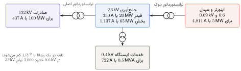
مثال 23.1 (پنج مگاوات، دو جریان) پرسش. جریانِ 5 MW را در خروجیِ اینورتر (0.6 kV) و در 33 kV حساب کنید. تلف در یک رسانای یکسان چند برابر کم میشود؟
پاسخ. با معادلهٔ 23.1: \(5 \times 10^6/(\sqrt{3} \times 600) = 4{,}811\,\text{A}\) و در 33 kV برابرِ \(87.5\,\text{A}\). نسبتِ جریان ۵۵ و نسبتِ تلف \(55^2 = 3{,}025\).
تفسیر. 4,811 A را با کابلِ معمولی نمیتوان چند صد متر برد: اینورتر و ترانسفورماتورِ بلوک کنارِ هم مینشینند و با شینه یا کابلهای موازیِ کوتاه به هم وصل میشوند. هر سطحِ ولتاژ ارزانترین راهِ بردنِ توانش در فاصلهای است که باید برود؛ هزینهٔ ترانسفورماتور و کلیدِ هر سطح در برابرِ تلف و مقطعِ رسانا سنجیده میشود (فصلهای ۱۸ و ۲۴). وارسی: در 132 kV و 100 MW، \(437\,\text{A}\): کمتر از یک چهارمِ جریانِ یک بخشِ 33 kV.
23.2.2 یک خط برای سه فاز
ایده. مدارِ سهفازِ متعادل سه رسانای هماندازه دارد که ولتاژ و جریانشان فقط ۱۲۰ درجه با هم فاصلهٔ فاز دارند. چون هر سه یکساناند، یکی را میکشیم: نمودارِ تکخطی (به انگلیسی single-line diagram) هر مدارِ سهفاز را با یک خط نشان میدهد. آنچه نامتعادل است یا فقط در یک فاز رخ میدهد (زمین، نول، ترانسفورماتورِ ولتاژِ تکفاز) جداگانه و صریح کشیده میشود.
line and phase voltages of Plant P's levels (star equivalent):
level line kV phase kV drawn as
LV board 0.40 0.231 one line
PV inverter 0.60 0.346 one line
turbine, battery 0.69 0.398 one line
collector 33.00 19.053 one line
export 132.00 76.210 one line
a balanced three-phase circuit is drawn as one line: the
other two phases are the same shifted by 120 degrees, so
P = sqrt 3 U I cos phi holds for the line the drawing shows;
the earthing, the neutral and anything unbalanced are drawn
explicitlyمثال 23.2 (ولتاژِ فاز و ولتاژِ خط) پرسش. ولتاژِ فاز در 33 kV و 132 kV چیست؟ توانِ یک فیدرِ 350 A در 33 kV را از راهِ ولتاژِ فاز حساب کنید.
پاسخ. 19.05 kV و 76.21 kV؛ \(3 \times 19.05 \times 350 = 20.0\,\text{MW}\)، همان \(\sqrt{3} \times 33 \times 350\).
تفسیر. دو راه یک پاسخ دارند؛ نمودارِ تکخطی همین همارزی را فرض میگیرد. جایی که این فرض نمیماند (خطای تکفاز به زمین، بارِ تکفازِ روشنایی) باید روی نقشه یا در یادداشتها بیاید. وارسی: \(33/\sqrt{3} = 19.05\).
- چرا منابع در ولتاژِ کم میسازند ولی توان در ولتاژِ بالا برده میشود؟
- جریانِ 20 MW در 33 kV با ضریبِ توانِ 0.95 چیست؟
- تلف در یک رسانا با دوبرابر شدنِ ولتاژ چند برابر میشود؟
- چه چیزهایی در نمودارِ تکخطی جداگانه کشیده میشوند؟
23.2.3 نمادها، قراردادهای نقشه و نامگذاری
ایده. نمودارِ تکخطی زبانی مشترک است: هر نماد یک تجهیز یا یک کارکرد است و خوانندهای در هر کشوری باید آن را یکسان بخواند. نمادهای برقی در پایگاهِ دادهٔ IEC 60617 و قاعدههای تهیهٔ نقشه و جدول در IEC 61082-1:2014 آمدهاند (بخش 23.14). این فصل شکلِ نمادها را از آنها نقل نمیکند؛ شکل 23.2 نمادهای آموزشیِ این کتاب را نشان میدهد که همان کارکردها را دارند.

| قرارداد | آنچه میگوید | خطای رایج |
|---|---|---|
| جهتِ جریانِ توان | منبع در یک سو، شبکه در سوی دیگر | پیکانی که با قراردادِ علامتِ D-010 نمیخواند |
| ولتاژ کنارِ هر شینه | سطحِ ولتاژ و نامِ شینه | شینهای بی ولتاژ |
| وضعیتِ عادیِ کلید | بسته، باز، یا «عادیِ باز» | کوپلرِ شینه بی علامتِ «عادیِ باز» |
| مقدارِ اسمی کنارِ هر تجهیز | MVA، ولتاژها، امپدانس، گروهِ برداری | مقدارِ موقت بی علامت |
| مرزها | مالکیت، حفاظت، آزمون با خطِچینِ جدا | مرزی که فقط در متن آمده |
| ارجاع | شمارهٔ نقشهٔ ادامه، برگ و ستون | خطی که به جایی نمیرسد |
| راهنما | فهرستِ نمادها و کوتهنوشتها | نمادِ «خانگی» بی توضیح |
نامگذاری. هر تجهیز یک نامِ مرجع دارد که در نمودارِ تکخطی، جانمایی، فهرستِ کابل، برچسبِ محل و سامانهٔ نگهداری یکسان است. ساختارِ IEC 81346 (فصلِ ۱۸) سه جنبه دارد: «=» میگوید چیز چه میکند، «−» چه محصولی است و «+» کجاست.
reference designations (aspects of IEC 81346, ch 18):
'=' says what a thing does, '-' what product it is, '+'
where it is; the same tag on the one-line, the layout, the
cable schedule, the label on site and the maintenance system
=WS1-W2 function WS1 (wind string 1), product W2 (cable 2)
=PVF1-1-T1 function PVF1-1 (PV block 1 of feeder 1), product T1
=T2-Q1 function T2 (main transformer 2), product Q1 (breaker)
=E1-Q9 +SS1.Y2 export bay E1, product Q9, place SS1 yard bay 2
letter codes of products (Q switching, T transforming, W
guiding power) come from the standard's classes; a project
rule-book fixes the rest before the first drawingمثال 23.3 (یک نام، پنج سند) پرسش. نامِ =T2-Q1 را بخوانید. اگر در نمودارِ تکخطی =T2-Q1 و در فهرستِ کابل «کلیدِ ترانس ۲» آمده باشد، چه خطری هست؟
پاسخ. کارکردِ ترانسفورماتورِ اصلیِ ۲، محصولِ Q1 (کلیدِ قدرت). دو نامِ متفاوت برای یک چیز یعنی هیچ برنامهای نمیتواند این دو سند را به هم وصل کند، و در محل کسی ممکن است کلیدِ اشتباه را باز کند.
تفسیر. کتابچهٔ قاعدههای نامگذاریِ پروژه پیش از نخستین نقشه نوشته میشود؛ تغییرِ نام پس از ساخت گران است. حرفهای ردهٔ محصول (مانندِ Q برای کلیدزنی، T برای تبدیل، W برای هدایتِ توان) از ردههای استاندارد میآیند. وارسی: همهٔ نامهای این فصل همین ساختار را دارند.
- دو مرجعِ نمادها و قاعدههای نقشه را نام ببرید.
- هفت قراردادِ جدول 23.1 را بنویسید.
- سه جنبهٔ نامِ مرجع را توضیح دهید.
- چرا قاعدهٔ نامگذاری پیش از نخستین نقشه نوشته میشود؟
23.2.4 نمودارِ تکخطیِ نیروگاهِ P و نقشه بهشکلِ داده
ایده. نمودارِ تکخطیِ نیروگاهِ P (شکل 23.3) از مبنای معماری (D-022) ساخته میشود: دوازده توربین روی سه رشتهٔ شعاعیِ 33 kV، ده بلوکِ خورشیدی روی سه فیدر، چهار بلوکِ باتری روی دو فیدر، شینهٔ دوبخشیِ 33 kV با کوپلرِ «عادیِ باز»، دو ترانسفورماتورِ 63 MVA، دو ترانسفورماتورِ خدماتِ ایستگاه و خطِ هوایی 132 kV تا بِیِ شبکه.
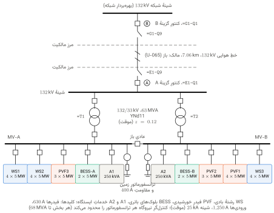
همان نقشه را میتوان بهشکلِ داده نوشت: شینهها (با ولتاژ، مالک و ناحیهٔ حفاظت) و شاخهها (ترانسفورماتور، کابل، کلید، خط) با مقدارهای اسمی و وضعیتِ هر مقدار: تأییدشده، موقت یا باز. آنگاه برنامه میتواند بشمرد، ردیابی کند و وارسی کند.
@dataclass
class Bus:
tag: str
kv: float
owner: str = "plant"
zone: str = "" # protection zone that covers the bus
@dataclass
class Branch:
tag: str
kind: str # transformer, cable, line, breaker, ...
a: str # bus tags at the two ends
b: str
owner: str = "plant"
zone: str = ""
rating: dict = field(default_factory=dict) # name -> value
status: dict = field(default_factory=dict) # name -> STATUS
isolation: bool = False # a point that can be opened and earthed
meter: str = "" # "revenue", "check" or ""
test: str = "" # test boundary: who tests what
def open_items(self) -> list[str]:
return [k for k, s in self.status.items() if s != "confirmed"]
class OneLine:
def __init__(self) -> None:
self.buses: dict[str, Bus] = {}
self.branches: list[Branch] = []
def add_bus(self, *buses: Bus) -> "OneLine":
for b in buses:
self.buses[b.tag] = b
return self
def add(self, *branches: Branch) -> "OneLine":
self.branches += branches
return self
def neighbours(self, bus: str):
for br in self.branches:
if br.a == bus:
yield br, br.b
elif br.b == bus:
yield br, br.aSECTIONS = { # 33 kV bus section -> feeders (A-316)
"MV-A": {"WS1": 4, "WS2": 4, "PVF3": 3, "BESS-A": 2},
"MV-B": {"WS3": 4, "PVF1": 4, "PVF2": 3, "BESS-B": 2},
}
UNIT_MW = {"WS": 5.0, "PVF": 5.0, "BESS": 5.0} # per turbine/block/PCSinventory of Plant P's one-line (with one PV block's DC side):
branches by kind:
breaker 17, cable 26, dc cable 1, dc switch 1,
disconnector 2, inverter 1, line 1, transformer 30
buses by voltage:
0.4 kV 2, 0.6 kV 10, 0.69 kV 16, 1.5 kV 3, 33 kV 40, 132 kV 8
buses by owner: open (U-065) 2, plant 75, utility 2
protection zones: 42
isolation points: 19
the drawing shows the same facts; the data lets a program
count, trace and check them, and both must agreeمثال 23.4 (نقشه و داده باید یکی باشند) پرسش. نمودارِ تکخطیِ نیروگاه چند ترانسفورماتور، چند کلیدِ قدرت و چند نقطهٔ جداسازی دارد؟ چرا هم نقشه لازم است و هم داده؟
پاسخ. ۳۰ ترانسفورماتور (۲ اصلی، ۲ خدمات، ۱۲ توربین، ۱۰ خورشیدی، ۴ باتری)؛ ۱۷ کلیدِ قدرت: ۸ فیدر، ۲ ورودیِ ترانسفورماتور و ۲ فیدرِ خدمات در 33 kV، کوپلر، ۲ بِیِ ترانسفورماتور و بِیِ خط در 132 kV و کلیدِ بِیِ شبکه؛ و ۱۹ نقطهٔ جداسازی در مدلِ آموزشی (با سمتِ DC یک بلوک).
تفسیر. نقشه را انسان میخواند و خطاهای «معنایی» را میبیند (حلقهای که نباید باشد)؛ داده را برنامه میخواند و خطاهای شمارشی و ناسازگاریها را مییابد (بخش 23.4). هر دو باید یکی باشند: در پروژهٔ واقعی نقشه از پایگاهِ داده ساخته میشود یا با آن تطبیق داده میشود. وارسی: \(2 + 2 + 12 + 10 + 4 = 30\) و \(8 + 2 + 2 + 1 + 2 + 1 + 1 = 17\).
- اجزای نمودارِ تکخطیِ نیروگاهِ P را از منبع تا شبکه نام ببرید.
- سه وضعیتِ هر مقدار را تعریف کنید.
- کدام خطاها را برنامه و کدام را انسان بهتر میبیند؟
- تخصیصِ فیدرها به دو بخشِ شینه را بنویسید.
23.2.5 مرزها: مالکیت، جداسازی، حفاظت و آزمون
ایده. چهار نوع مرز روی نمودارِ تکخطی کشیده میشود و هر کدام پرسشِ متفاوتی را پاسخ میدهد:
| مرز | پرسش | نشانه روی نقشه |
|---|---|---|
| مالکیت | چه کسی مالک، بهرهبردار و نگهدار است؟ | خطِچینِ مالکیت و نامِ دو طرف |
| جداسازی | کجا میتوان باز کرد و زمین کرد؟ | سکسیونر و کلیدِ زمین |
| ناحیهٔ حفاظت | کدام رله این بخش را میبیند؟ | محدودههای همپوشان با ترانسفورماتورِ جریان |
| آزمون | چه کسی چه چیزی را میآزماید و گواهی میدهد؟ | خطِچینِ آزمون و نامِ آزماینده |
قاعده. هر جا مالکیت عوض میشود، باید یک نقطهٔ جداسازی باشد تا هر طرف بتواند بخشِ خودش را جدا کند؛ و هر شاخه باید درونِ دستکم یک ناحیهٔ حفاظت باشد. این دو قاعده را برنامه وارسی میکند:
def checks(self) -> list[str]:
"""Design checks a reviewer runs on a one-line."""
out = []
for br in self.branches:
for end in (br.a, br.b):
if end not in self.buses:
out.append(f"{br.tag}: bus {end} not defined")
if br.kind == "transformer":
hv, lv = br.rating.get("hv_kv"), br.rating.get("lv_kv")
ends = {self.buses[e].kv for e in (br.a, br.b)
if e in self.buses}
if {hv, lv} != ends:
out.append(f"{br.tag}: windings {hv}/{lv} kV do not match"
f" buses {sorted(ends)}")
elif (br.kind != "inverter" and br.a in self.buses
and br.b in self.buses):
if self.buses[br.a].kv != self.buses[br.b].kv:
out.append(f"{br.tag}: {br.kind} joins two voltages")
if not br.zone:
out.append(f"{br.tag}: in no protection zone")
a_own = self.buses.get(br.a, Bus("", 0)).owner
b_own = self.buses.get(br.b, Bus("", 0)).owner
if a_own != b_own and not br.isolation:
out.append(f"{br.tag}: owner boundary without isolation point")
return outownership boundaries and the isolation point at each:
=E1-Q9 plant | open (U-065): isolation point
=G1-Q9 open (U-065) | utility: isolation point
two boundaries, both at disconnectors on the line; who owns
the line between them is open (U-065): the drawing marks it
open, it does not guessمثال 23.5 (مرزی که هنوز باز است) پرسش. نقشهٔ نیروگاهِ P کجا مالکیت را عوض میکند و چرا مالکِ خط «باز» نوشته شده است؟
پاسخ. در دو سکسیونرِ دو سرِ خطِ 132 kV: =E1-Q9 (نیروگاه | باز) و =G1-Q9 (باز | شبکه). مالکِ خط به پیشنهادِ اتصال بستگی دارد (U-065)؛ نقشه آن را باز نشان میدهد، نه حدس.
تفسیر. با هر دو گزینهٔ مالکیت (بخش 23.8.3) دو نقطهٔ جداسازی لازم است و هر دو روی نقشهاند؛ آنچه عوض میشود جای خطِچینِ مالکیت، جای کنتور و دامنهٔ آزمون است. وارسی: خروجیِ وارسیها برای نقشهٔ کامل خالی است (هیچ مرزی بی جداسازی نیست).
زمینِ سامانهٔ 33 kV. نوعِ زمینکردنِ هر سطحِ ولتاژ هم روی نقشه میآید، چون رفتارِ خطای زمین را تعیین میکند:
def earthing(limit_a: float = 400.0) -> None:
u_ph = 33e3 / math.sqrt(3)
r = u_ph / limit_a
p = u_ph * limit_a / 1e3
lines = ["the earth of the 33 kV system (main transformers YNd11):",
" the 33 kV windings are delta: they give the collector system",
" no neutral and no earth-fault current - an unearthed system",
" an earthing transformer per bus section with a resistor",
" that limits the earth-fault current to"
f" {limit_a:.0f} A (teaching):",
f" R = U_phase / I = {u_ph:,.0f} / {limit_a:.0f}"
f" = {r:.1f} ohm",
f" the resistor takes {p / 1e3:.1f} MW while a fault lasts",
" (seconds: it is rated by time, not continuously); the",
" one-line shows both earthing transformers, and the",
" protection of ch 26 uses the limited current to find the",
" faulted feeder"]
emit("m_earthing", lines)the earth of the 33 kV system (main transformers YNd11):
the 33 kV windings are delta: they give the collector system
no neutral and no earth-fault current - an unearthed system
an earthing transformer per bus section with a resistor
that limits the earth-fault current to 400 A (teaching):
R = U_phase / I = 19,053 / 400 = 47.6 ohm
the resistor takes 7.6 MW while a fault lasts
(seconds: it is rated by time, not continuously); the
one-line shows both earthing transformers, and the
protection of ch 26 uses the limited current to find the
faulted feederمثال 23.6 (سیمپیچِ مثلث، زمینِ گمشده) پرسش. چرا سامانهٔ 33 kV با ترانسفورماتورهای YNd11 بی زمین است؟ مقاومتِ محدودکنندهٔ خطای زمین برای 400 A چیست؟
پاسخ. سیمپیچِ 33 kV مثلث است و نقطهٔ نول ندارد. یک ترانسفورماتورِ زمین در هر بخشِ شینه نول میسازد؛ با \(R = 19{,}053/400 = 47.6\,\Omega\) جریانِ خطای زمین به 400 A محدود میشود.
تفسیر. بی زمین، خطای تکفاز جریانِ کمی دارد و رلهها نمیتوانند فیدرِ معیوب را بیابند و ولتاژِ فازهای سالم بالا میرود. مقدارِ 400 A آموزشی است؛ انتخابِ روش و مقدار با مطالعهٔ حفاظت (فصلِ ۲۶) و قاعدههای شبکه است. ترانسفورماتورِ زمین تجهیزی است که اگر روی نقشه نیاید، خریده نمیشود. وارسی: \(19{,}053 \times 400 = 7.6\,\text{MW}\) برای چند ثانیه.
- چهار مرزِ نمودارِ تکخطی و پرسشِ هر کدام را بنویسید.
- دو قاعدهٔ وارسیِ مرز را بنویسید.
- چرا مالکِ خط «باز» نوشته شده است؟
- مقاومتِ زمین برای 300 A در 33 kV چیست؟
23.2.6 نمودارِ امپدانس: پریونیت، سطحِ خطا و جابهجاییِ فاز
ایده. نمودارِ تکخطی سه سطحِ ولتاژ (132، 33 و 0.69 kV) را کنارِ هم میکشد. برای حساب روی آن، هر امپدانس را به یک پایهٔ مشترک میبریم: پریونیت (به انگلیسی per unit). با توانِ پایهٔ \(S_\text{b}\) (اینجا 100 MVA) و ولتاژِ پایهٔ هر سطح \(U_\text{b}\):
\[ Z_\text{b} = \frac{U_\text{b}^2}{S_\text{b}}, \qquad z = \frac{Z}{Z_\text{b}}, \qquad z_\text{new} = z_\text{own}\,\frac{S_\text{b}}{S_\text{own}} \tag{23.2}\]
ترانسفورماتور در پریونیت نسبتِ دور ندارد: امپدانسِ درصدیِ پلاکش (\(u_\text{k}\)) با تغییرِ پایه همان امپدانس در هر دو سو است. شبکهٔ بالادست با توانِ اتصالِ کوتاهش \(S_\text{k}\) یک راکتانسِ \(S_\text{b}/S_\text{k}\) است.
def zpu_own(z: float, s_own: float) -> float:
"""Impedance in pu on its own rating -> on the common base."""
return z * BASE / s_ownper-unit impedance diagram on a 100 MVA base (reactances, teaching):
base impedance: 132 kV -> 174.2 ohm; 33 kV -> 10.89 ohm
element rule x pu
grid (1,500 MVA) 1/15 0.0667
line 7.06 km, 0.418 ohm/km Z/Zbase 0.0169
T1 63 MVA, 12 % 0.12 x 100/63 0.1905
cable 1.1 km, 0.116 ohm/km Z/Zbase 0.0117
unit transformer 5.6 MVA, 7 % 0.07 x 100/5.6 1.2500
to the 33 kV bus (one T): 0.2741 pu -> 365 MVA, 6.4 kA
the same 365 MVA as the MVA method of lab G: two
notations of one calculation; per unit lets a single
diagram carry 132, 33 and 0.69 kV without ratios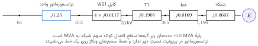
مثال 23.7 (نمودارِ امپدانسِ نیروگاه روی 100 MVA) پرسش. شبکهٔ 1,500 MVA، خطِ 7.06 km با 0.418 Ω/km در 132 kV، ترانسفورماتورِ 63 MVA با 12 %، یک بخشِ کابلِ 1.1 km و ترانسفورماتورِ واحدِ 5.6 MVA با 7 % را به پریونیت ببرید و سطحِ خطای شینهٔ 33 kV را بیابید.
پاسخ. \(0.0667\)، \(0.0169\)، \(0.1905\)، \(0.0117\) و \(1.25\)؛ تا شینهٔ 33 kV جمعاً \(0.2741\) یعنی 365 MVA و 6.4 kA.
تفسیر. همان عددِ روشِ MVA در بخش 23.8 است؛ دو نگارشِ یک حساباند. پریونیت برای شبکههای بزرگتر و برای افزودنِ مقاومت و توالیِ صفر (فصلِ ۲۶) سادهتر است. ترانسفورماتورِ واحد با یک پریونیت و ربع بزرگترین قطعهٔ مسیر است؛ دلیلش توانِ کوچکِ آن است، نه امپدانسِ درصدیِ بزرگ. وارسی: \(Z_\text{b} = 132^2/100 = 174.24\,\Omega\) و \(2.951/174.24 = 0.0169\).
سطحِ خطا در طولِ مسیر. برنامه مسیرِ انرژی را از مدلِ نمودار (بخش 23.2.4) از شبکه تا ترمینالِ دورترین توربین دنبال میکند و پس از هر شاخه امپدانس را جمع میزند:
def x_pu(br) -> float:
"""Series reactance of a one-line branch on the 100 MVA base."""
r = br.rating
if br.kind == "transformer":
return zpu_own(r["z_pu"], r.get("mva", r.get("kva", 0) / 1e3))
if br.kind == "cable":
return zpu_ohm(r["km"] * 0.116, 33.0)
if br.kind == "line":
return zpu_ohm(r["km"] * 0.418, 132.0)
return 0.0 # breakers, disconnectorsfault level along the energy path, grid to the farthest turbine
(reactances on 100 MVA, coupler open, grid part only):
after branch kind x pu total pu fault MVA
=E1-W1 line 0.0169 0.0836 1196
=E1-Q1 breaker 0.0000 0.0836 1196
=T1 transformer 0.1905 0.2741 365
=T1-Q2 breaker 0.0000 0.2741 365
=WS1-Q1 breaker 0.0000 0.2741 365
=WS1-W1 cable 0.0117 0.2858 350
=WS1-W2 cable 0.0117 0.2975 336
=WS1-W3 cable 0.0117 0.3092 323
=WS1-W4 cable 0.0117 0.3209 312
=WS1-4-T1 transformer 1.2500 1.5709 64
the fault level falls step by step away from the grid; the
unit transformer is the largest single step (1.25 pu): the
turbine's terminals see about 64 MVA from the grid, which
is also a measure of how stiff the grid looks to the
turbine's controls (ch 20, ch 28)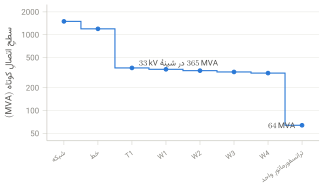
مثال 23.8 (سختیِ شبکه از دیدِ توربین) پرسش. سطحِ خطا در ترمینالِ توربینِ WS1-4 از سمتِ شبکه چیست و چه نسبتی با توانِ توربین دارد؟
پاسخ. حدودِ 64 MVA (شکل 23.5)؛ نسبت به 5.26 MVA توربین حدودِ ۱۲.
تفسیر. هر چه این نسبت کوچکتر، شبکه از دیدِ مبدل «نرمتر» است و کنترلِ ولتاژ و جریانِ مبدل حساستر (فصلهای ۲۰ و ۲۸). نسبتِ واقعیِ کل نیروگاه در نقطهٔ اتصال در فصلِ ۲۸ با دادهٔ بهرهبردار سنجیده میشود؛ اینجا نشان میدهیم نمودارِ تکخطی دادهاش را دارد. وارسی: \(100/1.5709 = 63.7\).
سطحِ خطا در ولتاژِ پایین. پشتِ ترانسفورماتورِ واحد، توانِ خطا کم ولی ولتاژ هم کم است؛ جریان بزرگ میماند:
fault levels at the units' low-voltage buses (teaching):
bus from MV kA units kA total kA
turbine LV, 0.69 kV (5.6 MVA, 7 %, far end) 53.3 5.3 58.5
PV station LV, 0.60 kV (5.5 MVA, 6 %) 69.2 5.8 75.0
station service, 0.40 kV (0.25 MVA, 4.5 %) 7.9 0.0 7.9
the unit transformer limits the LV fault, yet 5.6 MVA at
690 V still gives about 60 kA: the turbine's LV breaker and
busbar are rated for it (the maker's design), and the
converter adds its own share; a smaller transformer
impedance would raise both - a one-line value with
consequences inside the nacelleمثال 23.9 (58 kA در ناسل) پرسش. جریانِ خطا در شینهٔ 690 V توربین و 600 V ایستگاهِ خورشیدی چیست؟
پاسخ. توربین حدودِ 58.5 kA (سهمِ شبکه 53.3 و مبدل 5.3)؛ ایستگاهِ خورشیدی حدودِ 75 kA، چون کابلش کوتاهتر و امپدانسِ ترانسفورماتورش 6 % است.
تفسیر. کلید و شینهٔ LV درونِ توربین و ایستگاهِ اینورتر برای این جریان ساخته میشوند (طراحیِ سازنده). اگر خریدار ترانسفورماتورِ واحدی با امپدانسِ کمتر بخواهد (مثلاً برای افتِ ولتاژِ کمتر)، این جریان از رتبهٔ تجهیزِ LV میگذرد؛ عددی که روی نمودارِ تکخطی است پیامدش درونِ ناسل است. وارسی: \(100/(0.2741 + 4 \times 0.0117 + 1.25)/(\sqrt{3} \times 0.69) = 53.3\,\text{kA}\).
جابهجاییِ فاز. گروهِ برداریِ هر ترانسفورماتور یک جابهجاییِ فاز میسازد (فصل 25):
phase shift along the path, turbine terminals to 132 kV:
clock number 11: the low-voltage side leads by 30 degrees
unit transformer (Dyn11, teaching) LV leads by 30 deg
main transformer YNd11 LV leads by 30 deg
690 V leads 132 kV by 60 degrees; every source of the plant
passes the same main transformer, so all agree at the bus
the shifts matter where two sides are compared: the
differential relay (ch 26) and synchro-check across a
transformer compensate for them, and a meter wired across
the wrong pair of VTs reads a wrong power - the vector
group belongs on the one-line beside each transformerمثال 23.10 (شصت درجه از ترمینال تا خط) پرسش. با ترانسفورماتورِ واحدِ Dyn11 و اصلیِ YNd11، ولتاژِ 690 V نسبت به 132 kV چند درجه جابهجاست؟ کجا مهم است؟
پاسخ. ۶۰ درجه پیشفاز. در رلهٔ دیفرانسیل، وارسیِ همزمانی و سیمکشیِ کنتور.
تفسیر. همهٔ منبعهای نیروگاه از همان ترانسفورماتورِ اصلی میگذرند و در شینه با هم همفازند؛ ولی هر دستگاهی که دو سوی یک ترانسفورماتور را مقایسه میکند باید این جابهجایی را بداند. برای همین گروهِ برداری کنارِ نمادِ ترانسفورماتور روی نمودار نوشته میشود و در این فصل هنوز «موقت» است. وارسی: \(30 + 30 = 60\).
- امپدانسِ درصدیِ ترانسفورماتور روی پایهٔ خودش بهجای پایهٔ مشترک در جمع آمده است (خطای چندبرابری).
- امپدانسِ اهمیِ کابلِ 33 kV با پایهٔ 132 kV پریونیت شده است.
- سطحِ خطای سهمِ شبکه با سطحِ خطای کل (با مبدلها) یکی گرفته شده است.
- گروهِ برداری روی نمودار نیامده و دستگاهِ مقایسهگر بیجبرانِ جابهجایی تنظیم شده است.
- امپدانسِ پایه در 33 kV و 100 MVA چیست؟
- ترانسفورماتورِ 2.5 MVA با 6 % روی پایهٔ 100 MVA چند پریونیت است؟
- چرا ترانسفورماتور در پریونیت نسبتِ دور ندارد؟
- شبکهٔ 2,000 MVA چه راکتانسی روی 100 MVA است؟
- چرا بزرگترین قطعهٔ مسیر ترانسفورماتورِ واحد است؟
- سطحِ خطای 64 MVA در 690 V چند کیلوآمپر است؟
- اگر امپدانسِ ترانسفورماتورِ واحد 5 % شود، جریانِ خطای LV بیشتر یا کمتر میشود؟
- Dyn11 یعنی چه؟
- چرا جابهجاییِ فاز در شینهٔ مشترک مشکلی نمیسازد؟
- یک دستگاه نام ببرید که باید جابهجاییِ فاز را جبران کند.
23.3 ب. تجهیزات و رابطها
23.3.1 هر منبع و هر تجهیز روی نقشه
ایده. هر نماد روی نمودارِ تکخطی به یک بستهٔ تجهیزِ فیزیکی وصل است: یک ترانسفورماتور با برگهٔ داده، یک تابلو با جانمایی، یک کابل با مسیر. نقشه باید برای هر نماد بگوید چه چیزی خریده، کجا نصب، چگونه محافظت و چگونه آزموده میشود.
| منبع یا تجهیز | روی نقشه | بستهٔ فیزیکی | مرزِ عرضه |
|---|---|---|---|
| توربینِ بادی | مولد، مبدل، ترانسفورماتورِ واحد، کلیدِ MV | ناسل، برج، پایه، تابلوی RMU | پایانههای 33 kV ترانسفورماتور |
| بلوکِ خورشیدی | رشتهها، جعبهٔ تجمیع، اینورتر، ترانسفورماتورِ بلوک | ایستگاهِ اینورتر روی اسکید | پایانههای 33 kV اسکید |
| بلوکِ باتری | سلولها تا PCS، ترانسفورماتورِ بلوک | کانتینرها و اسکیدِ PCS | پایانههای 33 kV، تغذیهٔ کمکی (IF-006) |
| تابلوی 33 kV | شینهها، کلیدها، CT و VT | سلولهای تابلو در ساختمانِ پست | پایانههای کابل |
| ترانسفورماتورِ اصلی | دو سیمپیچ، گروهِ برداری، تپچنجر | ترانسفورماتور، فونداسیون، حوضچه | بوشینگها |
| خدماتِ ایستگاه | ترانسفورماتور، تابلوی LV | تابلوها در اتاقِ LV | فیدرهای خروجی |
| DC و UPS | باتری، شارژرها، توزیع | اتاقِ باتری و تابلوها | پایانههای مدارهای کنترل |
| کنتور و بِیِ خط | CT/VT کنتور، کلید، سکسیونر | بِیِ 132 kV در محوطه | مرزِ مالکیت (بخش 23.8) |
فهرستِ تجهیزات. از دادهٔ نقشه، فهرستِ تجهیزات (به انگلیسی equipment schedule) ساخته میشود: هر گروه با تعداد، مقدارِ اسمی و موردهای باز:
transformer schedule (grouped; open items flagged):
group n rating open
main 2 63 MVA 132/33 kV z 0.12 z_pu, vector, tap
station service 2 250 kVA 33/0.4 kV z 0.045 kva
WS unit 12 5.6 MVA 33/0.69 kV z 0.07 z_pu
PV unit 10 5.5 MVA 33/0.6 kV z 0.06 z_pu
BESS unit 4 5.5 MVA 33/0.69 kV z 0.06 z_pu
30 transformers; every impedance is provisional until
the makers' offers and the fault study (ch 25, 26)مثال 23.11 (امپدانسی که هنوز موقت است) پرسش. کدام مقدارهای ترانسفورماتورها موقت یا باز است و چه کسی آنها را میبندد؟
پاسخ. امپدانسِ همهٔ ۳۰ ترانسفورماتور موقت است؛ گروهِ برداریِ ترانسفورماتورهای اصلی موقت و دامنهٔ تپ باز؛ اندازهٔ ترانسفورماتورهای خدمات موقت (تا محاسبهٔ بخش 23.7). امپدانسها با پیشنهادِ سازندگان و مطالعهٔ اتصالِ کوتاه (فصلهای ۲۵ و ۲۶)، تپ با مطالعهٔ ولتاژ و الزامِ شبکه بسته میشوند.
تفسیر. مقدارِ موقت عیب نیست؛ مقدارِ موقتی که علامت نخورده عیب است: کسی با آن طراحی میکند و فکر میکند قطعی است. فهرست هر موردِ باز را با بستندهاش ثبت میکند. وارسی: \(2 + 2 + 12 + 10 + 4 = 30\) ترانسفورماتور.
- مرزِ عرضهٔ توربین، بلوکِ خورشیدی و بلوکِ باتری کجاست؟
- فهرستِ تجهیزات از کجا ساخته میشود؟
- چه کسی امپدانسِ ترانسفورماتور را میبندد؟
- فرقِ مقدارِ موقت و مقدارِ بیعلامت چیست؟
23.3.2 نقشهها و فهرستهای رابط
ایده. هر بستهٔ تجهیز با بستههای دیگر از هفت راه پیوند دارد: توان، زمین، کنترل (سیمکشیِ فرمان و حفاظت)، ارتباطات (داده)، مکانیکی (پایه، فونداسیون، تکیهگاه)، سرمایش (هوا، مایع) و تغذیهٔ کمکی. هر پیوند یک رابط است و یک نقشه یا فهرستِ رابط، یک مالک در هر طرف و یک آزمون میخواهد (فهرستِ رابطهای فصلِ ۱۸).
PACKAGES = ["wind turbine", "PV block", "battery block", "MV switchgear",
"main transformer", "station service", "DC and UPS",
"PPC and SCADA", "HV bay and meter", "export line"]
TYPES = ["power", "grounding", "control", "comms", "mechanical", "cooling",
"aux supply"]
ALL = "power grounding control comms mechanical cooling aux supply"
NEEDS = { # package -> interface types it has (A-319)
"wind turbine": ALL,
"PV block": ALL,
"battery block": ALL,
"MV switchgear": ALL.replace(" cooling", ""),
"main transformer": ALL.replace(" comms", ""),
"station service": "power grounding control comms mechanical",
"DC and UPS": ALL.replace(" aux supply", ""),
"PPC and SCADA": "control comms mechanical cooling aux supply",
"HV bay and meter": ALL.replace(" cooling", ""),
"export line": "power grounding comms mechanical",
}interface matrix of the equipment packages (x = an interface):
package pow gnd ctl com mech cool aux
wind turbine x x x x x x x
PV block x x x x x x x
battery block x x x x x x x
MV switchgear x x x x x . x
main transformer x x x . x x x
station service x x x x x . .
DC and UPS x x x x x x .
PPC and SCADA . . x x x x x
HV bay and meter x x x x x . x
export line x x . x x . .
59 interfaces across 10 packages; each one gets a
drawing or a schedule, an owner on both sides and a test
(the register of ch 18 carries them, PLP-GEN-REG-0004)مثال 23.12 (پنجاهونُه رابط) پرسش. ماتریسِ رابط چند رابط دارد؟ کدام بستهها هر هفت نوع را دارند و برای هر نوع یک سندِ نمونه نام ببرید.
پاسخ. ۵۹ رابط در ۱۰ بسته. توربین، بلوکِ خورشیدی و بلوکِ باتری هر هفت نوع را دارند. سندها: توان (نقشهٔ پایانهها و فهرستِ کابل)، زمین (نقشهٔ اتصال به شبکهٔ زمین)، کنترل (نقشهٔ مدارهای فرمان و فهرستِ سیگنال)، ارتباطات (نقشهٔ شبکه و فهرستِ نقطهها)، مکانیکی (نقشهٔ بارهای فونداسیون)، سرمایش (برگهٔ دادهٔ گرما و هوا)، تغذیهٔ کمکی (فهرستِ بار و نقشهٔ تغذیه).
تفسیر. رابطِ بیسند همان جایی است که دو پیمانکار هر کدام فکر میکنند کار با دیگری است. شمارشِ رابطها اندازهٔ کارِ هماهنگی را هم نشان میدهد: ۵۹ رابط یعنی ۵۹ جفت امضا. وارسی: شمارِ «x»ها در خروجی ۵۹ است.
| رابط | نقشه یا فهرست | آنچه باید داشته باشد |
|---|---|---|
| توان | نقشهٔ پایانه، فهرستِ کابل | مقطع، تعدادِ رشته، گشتاورِ اتصال، فاز |
| زمین | نقشهٔ زمین | نقطههای اتصال، مقطعِ هادیِ زمین |
| کنترل | نقشهٔ مدار، فهرستِ پایانه | شمارهٔ رشته، ولتاژِ کنترل، منبعِ DC |
| ارتباطات | معماریِ شبکه، فهرستِ نقطه | پروتکل، نشانی، مقیاس، زمانمهر |
| مکانیکی | نقشهٔ بار و پیچها | بار، ابعاد، تراز، فاصلهها |
| سرمایش | برگهٔ گرما | تلف، دبیِ هوا یا مایع، دمای ورودی |
| تغذیهٔ کمکی | فهرستِ بار | توان، ولتاژ، حالتها، اولویت |
- هفت نوع رابط را نام ببرید.
- چرا بستهٔ کنترل رابطِ توان ندارد؟
- برای رابطِ ارتباطات چهار چیزی که فهرستِ نقطه باید داشته باشد بنویسید.
- رابطِ بیسند چه خطری دارد؟
23.3.3 بارگذاریِ بخشهای شینه و جریانِ فیدرها
ایده. تخصیصِ فیدرها به دو بخشِ شینهٔ 33 kV یک تصمیمِ طراحی است: هر بخش به یک ترانسفورماتور میرسد، پس جمعِ منابعِ هر بخش با مقدارِ اسمیِ ترانسفورماتورش مقایسه میشود.
loading of each 33 kV bus section (all sources at full output):
section feeders MW MVA pf .95 T rating
MV-A WS1 4, WS2 4, PVF3 3, BESS-A 2 65 68.4 63 MVA
MV-B WS3 4, PVF1 4, PVF2 3, BESS-B 2 65 68.4 63 MVA
each section can exceed its transformer when wind, PV and the
battery peak together: the plant controller limits each
transformer, not only the 100 MW at the POC (ch 20), or the
battery charges in those hours; with one transformer out,
the other carries the plant through the bus coupler, so the
export falls to about 60 MW until the repair (ch 18)مثال 23.13 (شصتوپنج مگاوات روی شصتوسه مگاولتآمپر) پرسش. هر بخشِ شینه در بیشینهٔ همزمانِ منابع چقدر توان دارد؟ با ترانسفورماتورِ 63 MVA چه باید کرد؟
پاسخ. هر بخش 65 MW، یعنی 68.4 MVA با ضریبِ توانِ 0.95: بیش از 63 MVA.
تفسیر. سه راه هست: (۱) کنترلگرِ نیروگاه هر ترانسفورماتور را هم محدود کند، نه فقط 100 MW در نقطهٔ اتصال (فصلِ ۲۰)؛ (۲) باتری در آن ساعتها شارژ شود؛ (۳) ترانسفورماتورِ بزرگتر. چون بیشینهٔ همزمانِ باد، خورشید و دشارژِ باتری نادر است و صادرات بههرحال 100 MW محدود است، راهِ (۱) ارزانترین است و در مبنای برق (D-027) آمده است. با یک ترانسفورماتورِ خارج از کار، دیگری از راهِ کوپلر کلِ نیروگاه را میبرد و صادرات تا تعمیر به حدودِ 60 MW میافتد (فصلِ ۱۸). وارسی: \(65/0.95 = 68.4\).
جریانِ فیدرها. هر فیدر با مقدارِ اسمیِ کابل و کلیدش مقایسه میشود (پیش از کاهشِ ظرفیتِ نصب):
feeder currents at full output against the provisional ratings:
feeder MW A at 33 kV cable 410 A breaker 630 A
WS1 20 368 90% 58%
WS2 20 368 90% 58%
PVF3 15 276 67% 44%
BESS-A 10 184 45% 29%
WS3 20 368 90% 58%
PVF1 20 368 90% 58%
PVF2 15 276 67% 44%
BESS-B 10 184 45% 29%
the heaviest feeder uses 90% of the 240 mm2 cable at full
output and pf 0.95 before any derating; installation
derating (depth, grouping, soil) is chapter 24's work and
may push the first section to a larger sizeمثال 23.14 (نود درصدِ کابل) پرسش. سنگینترین فیدرها چند درصدِ کابلِ 240 mm² و کلیدِ 630 A را مصرف میکنند؟
پاسخ. فیدرهای بادی و PVF1: 368 A، یعنی 90 % کابل و 58 % کلید.
تفسیر. 90 % پیش از کاهشِ ظرفیت برای عمقِ دفن، گروهبندی و خاک کم است؛ نخستین بخشِ هر فیدر (نزدیکِ پست، با بیشترین جریان) ممکن است مقطعِ بزرگتری بخواهد. این کارِ فصلِ ۲۴ است؛ اینجا فقط پرچم زده میشود. وارسی: \(20/0.95/(\sqrt{3} \times 33) = 368\,\text{A}\).
- بارِ هر بخشِ شینه را از تخصیصِ فیدرها حساب کنید.
- سه راهِ رفعِ بیشبارِ ترانسفورماتور را نام ببرید.
- چرا پرچمِ 90 % کابل اینجا حل نمیشود؟
- اگر یک ترانسفورماتور خارج شود، صادرات چه میشود؟
23.3.4 کمیتهای مداری: افزایشِ ولتاژ، جداسازیِ هر بخش و مقدارِ کابل
افزایشِ ولتاژ در رشته. نمودارِ تکخطی کنارِ هر کابل جریان و طول دارد؛ از این دو، افزایشِ ولتاژ در طولِ رشته هم به دست میآید. هر بخش توانِ همهٔ واحدهای پس از خود را میبرد و تغییرِ ولتاژش تقریباً \((P R + Q X)/U^2\) است:
def string_profile(n: int = 4, km: float = 1.1, p_mw: float = 5.0,
q_mvar: float = 0.0, r: float = 0.160, x: float = 0.116):
"""Voltage rise along a radial string at full output: section k
(from the substation) carries the units beyond it; dU = (P R + Q X)/U."""
rise, rows = 0.0, []
for k in range(1, n + 1):
carried = n - k + 1
p, q = carried * p_mw, carried * q_mvar
du = (p * r * km + q * x * km) / 33.0 ** 2 # per unit
rise += du
rows.append((k, carried, du, rise))
return rowsvoltage rise along wind string WS1 at full output (pf 1):
section units carried section rise % rise at its end %
1 4 0.32 0.32
2 3 0.24 0.57
3 2 0.16 0.73
4 1 0.08 0.81
with pf 0.95 (1.64 Mvar a unit exported): far end 1.00 %
the far turbine sits highest; the turbine's own voltage
range and the plant controller's reactive set-points must
allow it (ch 20, 27) - another quantity the one-line now
carries beside the cableمثال 23.15 (دورترین توربین، بالاترین ولتاژ) پرسش. ولتاژ در دورترین توربینِ رشتهٔ WS1 در بیشینهٔ تولید چقدر از شینهٔ پست بالاتر است؟ با تبادلِ توانِ واکنشی چه؟
پاسخ. با ضریبِ توانِ ۱ حدودِ 0.81 %؛ با 1.64 Mvar صادراتی در هر واحد (ضریبِ 0.95) حدودِ 1.00 %.
تفسیر. بخشِ نخست بیشترین سهم را دارد چون همهٔ رشته را میبرد. یک درصد کم است، اما اگر ولتاژِ شینه خودش در بالای محدوده باشد، دورترین توربین ممکن است از محدودهٔ خود بیرون برود؛ تنظیمِ توانِ واکنشیِ کنترلگر باید این را ببیند (فصلهای ۲۰ و ۲۷). وارسی: \(20 \times 0.160 \times 1.1/33^2 = 0.32\,\%\).
مرزِ جداسازیِ هر بخش. برای هر تجهیز باید روشن باشد با باز کردنِ کدام نقطهها جدا میشود. برنامه از دو سرِ شاخه بیرون میرود و در نخستین نقطهٔ جداسازیِ هر مسیر میایستد:
isolation boundary of the cable section =WS2-W3:
draft one-line, isolation points: 1
=WS2-Q1
only the feeder breaker: the whole string and its four
turbines go out - the draft has no switches in the RMUs
with RMU cable and T-off switches, isolation points: 4
=WS2-2-T1, =WS2-3-T1, =WS2-W2, =WS2-W4
a section that can be isolated only by stopping the whole
string costs a string's energy at every repair; the RMU
switches belong on the one-line (an omission of rev A)مثال 23.16 (سوئیچهایی که نقشه فراموش کرده بود) پرسش. برای تعمیرِ بخشِ کابلِ =WS2-W3 در نقشهٔ بازنگریِ A کدام نقطهها باز میشوند؟ با سوئیچهای واحدِ حلقوی چه؟
پاسخ. فقط کلیدِ فیدرِ =WS2-Q1: کلِ رشته و چهار توربینش از کار میافتند. با سوئیچهای کابل و انشعابِ واحدهای حلقوی، چهار نقطه: سوئیچهای دو بخشِ مجاور و سوئیچهای انشعابِ دو توربینِ دو سرِ بخش.
تفسیر. این یک جاافتادگی در نقشهٔ بازنگریِ A است (بخش 23.4.2): واحدهای حلقوی در نقشه بودند اما سوئیچهایشان نه. بی آنها، هر تعمیرِ کابل انرژیِ یک رشتهٔ کامل را میگیرد. بازنگریِ B آنها را میافزاید. اینجا فقط مرزِ جداسازی تعیین میشود؛ روالِ جداسازی و زمینکردن سندِ بهرهبرداری است و با کارکنانِ صلاحیتدار اجرا میشود. وارسی: ۲ سوئیچِ کابل و ۲ سوئیچِ انشعاب.
مقدارِ کابل، مفصل و سرکابل. مقدارها تا نقشهبرداریِ مسیر محدود (با بازه) گزارش میشوند:
bounded cable quantities for the 33 kV collector:
route length 21.6 km of three-core cable; drums of 500 m
joints 38, terminations 52 (two per section)
with the route still +/- 15 %: 18.4 to 24.8 km
quantities are bounded, not exact, until the route survey;
the joints and terminations are where cable faults start,
so their count is a reliability number too (ch 24)مثال 23.17 (سیوهشت مفصل) پرسش. با قرقرههای 500 m، چند مفصل و چند سرکابل لازم است؟ بازهٔ طول با ±15 % چیست؟
پاسخ. ۳۸ مفصل (۲ در هر بخشِ بادیِ 1.1 km و ۱ در هر بخشِ 0.6 km) و ۵۲ سرکابل؛ طول 18.4 تا 24.8 km.
تفسیر. مفصلها و سرکابلها جاییاند که بیشترِ خرابیهای کابل آغاز میشود؛ شمارشان عددی برای قابلیتِ اطمینان هم هست (فصلِ ۲۴). وارسی: \(12 \times 2 + 14 \times 1 = 38\).
- افزایشِ ولتاژ در بخشی که 10 MW را 1.1 km میبرد چیست؟
- مرزِ جداسازیِ یک بخش را تعریف کنید.
- چرا سوئیچهای واحدِ حلقوی ارزش دارند؟
- مفصلهای یک بخشِ 1.4 km با قرقرهٔ 500 m چندتاست؟
23.4 پ. تهیه و بازبینیِ نقشه
23.4.1 از پیشنویس تا «برای ساخت»
ایده. نمودارِ تکخطی چند بار عوض میشود: نخست با فرضهای طراحیِ موقت، سپس با پیشنهادِ سازندگان، مطالعهها و پیشنهادِ اتصال. هر بازنگری وضعیتی دارد که میگوید سند برای چه کاری مجاز است («برای بازبینی»، «برای تأیید»، «برای ساخت»: فصلِ ۲) و دلیلِ تغییر را ثبت میکند.
revision log of the plant one-line (PLP-ELE-DWG-0005, teaching):
rev status change
A IFR first issue for internal review
B IFR battery moved to its own bays; SST 250 kVA
C IFA issued to the utility with POC options A/B
0 IFC after the grid offer: line owner, meter, CTs
1 IFC turbine maker's transformer impedance
letters before construction, numbers after; each revision
says what changed and why, and clouds the change on the
sheet; the status (IFR, IFA, IFC: ch 2) says what the
drawing may be used forمثال 23.18 (نقشهای که نباید با آن ساخت) پرسش. با بازنگریِ C (برای تأیید) میتوان تابلو سفارش داد؟ کدام رخداد نقشه را به «برای ساخت» برد؟
پاسخ. نه: IFA برای تأییدِ بهرهبردارِ شبکه است، نه برای ساخت. پیشنهادِ اتصال (مالکِ خط، جای کنتور، نسبتهای CT) آن را به بازنگریِ 0 و IFC برد.
تفسیر. سفارشِ تجهیز با نقشهٔ IFA یعنی خطرِ خریدِ چیزی که بعد عوض میشود. هر بازنگری تغییر را روی برگ ابرنشان میکند تا بازبین فقط تغییر را ببیند. وارسی: حرفها پیش از ساخت، عددها پس از آن.
23.4.2 بازبینی با برنامه: خطاهای کاشتهشده
ایده. بازبین خطاهای رایج را میجوید: ولتاژِ سیمپیچی که با شینه نمیخواند، شاخهٔ بیحفاظت، مرزِ بیجداسازی، شینهٔ تعریفنشده، نامِ تکراری، ترانسفورماتورِ کوچکتر از بار، فیدرِ پربار، و کنتورِ گمشده. چهار وارسیِ اول عمومیاند (بخش 23.2.5) و چهار وارسیِ پروژهای اینجا نوشته میشوند:
def project_checks(g: ol.OneLine) -> list[str]:
out = []
dup = [t for t, n in Counter(b.tag for b in g.branches).items() if n > 1]
out += [f"{t}: tag used twice" for t in dup]
p, q, s = ax.demand(src.AUX, "normal", src.DIVERSITY)
for b in g.branches:
kva = b.rating.get("kva")
if kva and kva < s * 1.2: # N-1: one SST carries all
out.append(f"{b.tag}: {kva} kVA below {s * 1.2:.0f} kVA needed")
for sec in ("MV-A", "MV-B"):
for br, head in g.neighbours(sec):
if br.kind != "breaker" or "-0" not in head:
continue
n = sum(1 for b in g.buses if b.startswith(head[:-2] + "-")
and not b.endswith(("-0", "-LV")))
i = n * 5.0e6 / 0.95 / (math.sqrt(3) * 33e3)
if i > CABLE_A:
out.append(f"{br.tag}: {n} units, {i:.0f} A"
f" above {CABLE_A:.0f} A")
if not any(b.meter.startswith("revenue") for b in g.branches):
out.append("no revenue meter on the one-line")
return outreview of a draft one-line (8 errors planted):
generic one-line checks:
=T2: windings 132.0/34.5 kV do not match buses [33.0, 132.0]
=WS2-W3: in no protection zone
=PVF2-W3: bus PVF2-30 not defined
=E1-W2: owner boundary without isolation point
project checks:
=PVF3-Q1: tag used twice
=A1-T1: 160 kVA below 201 kVA needed
=WS2-Q1: 5 units, 460 A above 410 A
no revenue meter on the one-line
findings 8 for 8 planted errors;
one fault no check sees: the line E1-W2 also closes a loop
around the line bay - only a person who knows the plant
is radial sees it
a check found by a program is cheap; one found on site is
not - but a program checks only what someone wrote downمثال 23.19 (هشت از هشت، و یکی که برنامه نمیبیند) پرسش. در پیشنویسی با هشت خطای کاشته، وارسیها چند یافته دارند؟ کدام عیب را هیچ وارسیای نمیبیند؟
پاسخ. هشت یافته برای هشت خطا. خطِ اضافیِ =E1-W2 هم مرزِ بیجداسازی است (یافته شد) و هم یک حلقه در نیروگاهی که باید شعاعی باشد؛ حلقه را فقط کسی میبیند که میداند نیروگاه شعاعی است.
تفسیر. برنامه فقط آنچه را که کسی نوشته وارسی میکند؛ بازبینِ انسانی معنا را میبیند. هر دو لازماند: برنامه شمارش و سازگاری را ارزان میکند تا وقتِ انسان صرفِ معنا شود. یافتنِ خطا روی کاغذ تقریباً رایگان است و در محل گران. وارسی: چهار یافتهٔ عمومی و چهار یافتهٔ پروژهای.
جاافتادگیهای رایج. فهرستی که بازبین پیش از امضا مرور میکند:
- ترانسفورماتورِ زمین و مقاومتش در سامانهای با سیمپیچِ مثلث (مثال 23.6).
- کلیدِ ورودیِ ترانسفورماتور در سمتِ 33 kV و کلیدِ زمینِ هر بخش.
- CT و VT کنتور با ردهٔ دقت و مالکِ آن.
- تغذیهٔ کمکیِ هر بسته (توربین بیباد، اینورترِ شب، باتریِ در انتظار).
- منبعِ DC مدارهای قطع و وصل.
- علامتِ «عادیِ باز» روی کوپلر و نقطههای باز.
- مرزهای مالکیت، آزمون و حفاظت روی نقشه، نه فقط در متن.
- مقدارهای موقت با علامت و موردهای باز با شمارهٔ مجهول.
- ارجاع به نقشههای ادامه و راهنمای نمادها.
- سامانهٔ حفاظتِ صاعقه و اتصالهای همپتانسیل، که روی نقشههای دیگر میآیند اما از این نقشه ارجاع داده میشوند (فصلِ ۲۶).
- سه وضعیتِ سند و کاربردِ هر کدام را بنویسید.
- چهار وارسیِ عمومی و چهار وارسیِ پروژهای را نام ببرید.
- چرا حلقهٔ کاشتهشده را برنامه نمیبیند؟
- پنج جاافتادگیِ رایج را بنویسید.
23.4.3 نمودار بهعنوانِ رشتهای از حالتها
ایده. نمودارِ تکخطی برای ساخت یک تصویرِ ثابت است؛ برای برقدار کردن و بهرهبرداری رشتهای از حالتهاست: کدام کلیدها بستهاند، کدام بخشها برق دارند، مرزِ برقدار و بیبرق کجاست. برنامه با جستوجو در گراف از شبکه، از روی کلیدهای بسته، بخشهای برقدارِ هر مرحله را مییابد. این حالتهاست، نه روالِ کلیدزنی؛ روالِ کلیدزنی کارِ بهرهبردار با قاعدههای ایمنیِ خودش است.
def energised(closed: set) -> set:
g = src.plant()
live, q = {"GRID"}, deque(["GRID"])
while q:
b = q.popleft()
for br in g.branches:
if br.kind in ("breaker", "disconnector") and br.tag not in closed:
continue
for x, y in ((br.a, br.b), (br.b, br.a)):
if x == b and y not in live:
live.add(y)
q.append(y)
return liveenergisation stages traced through the one-line (states only):
stage live buses newly live
S0 utility bay live 2 GRID, GRID-BAY
S1 line live to the plant bay 5 E1, LINE-G, LINE-P
S2 132 kV bus and T1 8 HV, T1-HV, T1-MV
S3 33 kV section A, station service 11 A1-MV, LV-A, MV-A
S4 first wind string 20 WS1-0, WS1-1, WS1-1-LV
+6
each stage moves the boundary between live and dead plant:
the tests of everything newly live come before it, the
permits and the operator's switching rules change with it,
and the drawings of the stage must be issued for
construction - the one-line becomes a series of states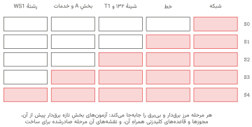
مثال 23.20 (پنج مرحله، پنج مرز) پرسش. در هر مرحلهٔ شکل 23.6 کدام بخشها تازه برقدار میشوند و پیش از آن چه باید آماده باشد؟
پاسخ. S0: بِیِ شبکه (۲ شینه)؛ S1: خط تا بِیِ نیروگاه (۵)؛ S2: شینهٔ 132 kV و T1 (۸)؛ S3: بخشِ A و خدماتِ ایستگاه (۱۱)؛ S4: رشتهٔ WS1 با چهار ترانسفورماتورِ واحد (۲۰). پیش از هر مرحله: آزمونهای آنچه تازه برقدار میشود، نقشههای آن مرحله در وضعیتِ «برای ساخت»، و مجوزهای کار و قاعدههای کلیدزنیِ تازه.
تفسیر. از S1 به بعد، بخشی از نیروگاه برق دارد در حالی که کار در بخشهای دیگر ادامه دارد؛ مرزِ برقدار باید روی زمین (قفل، برچسب، حصار) و روی نمودارِ بهرهبرداری یکی باشد. در S3 خدماتِ ایستگاه برای نخستین بار از شبکه تغذیه میشود و دیزلِ ساخت کنار میرود. فصلهای ۴۸ تا ۵۰ این مرحلهها را با آزمونها و شاهدهایشان کامل میکنند. وارسی: شمارِ شینهها خروجیِ برنامه است، نه شمردنِ دستی.
قفلهای داخلی از روی نمودار. سکسیونر جریانِ بار را قطع نمیکند؛ پس فقط وقتی کلیدِ کنارش باز است اجازهٔ حرکت دارد. برنامه این قاعده را از همسایگیِ شاخهها در گراف بیرون میکشد:
interlocks derived from the one-line: a disconnector may move
only with its neighbouring breaker open (no load breaking):
=E1-Q9 needs =E1-Q1 open
=G1-Q9 needs =G1-Q1 open
an interlock inside one owner's gear is wired; one across
the boundary (the utility's breaker, the plant's
disconnector) needs a key system or a joint operating
procedure - an item for the connection agreement (U-065)مثال 23.21 (قفلی که از مرزِ مالکیت میگذرد) پرسش. کدام قفلِ داخلیِ مشتقشده از یک مرزِ مالکیت میگذرد و چه باید کرد؟
پاسخ. =G1-Q9 به باز بودنِ =G1-Q1 نیاز دارد؛ مالکِ سکسیونر هنوز باز است (U-065) و کلید از آنِ بهرهبردار.
تفسیر. قفلی که درونِ تابلوی یک مالک است سیمکشی میشود؛ قفلِ میانِ دو مالک یا با سامانهٔ کلیدِ مکانیکی (کلیدی که فقط با باز بودنِ کلیدِ قدرت آزاد میشود) ساخته میشود یا با روالِ مشترکِ بهرهبرداری. هر دو در قراردادِ اتصال نوشته میشوند. این همان مرزی است که در بخش 23.8 رسم کردیم، این بار با پیامدِ عملیاتی. وارسی: دو سکسیونر در مدل، هر دو با یک کلیدِ همسایه.
وضعیتِ فهرستِ نقشهها. هر نقشه وضعیت دارد: صادرشده برای بازبینی (IFR)، برای تأیید (IFA)، برای ساخت (IFC)، و منسوخ:
status of the electrical drawing register (teaching, 32 entries):
IFC 14
IFA 9
IFR 6
superseded 3
issued for construction: 48% of the 29 current drawings
IFR issued for review, IFA issued for approval, IFC issued
for construction; superseded drawings stay in the register
but leave the site; a stage may be energised only when its
drawings are IFC and its as-built mark-ups are recordedمثال 23.22 (نیمی «برای ساخت») پرسش. از ۳۲ ردیفِ فهرست، چند درصدِ نقشههای جاری «برای ساخت»اند؟ آیا مرحلهٔ S3 میتواند برقدار شود؟
پاسخ. ۱۴ از ۲۹، یعنی 48 %. پاسخِ پرسشِ دوم به این بستگی دارد که نقشههای همان مرحله (شینهٔ 33 kV، ورودی، خدماتِ ایستگاه) «برای ساخت» و نشانهگذاریهای اجراییشان ثبت شده باشند؛ درصدِ کل کافی نیست.
تفسیر. فهرستِ نقشهها با مرحلهها پیوند میخورد: هر مرحله فهرستِ نقشههای لازمِ خودش را دارد. نقشهٔ منسوخ در فهرست میماند (تاریخچه) ولی از کارگاه جمع میشود. وارسی: \(14/29 = 0.48\).
از نمودارِ طراحی تا میمیکِ بهرهبرداری. اپراتور نمودارِ دیگری میبیند: میمیک در SCADA:
from the design one-line to the operator's mimic (counts from the model):
breaker 17
cable 26
disconnector 2
line 1
transformer 30
isolation points (each with an earthing switch on the mimic): 17
(19 with the DC detail of one PV block, as counted in lesson A)
the mimic keeps every switchable device, its state and its
interlocks, the live/dead colouring and the earths; it
drops ratings, cable lengths and the status of data; the
design one-line is the reverse - one model feeds both, so
a change on one shows on the other (ch 34 for SCADA)مثال 23.23 (یک مدل، دو نما) پرسش. میمیک چه چیزی از نمودارِ طراحی را نگه میدارد و چه چیزی را کنار میگذارد؟
پاسخ. نگه میدارد: ۱۷ کلید، ۲ سکسیونر، وضعیتِ هر کدام، قفلها، رنگِ برقدار و بیبرق و زمینها. کنار میگذارد: رتبهها، طولِ کابلها و وضعیتِ داده.
تفسیر. اگر میمیک و نمودارِ طراحی دو فایلِ جدا باشند، دیر یا زود از هم دور میشوند و اپراتور روی تصویری غلط کلید میزند. یک مدلِ داده که هر دو را بسازد این خطر را کم میکند (فصلِ ۳۴). وارسی: شمارشها خروجیِ مدلاند.
نمودارِ ارتباطات روی نمودارِ قدرت. فیبرِ نوری در همان ترانشهٔ کابل میرود و یک نمودارِ دوم میسازد:
the communications one-line on the power one-line (teaching):
fibre runs in every collector trench beside the cable;
12 turbines on 3 strings, PV stations and BESS on their feeders
each string as a chain of switches back to the substation:
first turbine: 1 links, available 0.9950
last turbine: 4 links, available 0.9801
closing the chain into a ring (fibre back along the next string):
last turbine available 0.999901 - two paths instead of one
a fibre ring is cheap where trenches already exist, unlike
the power ring of ch 18; the comms one-line shows each
switch, its supply (UPS of lesson F) and its owner, and
joins the interface register (lesson B)مثال 23.24 (حلقهٔ فیبر، نه حلقهٔ کابل) پرسش. دسترسپذیریِ ارتباطِ آخرین توربینِ یک رشته با زنجیره و با حلقه چیست (هر پیوند 0.995)؟
پاسخ. زنجیره \(0.995^4 = 0.9801\)؛ حلقه \(0.999901\).
تفسیر. حلقهٔ کابلِ قدرت در فصلِ ۱۸ گران و کمسود بود؛ حلقهٔ فیبر ارزان است چون ترانشه هست و ارتباطِ قطعشده کنترل و حفاظتِ وابسته به ارتباط را از کار میاندازد. هر سوییچ تغذیهای از UPS میخواهد (بخش 23.7) و مالکی در فهرستِ رابطها (بخش 23.3). وارسی: \(1 - (1-0.9801)(1-0.995) = 0.999900\).
- یک نمودارِ ثابت برای همهٔ مرحلهها به کار رفته و مرزِ برقدار در کارگاه با نمودار نمیخواند.
- قفلِ میانِ دو مالک به «روالِ شفاهی» سپرده شده و در قرارداد نیامده است.
- میمیک جدا از نمودارِ طراحی نگه داشته شده و پس از یک تغییر دیگر همخوان نیست.
- سوییچهای شبکهٔ ارتباطی تغذیهٔ UPS ندارند و با قطعِ برقِ کمکی کور میشوند.
- چرا مرحلههای برقدار کردن «حالت» نامیده میشوند و نه «روال»؟
- در مرحلهٔ S2 کدام شینهها برق دارند؟
- چرا سکسیونر نباید زیرِ بار حرکت کند؟
- دو راه برای قفلِ داخلیِ میانِ دو مالک نام ببرید.
- IFR، IFA و IFC یعنی چه؟
- چرا درصدِ کلِ نقشههای «برای ساخت» برای برقدار کردنِ یک مرحله کافی نیست؟
- میمیک چه چیزی دارد که نمودارِ طراحی ندارد؟
- چرا یک مدلِ دادهٔ مشترک برای نمودار و میمیک بهتر است؟
- دسترسپذیریِ زنجیرهٔ سهپیوندی با پیوندهای 0.99 چیست؟
- چرا حلقهٔ فیبر ارزانتر از حلقهٔ کابلِ قدرت است؟
23.4.4 وارسیهای برنامهایِ نقشهها: جدولِ عنوان، ارجاع، راهنما و نام
ایده. بازبینِ باتجربه نقشه را با چشم میخواند؛ ولی بسیاری از خطاها قاعدهمنداند و برنامه زودتر و کاملتر پیدایشان میکند. این بخش چهار وارسی را که در بخش 23.4.2 نبود میسازد: جدولِ عنوان، ارجاعهای میانِ برگها، راهنمای نمادها و قالبِ نامها. برنامه فهرست میدهد و داوری را به طراح و بازبین میسپارد.
FIELDS = ("project", "number", "title", "revision", "status", "date",
"drawn", "checked", "approved")
def sheet(number, title, rev, status, date, drawn, checked, approved):
return dict(project="Plant P", number=number, title=title, revision=rev,
status=status, date=date, drawn=drawn, checked=checked,
approved=approved)
SHEETS = [
sheet("PLP-ELE-DWG-0005", "one-line, plant", "C", "IFC", "2026-11-10",
"AB", "CD", "EF"),
sheet("PLP-ELE-DWG-0006", "one-line, 33 kV section A", "B", "IFC",
"2026-11-10", "AB", "CD", ""),
sheet("PLP-ELE-DWG-006", "one-line, 33 kV section B", "B", "IFA",
"2026-11-10", "AB", "CD", "EF"),
sheet("PLP-ELE-DWG-0007", "station service", "", "IFC", "2026-11-12",
"GH", "CD", "EF"),
sheet("PLP-ELE-DWG-0008", "export bay", "A", "IFR", "2026-11-14",
"GH", "GH", ""),
]
NUMBER = re.compile(r"^PLP-[A-Z]{3}-(CAL|DWG|SPC|REP|REG|PRO|LST)-\d{4}$")
def title_problems(sheet: dict) -> list:
out = [f"missing {f}" for f in FIELDS if not sheet.get(f)
and not (f == "approved" and sheet.get("status") in ("IFR", "IFA"))]
if not NUMBER.match(sheet.get("number", "")):
out.append("number not in the register format")
if sheet.get("drawn") and sheet.get("drawn") == sheet.get("checked"):
out.append("checked by the drafter")
return outtitle-block check of five sheets (teaching):
PLP-ELE-DWG-0005 IFC ok
PLP-ELE-DWG-0006 IFC missing approved
PLP-ELE-DWG-006 IFA number not in the register format
PLP-ELE-DWG-0007 IFC missing revision
PLP-ELE-DWG-0008 IFR checked by the drafter
an approval is required only from IFC on; a sheet checked
by its own drafter has not been checked; a number outside
the register cannot be found again - faults a
program finds in seconds, before a reviewer reads a lineمثال 23.25 (چهار خطا در پنج جدولِ عنوان) پرسش. کدام برگها مشکل دارند و چرا هر کدام مهم است؟
پاسخ. 0006: «برای ساخت» بیتأیید؛ 006: شماره بیرون از قالبِ فهرست (سه رقم بهجای چهار)؛ 0007: بیبازنگری؛ 0008: وارسیکننده همان کشنده است. فقط 0005 درست است.
تفسیر. برگِ «برای ساخت» بیتأیید یعنی کسی مسئولیتِ ساخت از روی آن را نپذیرفته؛ شمارهٔ بیرون از قالب در جستوجوی فهرست پیدا نمیشود؛ برگِ بیبازنگری را نمیتوان با نسخهٔ کارگاه مقایسه کرد؛ و وارسیِ خودی وارسی نیست. برای برگهای IFR و IFA نبودِ تأیید عادی است و برنامه آن را نمیشمارد. وارسی: قالبِ شماره همان PLP-XXX-TYPE-NNNN فصلِ ۲ است.
ارجاعهای میانِ برگها. سیمی که به لبهٔ برگ میرسد با پیکانِ «ادامه در برگِ …» به برگِ دیگر میرود و آن برگ باید پیکانِ «ادامه از برگِ …» داشته باشد:
cross-references between sheets (continued-on arrows):
0006/2 -> 0006/3: the target sheet does not exist
0007/1 -> 0006/2: no reference back
a broken arrow leaves a wire going nowhere on paper; a
missing return arrow leaves the reader of the other sheet
unaware where the wire comes from - both are listed for
the drafter, not judged by the programمثال 23.26 (پیکانی که به هیچجا نمیرود) پرسش. کدام ارجاع شکسته است و کدام یکطرفه؟
پاسخ. 0006/2 به برگِ 0006/3 اشاره میکند که وجود ندارد؛ 0007/1 به 0006/2 اشاره میکند ولی 0006/2 پیکانِ برگشت ندارد.
تفسیر. پیکانِ شکسته معمولاً از حذفِ یا شمارهگذاریِ دوبارهٔ یک برگ میآید؛ پیکانِ یکطرفه خوانندهٔ برگِ دیگر را بیخبر میگذارد که این سیم از کجا آمده است. هر دو در بازنگریِ بعدی رفع و در فهرستِ بازبینی ثبت میشوند. وارسی: چهار برگ و هشت ارجاع؛ دو مورد فهرست شده.
راهنمای نمادها. هر برگ یک راهنما (legend) دارد که نمادهای همان برگ را توضیح میدهد:
legend against the symbols used (plant model with one PV block):
kinds used: breaker, cable, dc cable, dc switch, disconnector, inverter,
line, transformer
missing from the legend: dc cable, dc switch, inverter
in the legend but unused: none
the PV block detail brought new symbols the legend of the
plant sheet lacks: each sheet's legend is built from what
the sheet shows, not copied from the last project
(plant without the detail: 76 branches, with it: 79)مثال 23.27 (نمادهایی که راهنما ندارند) پرسش. وقتی جزئیاتِ DC یک بلوکِ خورشیدی به نمودار افزوده شود، راهنمای برگِ نیروگاه چه کم دارد؟
پاسخ. کابلِ DC، کلیدِ DC و اینورتر.
تفسیر. راهنمایی که از پروژهٔ قبلی رونویسی شود یا نمادهای این برگ را ندارد یا نمادهایی دارد که اینجا نیستند؛ هر دو خواننده را گیج میکنند. ساختنِ راهنما از همان نمادهای بهکاررفته این خطا را از میان میبرد. وارسی: ۷۶ شاخه بیجزئیات و ۷۹ با جزئیات.
قالبِ نامها. نامِ مرجعِ هر تجهیز (بخش 23.2.3) کلیدِ پیوندِ نماد با فهرستِ تجهیزات، تابلو، پایانه و سند است:
tag names against the designation pattern (teaching pattern):
10 tags checked, 3 malformed: WS2-Q1, =ws3-q1, =A1 T1
a missing '=' prefix, lower case and a space each break
searching, sorting and the link to the schedule; the
pattern itself comes from the project's designation rules
(IEC 81346, ch 18 and lesson A); the program only applies itمثال 23.28 (سه نامِ بدشکل) پرسش. از ده نام کدامها با قالبِ پروژه نمیخوانند؟
پاسخ. WS2-Q1 (بیپیشوندِ =)، =ws3-q1 (حروفِ کوچک) و =A1 T1 (فاصله).
تفسیر. نامِ بدشکل در جستوجو و مرتبسازی گم میشود و پیوندش با فهرستِ تجهیزات میشکند. در نخستین نسخهٔ این برنامه قالب آنقدر تنگ بود که =BESS-A-Q1، نامِ درستی از خودِ نمودار، را هم بدشکل میشمرد؛ قالب پیش از بهکارگیری روی نامهای درست آزموده میشود. وارسی: هفت نامِ دیگر با الگو میخوانند.
- راهنمای نمادها از پروژهٔ پیشین رونویسی شده است.
- شمارهٔ سند دستی نوشته شده و با قالبِ فهرست نمیخواند.
- قالبِ وارسیِ نامها بیآزمون روی نامهای درست به کار رفته و نامهای درست را بدشکل شمرده است.
- چرا برگِ «برای ساخت» بیتأیید پذیرفتنی نیست ولی برگِ IFR بیتأیید عادی است؟
- شمارهٔ PLP-ELE-DWG-012 چه اشکالی دارد؟
- پیکانِ شکسته و پیکانِ یکطرفه چه فرقی دارند؟
- چرا راهنما را باید از نمادهای همان برگ ساخت؟
- سه علتِ بدشکل شدنِ نامها را بگویید.
- چرا قالبِ وارسی را باید پیش از بهکارگیری روی نامهای درست آزمود؟
23.5 ت. آزمایشگاهِ نقشهکشیِ نیروگاهِ P
23.5.1 مثالِ کارشدهٔ ۱: نمودارِ تکخطیِ موقت
ایده. نخستین نمودارِ تکخطیِ نیروگاهِ P با مقدارهای موقت کشیده میشود و هر مقدار وضعیتش را با خود دارد. خلاصهٔ دادهٔ نقشه:
provisional one-line of Plant P (PLP-ELE-DWG-0005 rev A):
79 buses, 79 branches; parameter status: provisional 64, open 4
provisional or open parameters by kind:
breaker a provisional x2
breaker ka provisional x2
cable km provisional x26
dc switch fuse_a provisional x1
inverter firmware open x1
line mva provisional x1
line owner open x1
transformer kva provisional x2
transformer tap open x2
transformer vector provisional x2
transformer z_pu provisional x28
provisional values are designed with and marked on the
sheet (a cloud or a P); open ones are unknowns with an
owner and a date (U-065: who owns the line)مثال 23.29 (شصتوچهار مقدارِ موقت) پرسش. نقشهٔ موقت چند مقدارِ موقت و چند مقدارِ باز دارد؟ کدامها در نقشه علامت میخورند و چگونه؟
پاسخ. ۶۴ موقت (طولِ کابلها، امپدانسها، گروهِ برداری، اندازهٔ خدمات، جریانِ اتصالِ کوتاهِ کلیدها، …) و ۴ باز (مالکِ خط، دامنهٔ تپِ دو ترانسفورماتور، نسخهٔ نرمافزارِ اینورتر). موقتها با ابر یا حرفِ P کنارِ مقدار، بازها با شمارهٔ مجهول.
تفسیر. نقشهٔ موقت ابزارِ کار است: با آن کابلها اندازه، مطالعهها آغاز و پیشنهادها خواسته میشوند. اما هیچ خریدی با مقدارِ باز بسته نمیشود. با هر پیشنهاد یا مطالعه، چند مقدار به «تأییدشده» میرود و نقشه بازنگری میشود (بخش 23.4). وارسی: \(64 + 4 = 68\) ردیف در فهرستِ موردهای باز (با سمتِ DC).
23.5.2 مثالِ کارشدهٔ ۲: ردیابیِ یک بلوکِ خورشیدی
ایده. برای هر رابط در مسیرِ انرژی، باید سندِ راستیآزمایی وجود داشته باشد که آن را میبندد. یک بلوکِ خورشیدی را از پایانههای ماژول تا کنتورِ شبکه دنبال میکنیم:
def path(self, start: str, end: str) -> list[Branch]:
"""Branches on the shortest path from bus start to bus end
(breadth-first search; a radial plant has exactly one)."""
prev: dict[str, tuple[str, Branch] | None] = {start: None}
queue = deque([start])
while queue:
bus = queue.popleft()
if bus == end:
break
for br, nxt in self.neighbours(bus):
if nxt not in prev:
prev[nxt] = (bus, br)
queue.append(nxt)
if end not in prev:
raise ValueError(f"no path from {start} to {end}")
out, bus = [], end
while prev[bus] is not None:
bus, br = prev[bus]
out.append(br)
return out[::-1]
def crossings(self, start: str, end: str) -> list[str]:
"""Every interface on the path: voltage changes, owner changes,
protection zones entered, isolation points, meters, tests."""
notes, bus = [], start
zone = self.buses[start].zone
for br in self.path(start, end):
nxt = br.b if br.a == bus else br.a
b0, b1 = self.buses[bus], self.buses[nxt]
if b1.kv != b0.kv:
notes.append(f"{br.tag}: voltage {b0.kv:g} -> {b1.kv:g} kV")
if b1.owner != b0.owner or br.owner != b0.owner:
notes.append(f"{br.tag}: owner {b0.owner} -> {b1.owner}")
if br.zone and br.zone != zone:
notes.append(f"{br.tag}: protection zone {br.zone}")
zone = br.zone
if br.isolation:
notes.append(f"{br.tag}: isolation point")
if br.meter:
notes.append(f"{br.tag}: {br.meter} meter")
if br.test:
notes.append(f"{br.tag}: test boundary ({br.test})")
bus = nxt
return notesRECORDS = { # kind of branch -> verification record (purpose, evidence)
"dc cable": "string record: polarity, open-circuit voltage, insulation",
"dc switch": "combiner inspection: fuses, labels, torque record",
"inverter": "maker FAT report; site functional and grid-code tests",
"transformer": "routine test report; site ratio, insulation, vector",
"cable": "cable test record after laying; route as-built",
"breaker": "switchgear FAT; site tests of trip circuits, relay settings",
"disconnector": "operation and interlock checks; earthing switch record",
"line": "line as-built, clearances, insulation; utility acceptance",
}one PV block traced from module terminals to the grid meter:
step tag kind
verification record
1 =PVF1-1-S01-W1 dc cable
string record: polarity, open-circuit voltage, insulation
2 =PVF1-1-CB01-Q1 dc switch
combiner inspection: fuses, labels, torque record
3 =PVF1-1-U1 inverter
maker FAT report; site functional and grid-code tests
4 =PVF1-1-T1 transformer
routine test report; site ratio, insulation, vector
5 =PVF1-W1 cable
cable test record after laying; route as-built
6 =PVF1-Q1 breaker
switchgear FAT; site tests of trip circuits, relay settings
7 =T2-Q2 breaker
switchgear FAT; site tests of trip circuits, relay settings
8 =T2 transformer
routine test report; site ratio, insulation, vector
9 =T2-Q1 breaker
switchgear FAT; site tests of trip circuits, relay settings
10 =E1-Q1 breaker
switchgear FAT; site tests of trip circuits, relay settings
11 =E1-Q9 disconnector
operation and interlock checks; earthing switch record
12 =E1-W1 line
line as-built, clearances, insulation; utility acceptance
13 =G1-Q9 disconnector
operation and interlock checks; earthing switch record
14 =G1-Q1 breaker
switchgear FAT; site tests of trip circuits, relay settings
interfaces crossed (23):
=PVF1-1-S01-W1: test boundary (string checks (ch 10))
=PVF1-1-CB01-Q1: isolation point
=PVF1-1-U1: voltage 1.5 -> 0.6 kV
=PVF1-1-U1: protection zone Z-PVF1-1
=PVF1-1-U1: isolation point
=PVF1-1-U1: test boundary (maker FAT, site tests)
=PVF1-1-T1: voltage 0.6 -> 33 kV
=PVF1-W1: protection zone Z-PVF1
=PVF1-Q1: isolation point
=T2-Q2: protection zone Z-T2
=T2-Q2: isolation point
=T2: voltage 33 -> 132 kV
=T2-Q1: isolation point
=E1-Q1: protection zone Z-L1
=E1-Q1: revenue (option A) meter
=E1-Q9: owner plant -> open (U-065)
=E1-Q9: isolation point
=E1-Q9: test boundary (plant and utility)
=G1-Q9: owner open (U-065) -> utility
=G1-Q9: protection zone Z-GRID
=G1-Q9: isolation point
=G1-Q9: test boundary (utility)
=G1-Q1: revenue (option B) meter
every step has a record that closes it; the records are
named by purpose and evidence - how the tests are done
belongs to the testing chapters (ch 48-50) and their
qualified staff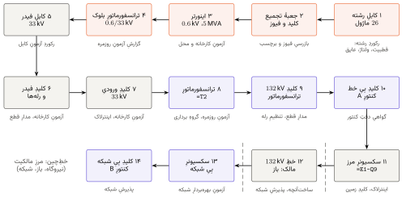
مثال 23.30 (چهارده گام، بیستوسه رابط) پرسش. مسیرِ بلوکِ PVF1-1 را از رشته تا شبکه بنویسید: هر گام، هر رابط و سندی که آن را میبندد.
پاسخ. ۱۴ گام: کابلِ رشته (سندِ رشته: قطبیت، ولتاژِ مدارِ باز، عایق)، کلیدِ جعبهٔ تجمیع، اینورتر (آزمونِ کارخانه و آزمونهای محل)، ترانسفورماتورِ بلوک (گزارشِ آزمونِ روزمره، نسبت و گروهِ برداری در محل)، کابلِ فیدر، کلیدِ فیدر (آزمونِ کارخانه، مدارهای قطع، تنظیمِ رله)، کلیدِ ورودی، ترانسفورماتورِ T2، کلیدِ 132 kV آن، کلیدِ بِیِ خط، سکسیونرِ مرز، خط، سکسیونر و کلیدِ بِیِ شبکه. ۲۳ رابط: ۳ تغییرِ ولتاژ، ۲ تغییرِ مالکیت، ۵ ناحیهٔ حفاظتِ تازه، ۷ نقطهٔ جداسازی، ۲ گزینهٔ کنتور و ۴ مرزِ آزمون.
تفسیر. سندها با هدف و شاهد نام برده شدهاند، نه با روش؛ چگونگیِ آزمونها و کار با تجهیزِ برقدار کارِ فصلهای راهاندازی (۴۸ تا ۵۰) و کارکنانِ صلاحیتدار است. این ردیابی بعدها همان «زنجیرهٔ شاهد» است که بهرهبردار و وامدهنده میخواهند. وارسی: شمارِ گامها با طولِ مسیرِ برنامه یکی است.
23.5.3 فهرستِ موردهای باز و فهرستِ مدارها
equipment schedule: unresolved data (first 12 of 68 entries):
tag kind parameter status
=E1-Q1 breaker ka provisional
=E1-W1 line owner open
=E1-W1 line mva provisional
=T1 transformer z_pu provisional
=T1 transformer vector provisional
=T1 transformer tap open
=T1-Q2 breaker a provisional
=A1-T1 transformer kva provisional
=T2 transformer z_pu provisional
=T2 transformer vector provisional
=T2 transformer tap open
=T2-Q2 breaker a provisional
by kind: breaker 4, cable 26, dc switch 1, inverter 1, line 2, transformer
34
each entry names who closes it: the maker's offer, a study
(fault level, load flow) or the utility's connection offerroute and circuit schedule (lengths provisional, km):
circuit type sections km
BESS-A cable 2 1.20
BESS-B cable 2 1.20
E1 line 1 7.06
PVF1 cable 4 2.40
PVF2 cable 3 1.80
PVF3 cable 3 1.80
WS1 cable 4 4.40
WS2 cable 4 4.40
WS3 cable 4 4.40
33 kV cable 21.6 km; 132 kV line 7.06 km
the cable lengths come from the layout of ch 14 and stay
provisional until the route survey; the schedule feeds the
cable sizing and losses of ch 24مثال 23.31 (بیستویک کیلومتر کابل) پرسش. طولِ کابلِ 33 kV و خط را از فهرستِ مدارها بنویسید. موردهای باز بیشتر از چه نوعیاند؟
پاسخ. کابلِ 33 kV 21.6 km (سه رشتهٔ بادی هر کدام 4.4 km، فیدرهای خورشیدی و باتری) و خطِ 132 kV 7.06 km. بیشترِ موردهای باز طولِ کابلها (۲۶) و امپدانسِ ترانسفورماتورها (۳۰)اند.
تفسیر. طولِ کابل از جانماییِ فصلِ ۱۴ میآید و تا نقشهبرداریِ مسیر موقت است؛ فهرستِ مدارها ورودیِ اندازهگذاری و تلفِ کابل در فصلِ ۲۴ است. وارسی: \(3 \times 4.4 = 13.2\) نزدیکِ 13.26 km فصلِ ۱۸.
- چرا هیچ خریدی با مقدارِ باز بسته نمیشود؟
- ردیابیِ یک توربین را از ژنراتور تا شبکه بنویسید.
- برای سه رابطِ مسیر، سندِ راستیآزمایی را با هدفش بنویسید.
- فهرستِ مدارها ورودیِ کدام فصل است؟
23.5.4 سه خروجیِ کامل از مدل: فهرست، ردیابیِ باتری، فهرستِ سندها
ایده. آزمایشگاهِ این بخش خلاصهها را ساخت؛ اینجا سه خروجی را کامل چاپ میکنیم، همانطور که در پرونده میروند. هر سه از یک مدل میآیند؛ پس اگر نمودار عوض شود، با یک اجرا دوباره ساخته میشوند.
فهرستِ کلیدها، خط و کابلها. هر ردیف برچسب، نوع، دو سر، رتبه و موردهای باز (با ستاره) را دارد:
def full_schedule() -> None:
g = src.plant()
kinds = ("breaker", "disconnector", "line", "cable")
rows = [b for b in g.branches if b.kind in kinds]
lines = ["switchgear, line and cable schedule (open items flagged *):",
" tag kind from -> to rating"
" open"]
n_open = 0
for b in rows:
op = b.open_items()
n_open += bool(op) or b.owner.startswith("open")
flag = ", ".join(op) if op else ""
if b.owner.startswith("open") and "owner" not in op:
flag = (flag + ", owner").lstrip(", ")
ends = b.a + " -> " + b.b
mark = ("*" + flag) if flag else ""
lines.append(f" {b.tag:12s} {b.kind:12s} {ends:21s}"
f" {rating_text(b.rating):15s} {mark}")
lines += [f" {len(rows)} rows; {n_open} with open items -"
" each open item names",
" the chapter or the party that will close it (ch 24: cable",
" lengths and sections; ch 25-26: ratings and fault duties;",
" U-065: the line's owner)"]
emit("s_schedule", lines)switchgear, line and cable schedule (open items flagged *):
tag kind from -> to rating open
=E1-Q1 breaker HV -> E1 31.5 kA 145 kV *ka
=E1-Q9 disconnector E1 -> LINE-P
=E1-W1 line LINE-P -> LINE-G 7.06 km 140 MVA *owner, mva
=G1-Q9 disconnector LINE-G -> GRID-BAY
=G1-Q1 breaker GRID-BAY -> GRID
=T1-Q1 breaker HV -> T1-HV 145 kV
=T1-Q2 breaker T1-MV -> MV-A 1250 A 25 kA *a
=A1-Q1 breaker MV-A -> A1-MV 630 A 25 kA
=T2-Q1 breaker HV -> T2-HV 145 kV
=T2-Q2 breaker T2-MV -> MV-B 1250 A 25 kA *a
=A2-Q1 breaker MV-B -> A2-MV 630 A 25 kA
=MV-Q0 breaker MV-A -> MV-B 2500 A 25 kA *ka
=WS1-Q1 breaker MV-A -> WS1-0 630 A 25 kA
=WS1-W1 cable WS1-0 -> WS1-1 1.1 km 240 mm2 *km
=WS1-W2 cable WS1-1 -> WS1-2 1.1 km 240 mm2 *km
=WS1-W3 cable WS1-2 -> WS1-3 1.1 km 240 mm2 *km
=WS1-W4 cable WS1-3 -> WS1-4 1.1 km 240 mm2 *km
=WS2-Q1 breaker MV-A -> WS2-0 630 A 25 kA
=WS2-W1 cable WS2-0 -> WS2-1 1.1 km 240 mm2 *km
=WS2-W2 cable WS2-1 -> WS2-2 1.1 km 240 mm2 *km
=WS2-W3 cable WS2-2 -> WS2-3 1.1 km 240 mm2 *km
=WS2-W4 cable WS2-3 -> WS2-4 1.1 km 240 mm2 *km
=PVF3-Q1 breaker MV-A -> PVF3-0 630 A 25 kA
=PVF3-W1 cable PVF3-0 -> PVF3-1 0.6 km 240 mm2 *km
=PVF3-W2 cable PVF3-1 -> PVF3-2 0.6 km 240 mm2 *km
=PVF3-W3 cable PVF3-2 -> PVF3-3 0.6 km 240 mm2 *km
=BESS-A-Q1 breaker MV-A -> BESS-A-0 630 A 25 kA
=BESS-A-W1 cable BESS-A-0 -> BESS-A-1 0.6 km 240 mm2 *km
=BESS-A-W2 cable BESS-A-1 -> BESS-A-2 0.6 km 240 mm2 *km
=WS3-Q1 breaker MV-B -> WS3-0 630 A 25 kA
=WS3-W1 cable WS3-0 -> WS3-1 1.1 km 240 mm2 *km
=WS3-W2 cable WS3-1 -> WS3-2 1.1 km 240 mm2 *km
=WS3-W3 cable WS3-2 -> WS3-3 1.1 km 240 mm2 *km
=WS3-W4 cable WS3-3 -> WS3-4 1.1 km 240 mm2 *km
=PVF1-Q1 breaker MV-B -> PVF1-0 630 A 25 kA
=PVF1-W1 cable PVF1-0 -> PVF1-1 0.6 km 240 mm2 *km
=PVF1-W2 cable PVF1-1 -> PVF1-2 0.6 km 240 mm2 *km
=PVF1-W3 cable PVF1-2 -> PVF1-3 0.6 km 240 mm2 *km
=PVF1-W4 cable PVF1-3 -> PVF1-4 0.6 km 240 mm2 *km
=PVF2-Q1 breaker MV-B -> PVF2-0 630 A 25 kA
=PVF2-W1 cable PVF2-0 -> PVF2-1 0.6 km 240 mm2 *km
=PVF2-W2 cable PVF2-1 -> PVF2-2 0.6 km 240 mm2 *km
=PVF2-W3 cable PVF2-2 -> PVF2-3 0.6 km 240 mm2 *km
=BESS-B-Q1 breaker MV-B -> BESS-B-0 630 A 25 kA
=BESS-B-W1 cable BESS-B-0 -> BESS-B-1 0.6 km 240 mm2 *km
=BESS-B-W2 cable BESS-B-1 -> BESS-B-2 0.6 km 240 mm2 *km
46 rows; 31 with open items - each open item names
the chapter or the party that will close it (ch 24: cable
lengths and sections; ch 25-26: ratings and fault duties;
U-065: the line's owner)مثال 23.32 (سی و یک ردیفِ باز از چهل و شش) پرسش. فهرست چند ردیف دارد، چند ردیف موردِ باز دارد و هر موردِ باز را چه کسی میبندد؟
پاسخ. ۴۶ ردیف (۱۷ کلید، ۲ سکسیونر، ۱ خط، ۲۶ کابل)؛ ۳۱ ردیف باز. طولِ کابلها و مقطعها با فصلِ ۲۴، رتبهها و توانِ خطا با فصلهای ۲۵ و ۲۶، و مالکِ خط با پیشنهادِ اتصال (U-065).
تفسیر. فهرستی که موردهای بازش را نشان میدهد سندِ درستی برای این مرحله است؛ فهرستی که همه را «قطعی» بنویسد دروغ میگوید. در فصلِ ۲۶ همین فهرست یک یافته میگیرد: رتبهٔ 1,250 A ورودیها (موقت، با ستاره) به 1,600 A میرود. وارسی: شمارشها با مثال 23.23 یکیاند.
ردیابیِ باتری. مسیرِ توربین در بخش 23.8.1 و مسیرِ رشتهٔ خورشیدی در بخش 23.5.2 آمد؛ اینجا سومین منبع:
battery block BESS-B-2 traced to the grid (interfaces on the way):
=BESS-B-2-T1: voltage 0.69 -> 33 kV
=BESS-B-W2: protection zone Z-BESS-B
=BESS-B-Q1: isolation point
=T2-Q2: protection zone Z-T2
=T2-Q2: isolation point
=T2: voltage 33 -> 132 kV
=T2-Q1: isolation point
=E1-Q1: protection zone Z-L1
=E1-Q1: revenue (option A) meter
=E1-Q9: owner plant -> open (U-065)
=E1-Q9: isolation point
=E1-Q9: test boundary (plant and utility)
=G1-Q9: owner open (U-065) -> utility
=G1-Q9: protection zone Z-GRID
=G1-Q9: isolation point
=G1-Q9: test boundary (utility)
=G1-Q1: revenue (option B) meter
the battery crosses the same boundaries as a turbine, plus
one the turbine does not have: it also imports from the
grid - every meter on the path counts in both directions
and the protection must see faults fed from either sideمثال 23.33 (مسیری که در دو جهت کار میکند) پرسش. بلوکِ باتریِ BESS-B-2 تا شبکه از چه مرزهایی میگذرد و چه چیزی با توربین فرق دارد؟
پاسخ. همان زنجیره: دو تغییرِ ولتاژ (0.69 به 33 و 33 به 132 kV)، چهار ناحیهٔ حفاظت، پنج نقطهٔ جداسازی، دو گزینهٔ کنتور، دو تغییرِ مالکیت و دو مرزِ آزمون؛ ولی باتری از شبکه میگیرد هم.
تفسیر. هر کنتور در مسیر باید دوجهته بشمارد، و حفاظت باید خطایی را که از هر دو سو تغذیه میشود ببیند. شمارشِ انرژیِ ورودی و خروجیِ باتری (فصلِ ۱۹) به همین کنتورها بسته است. وارسی: خروجیِ برنامه، نه شمارشِ دستی.
فهرستِ سندها. هر نقشه و فهرست فقط وقتی برای پروژه «وجود دارد» که در فهرستِ سندها ثبت شده باشد:
electrical documents of the design stage (register extract):
number title status
PLP-ELE-DWG-0001 inverter skid block diagram (ch 9) concept
PLP-ELE-DWG-0002 PV block layout (ch 10) concept
PLP-ELE-DWG-0003 export route options and corridor (ch 14) concept
PLP-ELE-DWG-0004 architecture diagrams (ch 18) concept
PLP-ELE-DWG-0005 one-line diagram, plant IFR
PLP-ELE-DWG-0006 one-line diagram, 33 kV sections IFR
PLP-ELE-DWG-0007 station-service and DC one-line IFR
PLP-ELE-DWG-0008 export bay arrangement (ch 25) IFR
PLP-ELE-LST-0004 equipment schedule IFR
PLP-ELE-LST-0005 auxiliary load register IFR
PLP-ELE-LST-0006 interface register IFR
PLP-ELE-CAL-0008 auxiliary sizing and DC autonomy IFR
PLP-ELE-REP-0007 plant-to-grid boundary report IFR
PLP-ELE-REG-0001 open items of the one-line live
14 entries; at this design stage nothing is IFC yet - the
32-entry register of lesson C is a later stage; an entry is
the only way a drawing exists for the project: it gives the
number, the revision, the status and who holds the latest
copy; the open-items register stays 'live' until the last
item is closed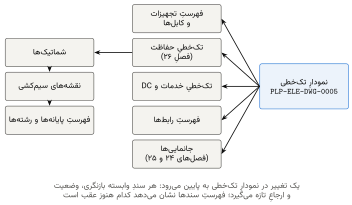
مثال 23.34 (یک تغییر، چند بازنگری) پرسش. اگر رتبهٔ ورودیِ =T1-Q2 از 1,250 به 1,600 A برود (یافتهٔ فصلِ ۲۶)، کدام سندهای شکل 23.8 باید بازنگری شوند؟
پاسخ. نمودارِ تکخطی (DWG-0005 و 0006)، فهرستِ تجهیزات (LST-0004)، تکخطیِ حفاظت و تنظیمها (CTِ 1600/1)، شماتیکها و سیمکشیِ پانلِ ورودی، فهرستِ کابلها (شمارِ کابلهای ورودی)، و جانماییِ تابلو اگر پانل پهنتر شود.
تفسیر. درختِ سندها نشان میدهد یک تغییرِ کوچک در بالا چند سند را در پایین جابهجا میکند؛ فهرستِ سندها با بازنگری و وضعیت نشان میدهد کدام هنوز عقب است. در این مرحلهٔ طراحی هیچ سندی «برای ساخت» نیست؛ فهرستِ ۳۲ردیفیِ بخش 23.4.3 مرحلهای دیرتر است. وارسی: هر سندِ نامبرده در شکل 23.8 هست.
- فهرستِ تجهیزات همهٔ ردیفها را «قطعی» نشان میدهد در حالی که دادهها موقتاند.
- کنتورهای مسیرِ باتری یکجهته انتخاب شدهاند.
- تغییرِ یک رتبه در نمودار به سندهای پاییندست نرسیده است.
- چرا فهرستی که موردهای بازش را نشان میدهد بهتر از فهرستِ «کامل» است؟
- چند ردیفِ فهرست کابل است و موردِ بازِ آنها چیست؟
- باتری چه مرزی دارد که توربین ندارد؟
- چرا کنتورهای مسیرِ باتری باید دوجهته باشند؟
- چه چیزی یک نقشه را برای پروژه «موجود» میکند؟
- یک تغییرِ رتبه در نمودار کدام سندهای پاییندست را جابهجا میکند؟
23.6 ث. خدماتِ کمکی و مشترک
23.6.1 مرزِ خدماتِ کمکی و ردهٔ بارها
ایده. نیروگاه فقط تولید نمیکند، مصرف هم دارد: حفاظت، کنترل، ارتباطات، سرمایش، روشنایی، پمپها، تعمیرگاه. این بارها خدماتِ کمکی و مشترک (به انگلیسی auxiliary and common services)اند. نخستین تصمیم مرز است: کدام بارها از ترانسفورماتورهای خدماتِ ایستگاه تغذیه میشوند و کدام از بستههای خودشان. در نیروگاهِ P:
- خدماتِ ایستگاه: پست، ساختمانِ کنترل، DC و UPS، آب، روشنایی، تعمیرگاه.
- درونِ بستهها: توربینها و اینورترها کمکیِ خود را از ترانسفورماتورِ خودشان میگیرند؛ کانتینرهای باتری ترانسفورماتورِ کمکیِ خود را در بستهٔ سازنده دارند (رابطِ IF-006، فصلِ ۱۹).
هر بار در دو بُعد ردهبندی میشود: نوعِ کار (پیوسته، متناوب، فقط در راهاندازی یا خاموشی) و اهمیت (ضروری یا غیرضروری)؛ و در چهار حالتِ بهرهبرداری ضریبِ کار دارد: عادی، کاهشیافته (یک تغذیه خارج)، اضطراری (بی شبکه) و نگهداری.
@dataclass
class Load:
tag: str
kw: float # input power at full duty
pf: float = 0.9
kind: str = "continuous" # continuous, intermittent, startup
essential: bool = False
duty: dict = field(default_factory=dict) # state -> duty factor 0..1
priority: int = 9 # 1 = shed last
motor_start_kva: float = 0.0 # starting kVA of a direct-on-line motor
def kw_in(self, state: str) -> float:
return self.kw * self.duty.get(state, 0.0)
def demand(loads, state: str, diversity: float = 1.0):
"""(kW, kvar, kVA) of a register in one operating state; the
diversity factor (<= 1) applies to the sum of the loads."""
p = sum(ld.kw_in(state) for ld in loads)
q = sum(ld.kw_in(state) * math.tan(math.acos(ld.pf)) for ld in loads)
p, q = p * diversity, q * diversity
return p, q, math.hypot(p, q)def L(tag, kw, pf, kind, ess, duty, prio, start=0.0):
names = ("normal", "degraded", "emergency", "maintenance")
return ax.Load(tag, kw, pf, kind, ess, dict(zip(names, duty)), prio, start)
CONT, INT = "continuous", "intermittent"
AUX = [ # station-service loads (A-317)
# tag, kW, pf, kind, essential, duty (norm, degr, emer, maint),
# priority, starting kVA
L("DC chargers 110 V", 12, .90, CONT, True, (1, 1, 1, 1), 1),
L("UPS: SCADA, PPC, telecom", 25, .95, CONT, True, (1, 1, 1, 1), 1),
L("control room HVAC", 30, .85, INT, True, (.7, .7, .7, .5), 2, 120),
L("switchgear room ventilation", 20, .85, INT, True,
(.6, .6, .6, .4), 2, 80),
L("on-load tap changer motors", 3, .80, INT, True, (.1, .1, .1, 0), 2),
L("transformer cooling fans", 16, .85, INT, True, (.5, .5, 0, 0), 3, 40),
L("substation lighting and security", 15, .95, CONT, True,
(.5, .5, .5, 1), 3),
L("drainage and sump pumps", 8, .85, INT, True, (.2, .2, .3, .2), 3, 40),
L("water pumping and treatment", 40, .85, INT, False,
(.4, .4, 0, .2), 6, 200),
L("cleaning robots charging", 60, .95, INT, False, (.5, .5, 0, 0), 7),
L("workshop and stores", 35, .90, INT, False, (.5, .5, 0, 1), 8),
L("maintenance socket outlets", 30, .90, INT, False, (.1, .1, 0, 1), 8),
L("staff facilities", 25, .95, INT, False, (.6, .6, 0, .6), 9),
]
DIVERSITY = 0.9station-service load register (kW at full duty; duty by state):
load kW class ess norm degr emer mnt
DC chargers 110 V 12 conti yes 1.0 1.0 1.0 1.0
UPS: SCADA, PPC, telecom 25 conti yes 1.0 1.0 1.0 1.0
control room HVAC 30 inter yes 0.7 0.7 0.7 0.5
switchgear room ventilation 20 inter yes 0.6 0.6 0.6 0.4
on-load tap changer motors 3 inter yes 0.1 0.1 0.1 0.0
transformer cooling fans 16 inter yes 0.5 0.5 0.0 0.0
substation lighting and security 15 conti yes 0.5 0.5 0.5 1.0
drainage and sump pumps 8 inter yes 0.2 0.2 0.3 0.2
water pumping and treatment 40 inter no 0.4 0.4 0.0 0.2
cleaning robots charging 60 inter no 0.5 0.5 0.0 0.0
workshop and stores 35 inter no 0.5 0.5 0.0 1.0
maintenance socket outlets 30 inter no 0.1 0.1 0.0 1.0
staff facilities 25 inter no 0.6 0.6 0.0 0.6
demand by state (diversity 0.9):
normal 152.0 kW 70.0 kvar 167.3 kVA pf 0.91
degraded 152.0 kW 70.0 kvar 167.3 kVA pf 0.91
emergency 72.2 kW 34.8 kvar 80.1 kVA pf 0.90
maintenance 148.1 kW 68.0 kvar 163.0 kVA pf 0.91
normal and degraded are equal: degraded means one supply
out, the same loads on the other; emergency keeps only the
essential loads; maintenance trades fans for tools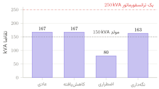
مثال 23.35 (صد و شصتوهفت کیلوولتآمپر) پرسش. تقاضای خدماتِ ایستگاه در چهار حالت چیست؟ چرا حالتِ عادی و کاهشیافته برابرند؟
پاسخ. عادی و کاهشیافته 152 kW و 167 kVA (ضریبِ توانِ 0.91)؛ اضطراری 72 kW و 80 kVA؛ نگهداری 148 kW و 163 kVA.
تفسیر. «کاهشیافته» یعنی یک تغذیه خارج است، نه اینکه بار کم شده: همان بارها روی تغذیهٔ دیگر. پس هر ترانسفورماتورِ خدمات باید کلِ بار را ببرد (N-1). در اضطرار فقط بارهای ضروری میمانند؛ در نگهداری فنها خاموش و ابزارها روشناند. ضریبِ همزمانیِ 0.9 و ضریبهای کار آموزشیاند (A-317). وارسی: \(\sqrt{152^2 + 70^2} = 167\).
normal-state kW by class:
continuous essential 44.5
intermittent essential 42.9
intermittent non-essential 81.5
continuous essential loads (DC chargers, UPS) are small
but must never stop; the intermittent motors set the
starting duty; the non-essential loads are what a standby
supply may leave offمثال 23.36 (کوچک ولی بیتوقف) پرسش. بارهای پیوستهٔ ضروری چقدرند و چرا اهمیتشان با اندازهشان نمیخواند؟
پاسخ. 44.5 kW (شارژرهای DC و UPS و روشنایی)، کمتر از یک سومِ بار؛ اما اگر بایستند، حفاظت، کنترل و ارتباطات میایستند.
تفسیر. اندازه، ترانسفورماتور را تعیین میکند؛ اهمیت، معماری را: بارهای پیوستهٔ ضروری پشتِ UPS و DC با باتری مینشینند و هرگز قطع نمیشوند. وارسی: جمعِ سه رده 169 kW پیش از همزمانی؛ با \(0.9\) همان 152 kW.
- مرزِ خدماتِ ایستگاه در نیروگاهِ P کجاست؟
- دو بُعدِ ردهبندیِ بار و چهار حالتِ بهرهبرداری را بنویسید.
- چرا حالتِ کاهشیافته همان تقاضای عادی را دارد؟
- چرا بارِ کوچکِ ضروری معماری را تعیین میکند؟
23.6.2 معماریِ AC و DC کمکی و تغذیههای جایگزین
ایده. معماریِ کمکیِ نیروگاهِ P (شکل 23.10) سه لایه دارد: (۱) AC عادی: دو ترانسفورماتورِ 33/0.4 kV یکی از هر بخشِ شینه، تابلوی LV دو نیمه با کوپلر؛ (۲) AC اضطراری: مولدِ آمادهبهکار با کلیدِ انتقالِ خودکار (ATS) روی نیمهٔ ضروری؛ (۳) DC و UPS: باتریِ ایستگاه 110 V با دو شارژر برای حفاظت و کلیدزنی، و UPS برای SCADA، کنترلگرِ نیروگاه و ارتباطات.

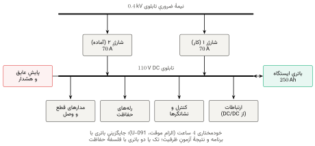
| لایه | تجهیز | از چه چیزی میگذرد | پایش و جداسازی |
|---|---|---|---|
| AC عادی | دو ترانسفورماتور، تابلوی دو نیمه | خروجِ یک ترانسفورماتور | کوپلرِ LV، اینترلاک |
| AC اضطراری | مولد، ATS، نیمهٔ ضروری | قطعِ شبکه | آزمونِ دورهای، سوخت، هشدار |
| DC | باتری، دو شارژر، تابلوی DC | قطعِ همهٔ AC | پایشِ عایق، ولتاژ، هشدارِ شارژر |
| UPS | یکسوساز، باتری، اینورتر، کنارگذر | قطعِ AC تا روشنشدنِ مولد | هشدار، آزمونِ باتری |
فلسفهٔ قطعبار. وقتی تغذیه کم است، بارها به ترتیبِ اولویت نگه داشته میشوند، نه به ترتیبِ اندازه:
def shed(loads, state: str, available_kva: float, diversity: float = 1.0):
"""Keep loads in order of priority (1 first) while the demand fits
the available supply; returns (kept tags, shed tags, kVA kept)."""
kept, cut = [], []
for ld in sorted(loads, key=lambda x: (x.priority, x.tag)):
if ld.kw_in(state) == 0:
continue
trial = kept + [ld]
if demand(trial, state, diversity)[2] <= available_kva:
kept = trial
else:
cut.append(ld)
kva = demand(kept, state, diversity)[2]
return [x.tag for x in kept], [x.tag for x in cut], kvaload-shed matrix: what each supply can keep (kVA available):
one transformer (250 kVA): keeps 13 loads (167 kVA), sheds 0
generator 150 kVA: keeps 7 loads (80 kVA), sheds 0
generator derated 50 %: keeps 6 loads (73 kVA), sheds 1
shed: substation lighting and security
priorities, not sizes, decide what stays: the UPS and the
DC chargers are priority 1 and stay in every caseمثال 23.37 (اولویت، نه اندازه) پرسش. با یک ترانسفورماتورِ 250 kVA، با مولدِ 150 kVA و با مولدی که نیمی از توانش را دارد، چه بارهایی میمانند؟
پاسخ. ترانسفورماتور: هر ۱۳ بار (167 kVA). مولد: ۷ بارِ ضروری که در اضطرار کار دارند (80 kVA). مولدِ نیمتوان: ۶ بار؛ روشنایی و امنیتِ پست قطع میشود.
تفسیر. ماتریسِ قطعبار برای هر تغذیه میگوید چه میماند. شارژرهای DC و UPS اولویتِ ۱ دارند و در همه حالت میمانند. اگر قطعِ روشنایی و امنیت در شب پذیرفتنی نیست، اولویتش باید بالا برود یا مولد بزرگتر شود: این تصمیمِ مالک است که در ماتریس ثبت میشود. وارسی: \(80 - 6.75 \approx 73\).
خدماتِ مشترک و رابطهایشان. گرمایش، سرمایش و تهویهٔ اتاقها، روشنایی، پریزها، زهکشی و پمپها، آب، و رابط با سامانههای آشکارسازی و اطفای حریق و مدیریتِ دمای باتری. بارِ گرماییِ اتاقها:
heat loads of the rooms at 45 C outside, 25 C inside:
room losses walls solar cooling electric
control room 12.0 8.0 3.0 23.0 7.7
switchgear room 18.0 12.0 2.0 32.0 10.7
battery and charger room 2.0 6.0 1.0 9.0 3.0
the control room's 30 kW in the register is the rated input
of two units (one standby) for 25 kW of cooling; the battery
room is ventilated for its own reasons (gases, the maker's
data), not only for heatlighting and drainage loads from first principles (teaching):
lighting: yard 5,000 m2 x 2 W/m2 + buildings 400 m2 x 10 W/m2 = 14.0 kW
drainage: 600 m2 of trenches and pits x 30 mm/h = 5.0 L/s
pump power at 10 m head, efficiency 0.5: 0.98 kW per sump
four sumps, duty and standby pumps: 8 kW installed
the register's 15 kW of lighting and 8 kW of sump pumps
agree; the storm intensity and the head come from the civil
design (ch 29), the light levels from the lighting designمثال 23.38 (گرمایی که باید برود) پرسش. بارِ سرمایشِ اتاقِ کنترل در 45 °C بیرون چیست و توانِ برقیِ آن با ضریبِ عملکردِ ۳؟ روشنایی و پمپهای زهکشی از اصول چقدر میشوند؟
پاسخ. اتاقِ کنترل 23 kW سرمایش و 7.7 kW برق؛ روشنایی 14 kW؛ زهکشی 5 L/s و حدودِ 1 kW برای هر چاهک، 8 kW نصبشده با پمپِ کار و آمادهبهکار.
تفسیر. عددهای فهرستِ بار (30 kW سرمایش، 15 kW روشنایی، 8 kW پمپ) با اصول میخوانند. اتاقِ باتریِ ایستگاه برای گازها و دادهٔ سازنده تهویه میشود، نه فقط برای گرما. رابط با آشکارسازی و اطفای حریق فقط ثبت میشود (سیگنالها، تغذیه، قطعِ تهویه)؛ طراحیِ آن با مهندسِ حریق و مقام است (فصلِ ۳۱). وارسی: \(12 + 0.4 \times 20 + 3 = 23\).
- سه لایهٔ معماریِ کمکی را با تجهیزاتشان بنویسید.
- ماتریسِ قطعبار چه میگوید و چه کسی اولویت را تعیین میکند؟
- بارِ سرمایشِ اتاقی با تلفِ 10 kW، UA برابرِ 0.3 kW/K، 40/24 °C و 2 kW تابش را حساب کنید.
- رابطِ سامانهٔ حریق در این فصل چه چیزهایی را ثبت میکند و چه چیزهایی را نه؟
23.6.3 فلسفهٔ بهرهبرداری و ماتریسِ علت و معلول
ایده. فلسفهٔ بهرهبرداریِ خدماتِ کمکی میگوید در هر رخداد چه باید رخ دهد: کدام کلید باز شود، کدام منبع روشن شود، کدام بار قطع شود و چه هشداری برود. ماتریسِ علت و معلول (به انگلیسی cause-and-effect matrix) همین را بهشکلِ جدول مینویسد: سطرها رخدادها، ستونها کنشها.
EVENTS = { # event -> actions (cause-and-effect, A-318)
"loss of grid supply": ["UPS and DC carry", "start generator",
"shed non-essential", "alarm"],
"station transformer A trips": ["transfer to B", "alarm"],
"both station supplies lost": ["start generator",
"shed non-essential", "alarm"],
"DC charger fault": ["standby charger on", "alarm"],
"fire alarm in a battery container": [
"stop that battery block", "alarm",
"actions of the fire design (ch 31)"],
"33 kV bus A fault": ["trip feeders and incomer A", "alarm"],
"PPC comms lost": ["PPC fallback (ch 20)", "alarm"],
"high room temperature": ["standby HVAC on", "alarm"],
}cause-and-effect matrix (events x actions; x = initiates):
8 events, 11 actions
loss of grid supply:
UPS and DC carry; start generator; shed non-essential; alarm
station transformer A trips:
transfer to B; alarm
both station supplies lost:
start generator; shed non-essential; alarm
DC charger fault:
standby charger on; alarm
fire alarm in a battery container:
stop that battery block; alarm; actions of the fire design (ch 31)
33 kV bus A fault:
trip feeders and incomer A; alarm
PPC comms lost:
PPC fallback (ch 20); alarm
high room temperature:
standby HVAC on; alarm
events without an alarm: none
checks: every event has an action and an alarm; every
action has an event that starts it; the fire actions are
only a pointer - the fire design and the authority set
them (ch 31), the matrix records the interfaceمثال 23.39 (هر رخداد یک هشدار) پرسش. ماتریس چند رخداد و چند کنش دارد؟ سه وارسیِ کاملبودن را بنویسید و نتیجه را بگویید.
پاسخ. ۸ رخداد و ۱۱ کنش. وارسیها: هر رخداد دستکم یک کنش دارد؛ هر رخداد هشدار دارد؛ هر کنش رخدادی دارد که آن را آغاز میکند. هر سه برقرارند.
تفسیر. ماتریس سندِ مشترکِ طراحِ برق، طراحِ کنترل و بهرهبردار است و پایهٔ آزمونهای راهاندازی: هر سطر یک آزمون است. کنشهای حریق فقط اشاره به طراحیِ حریق دارند: ماتریس رابط را ثبت میکند، طراحی را نه (فصلِ ۳۱). وارسی: شمارِ کنشهای یکتا در دیکشنری ۱۱ است.
| حالت | تغذیه | آنچه کار میکند | آنچه قطع است |
|---|---|---|---|
| عادی | دو ترانسفورماتور، کوپلر باز | همهٔ بارها | هیچ |
| کاهشیافته | یک ترانسفورماتور، کوپلر بسته | همهٔ بارها | هیچ (با بارِ کامل روی یکی) |
| اضطراری | مولد روی نیمهٔ ضروری | بارهای ضروری | آب، رباتها، تعمیرگاه، رفاهی |
| نگهداری | یک یا دو ترانسفورماتور | ابزار، روشنایی، پریز | فنها، رباتها |
- ماتریسِ علت و معلول را تعریف کنید.
- سه وارسیِ کاملبودنِ ماتریس را بنویسید.
- چرا هر سطرِ ماتریس یک آزمونِ راهاندازی است؟
- در حالتِ کاهشیافته کوپلرِ LV در چه وضعی است؟
23.6.4 توزیعِ LV، مرزِ کمکیِ باتری و پنجرهٔ ولتاژِ DC
مرزِ کمکیِ باتری. یک تصمیمِ مرزی میتواند اندازهٔ همهچیز را عوض کند:
where the battery's auxiliaries are supplied from (a boundary):
station service alone: 167 kVA -> 250 kVA transformers
battery HVAC peak: 8 containers x 120 kW cooling / COP 3 = 320 kW
if the station service fed it too: 477 kVA -> 630 kVA transformers
Plant P keeps the battery's auxiliaries in the maker's
package (IF-006): the maker sizes them against its own
thermal design, and the station service stays small; the
boundary is a design decision recorded on the one-lineمثال 23.40 (مرزی که ترانسفورماتور را دو برابر میکند) پرسش. اگر سرمایشِ کانتینرهای باتری از خدماتِ ایستگاه تغذیه شود، ترانسفورماتورهای خدمات چه اندازهای میشوند؟
پاسخ. بارِ سرمایش حدودِ 320 kW (۸ کانتینر، 120 kW سرمایش، ضریبِ عملکردِ ۳)؛ تقاضا 477 kVA و ترانسفورماتورهای 630 kVA بهجای 250 kVA.
تفسیر. نیروگاهِ P کمکیِ باتری را در بستهٔ سازنده نگه میدارد (IF-006): سازنده آن را با طراحیِ گرماییِ خودش اندازه میکند و تغذیهٔ آن با خودِ بلوکِ باتری در دسترس است. این تصمیمِ مرزی روی نقشه ثبت میشود (U-092). وارسی: \(8 \times 120/3 = 320\).
تابلوی LV، کلیدها و گزینشپذیری. هر فیدرِ تابلو از جریانِ کاملکارِ بارش اندازه میشود (با 1.25 برابر) و نسبتِ کلیدِ ورودی به کلیدِ فیدر نخستین غربالِ گزینشپذیری (به انگلیسی selectivity) است: خطا در یک فیدر فقط کلیدِ همان فیدر را باز کند، نه ورودی را.
LV distribution: feeder breakers from full-duty currents:
feeder I A breaker A ratio to 400 A
DC chargers 110 V 19.2 25 16.0
UPS: SCADA, PPC, telecom 38.0 50 8.0
control room HVAC 50.9 80 5.0
switchgear room ventilation 34.0 50 8.0
on-load tap changer motors 5.4 16 25.0
transformer cooling fans 27.2 40 10.0
substation lighting and security 22.8 32 12.5
drainage and sump pumps 13.6 20 20.0
water pumping and treatment 67.9 100 4.0
cleaning robots charging 91.2 125 3.2
workshop and stores 56.1 80 5.0
maintenance socket outlets 48.1 63 6.3
staff facilities 38.0 50 8.0
incomer 400 A (250 kVA at 0.4 kV is 361 A)
every ratio is at least 1.6, a first screen for selectivity;
real selectivity comes from the makers' tables and the
coordination study (ch 26); motor feeders go to an MCC
with starters, sub-meters measure each load groupمثال 23.41 (کلید برای هر فیدر) پرسش. کلیدِ فیدرِ سرمایشِ اتاقِ کنترل و شارژِ رباتها چند آمپر است؟ نسبتِ کمترین به کلیدِ ورودی چیست؟
پاسخ. سرمایش 50.9 A و کلیدِ 80 A؛ رباتها 91.2 A و 125 A. کمترین نسبت 3.2 (رباتها)، بیش از غربالِ 1.6.
تفسیر. نسبت فقط غربال است؛ گزینشپذیریِ واقعی از جدولهای سازنده و مطالعهٔ هماهنگی (فصلِ ۲۶) میآید. فیدرهای موتوری از یک مرکزِ کنترلِ موتور (MCC) با راهانداز تغذیه میشوند و کنتورهای فرعی مصرفِ هر گروه را میسنجند تا مصرفِ داخلیِ فصلِ ۱۷ با اندازهگیری وارسی شود. وارسی: \(30{,}000/(\sqrt{3} \times 400 \times 0.85) = 50.9\,\text{A}\).
پنجرهٔ ولتاژِ DC. ولتاژِ باتری با حالتش عوض میشود و هر مصرفکنندهٔ DC باید در همهٔ این بازه کار کند:
voltage window of the 110 V station battery (lead-acid, teaching):
55 cells x 2.0 V nominal = 110 V
float 2.23 V/cell = 122.7 V; equalise 2.33 V/cell = 128.2 V
end of discharge 1.75 V/cell = 96.2 V
window 88% to 116% of 110 V
every device on the DC board must work from the end of
discharge to the equalising voltage (the makers' ranges);
if one cannot, equalising is done with it disconnected or
the window is narrowed - a check, not an assumptionمثال 23.42 (از نود و شش تا صد و بیستوهشت ولت) پرسش. بازهٔ ولتاژِ باتریِ ۵۵ سلولی از پایانِ دشارژ تا شارژِ یکسانسازی چیست؟
پاسخ. 96.2 V تا 128.2 V، یعنی 88 % تا 116 % ولتاژِ اسمی.
تفسیر. اگر رله یا کنترلی تا 116 % را تحمل نکند، یا هنگامِ یکسانسازی جدا میشود یا بازه با تنظیمِ شارژر تنگ میشود. این یک وارسی است، نه فرض؛ ولتاژهای هر سلول از دادهٔ سازنده میآید. وارسی: \(55 \times 1.75 = 96.25\).
- مرزِ کمکیِ باتری چه اثری بر اندازهٔ ترانسفورماتورهای خدمات دارد؟
- گزینشپذیری را تعریف کنید و غربالِ نسبتِ کلیدها را بنویسید.
- کلیدِ فیدرِ 40 kW با ضریبِ توانِ 0.85 در 0.4 kV چند آمپر است؟
- پنجرهٔ ولتاژِ باتریِ DC را برای ۶۰ سلول بنویسید.
23.6.5 توازنِ بارهای تکفاز در تابلوی خدمات
ایده. روشنایی، پریزها و گرمکنها تکفازند (230 V). اگر همه روی یک فاز بروند، آن فاز پر و دو فازِ دیگر خالی میمانند و نول تفاوت را میبرد. با سه جریانِ همفاز با بار و جابهجاییِ ۱۲۰ درجه:
\[ I_\text{N} = \left| I_{L1} + a^2 I_{L2} + a I_{L3} \right|, \qquad a = 1\angle 120^\circ \tag{23.3}\]
def phase_currents(loads: dict) -> tuple:
"""Phase currents (A) and neutral current of single-phase loads (kW at
unity power factor, 230 V) assigned to L1, L2, L3."""
i = {p: sum(kw for kw, ph in loads.values() if ph == p) * 1e3 / 230
for p in ("L1", "L2", "L3")}
a = cmath.rect(1, 2 * math.pi / 3)
n = abs(i["L1"] + i["L2"] * a * a + i["L3"] * a)
return i, nsingle-phase loads on the 400/230 V station board (teaching):
as first drawn: L1 91.3 A L2 39.1 A L3 21.7 A N 62.7 A
unbalance (max - mean)/mean: 80%
lighting B to L3, heaters to L2:
L1 43.5 A L2 60.9 A L3 47.8 A N 15.7 A
unbalance: 20%
the busiest phase sets the cable and breaker; the neutral
carries the difference (and the third harmonics of UPS and
LED drivers, which add instead of cancel - ch 27); the
phase of each circuit is a column of the scheduleمثال 23.43 (از 80 % به 20 %) پرسش. در چیدمانِ نخست، جریانِ فازها، نول و نامتعادلی چیست؟ با بردنِ روشناییِ B به L3 و گرمکنها به L2 چه میشود؟
پاسخ. نخست 91.3، 39.1 و 21.7 A، نول 62.7 A و نامتعادلی 80 %؛ پس از جابهجایی 43.5، 60.9 و 47.8 A، نول 15.7 A و 20 %.
تفسیر. پرترین فاز کابل و کلید را تعیین میکند؛ پس توازن یعنی کابل و کلیدِ کوچکتر و تلفِ کمتر. هارمونیکِ سومِ UPS و درایورهای LED در نول جمع میشود و آن را از این عدد هم بیشتر بار میکند (فصلِ ۲۷). فازِ هر مدار یک ستونِ فهرستِ مدارهاست. وارسی: \((6+6+4+5) \times 1{,}000/230 = 91.3\,\text{A}\).
- جریانِ فازِ 10 kW تکفاز در 230 V چیست؟
- با فازهای 50، 50 و 50 A جریانِ نول چیست؟ با 60، 50، 40 A؟
23.6.6 بارِ موقت در حالتِ نگهداری
ایده. فهرستِ بار چهار حالت دارد (بخش 23.6.1)، ولی نگهداریِ بزرگ بارهایی میآورد که در هیچ حالتی نیستند: دستگاهِ تصفیهٔ روغن برای ترانسفورماتورِ اصلی، جوش، گرمکنِ خشککن. این بارها موقتاند ولی جریانشان واقعی است؛ اگر جایی در فهرست نداشته باشند، روزِ کار ترانسفورماتورِ خدمات را پر میکنند.
maintenance state with a temporary oil-treatment plant (60 kW):
register, maintenance state: 163 kVA
plus the treatment plant: 233 kVA on one 250 kVA transformer
(93% of rating, 99% of the 236 kVA left after harmonics)
the second transformer may be out for its own maintenance
at the same time: then the plan must keep the workshop and
the socket outlets off while the plant runs, or bring a
temporary generator - a line in the maintenance plan (ch 52)
temporary loads enter the register as a state of their own,
with their own supply point and protectionمثال 23.44 (نود و نه درصد) پرسش. حالتِ نگهداری 163 kVA است. با دستگاهِ تصفیهٔ روغنِ 60 kW (ضریبِ توانِ 0.85) روی یک ترانسفورماتورِ 250 kVA، بار چند درصد است؟
پاسخ. حدودِ 233 kVA: 93 % رتبه و 99 % ظرفیتِ پس از هارمونیک (مثال 23.52).
تفسیر. اگر ترانسفورماتورِ دوم همزمان در نگهداری باشد، بار تقریباً لبهٔ ظرفیت است. برنامهٔ نگهداری یکی از اینها را مینویسد: کارگاه و پریزها در مدتِ کارِ دستگاه خاموش، یا مولدِ موقت. بارِ موقت در فهرست یک حالتِ خودش را با نقطهٔ تغذیه و حفاظتش میگیرد (فصلِ ۵۲). وارسی: \(\sqrt{(148.1+60)^2 + (68.0+37.2)^2} = 233\).
- چرا بارِ موقت باید در فهرستِ بار بیاید؟
- با بارِ موقتِ 40 kW و ضریبِ توانِ 0.9، حالتِ نگهداری چند kVA میشود؟
23.7 ج. اندازهگذاری و مطالعهٔ موردی
23.7.1 ترانسفورماتورِ خدمات، مولد، راهاندازیِ موتور و جریانِ خطا
ایده. اندازهگذاریِ مقدماتی از تقاضا آغاز میشود: kW و kvar هر بار با ضریبِ کار و همزمانی جمع و به kVA تبدیل میشود؛ با حاشیه، کوچکترین اندازهٔ استاندارد انتخاب میشود. سپس دو وارسی: افتِ ولتاژ در راهاندازیِ موتور و جریانِ اتصالِ کوتاه در تابلو.
\[ \Delta u \approx \frac{S_\text{start}}{S_\text{sc} + S_\text{start}}, \qquad S_\text{sc} = \frac{S_\text{r}}{z} \tag{23.4}\]
\[ I_\text{k} = \frac{S_\text{r}}{\sqrt{3}\, U\, (z + z_\text{src})} \tag{23.5}\]
def next_size(kva: float, margin: float = 0.2, sizes=STD_KVA) -> int:
"""Smallest standard rating at or above demand x (1 + margin)."""
need = kva * (1 + margin)
for s in sizes:
if s >= need:
return s
raise ValueError(f"{need:.0f} kVA above the largest size")
def sc_current_ka(s_kva: float, u_kv: float, z_pu: float,
s_source_mva: float = math.inf) -> float:
"""Three-phase fault current on the LV side of a transformer of
s_kva and impedance z_pu, with the upstream network as a source of
s_source_mva (both as impedances on the transformer base)."""
z_src = s_kva / 1000 / s_source_mva if math.isfinite(s_source_mva) else 0.0
return s_kva / (math.sqrt(3) * u_kv * (z_pu + z_src)) / 1000
def start_dip(s_start_kva: float, s_kva: float, z_pu: float) -> float:
"""Voltage dip (fraction) at a transformer's LV bus when a motor
takes s_start_kva: the motor as a load on the transformer's
short-circuit capacity s_kva / z_pu."""
s_sc = s_kva / z_pu
return s_start_kva / (s_sc + s_start_kva)station service and standby supply (teaching):
normal demand 167 kVA; with 20 % margin 201 kVA:
two 250 kVA transformers, each for the whole plant (N-1)
emergency demand 80 kVA; with 25 % margin: generator 125 kVA
largest start on a transformer (well pump 200 kVA): dip 3.5%
largest essential start on the generator: control room HVAC,
120 kVA: dip 12.6% on 125 kVA, 10.7% on 150 kVA
with a 12 % dip limit (teaching; the makers' limits apply)
the generator is 150 kVA: starting, not running, sizes it
fault current at the 0.4 kV board: 7.9 kA (LV board rating
chosen above it with the maker; ch 24)
the well pump may start direct on a transformer but not on
the generator: it is non-essential and shed in emergency;
a soft starter would be needed if it were essentialمثال 23.45 (راهاندازی، نه کار، اندازه را تعیین میکند) پرسش. اندازهٔ ترانسفورماتورهای خدمات و مولد را بیابید. افتِ ولتاژِ راهاندازیِ موتورِ سرمایش (120 kVA) روی مولدِ 125 و 150 kVA چیست؟ جریانِ خطا در تابلوی 0.4 kV؟
پاسخ. تقاضای عادی 167 kVA با 20 % حاشیه 201 kVA: دو ترانسفورماتورِ 250 kVA، هر کدام برای کلِ بار. تقاضای اضطراری 80 kVA با 25 %: 125 kVA. افتِ ولتاژ 12.6 % روی 125 و 10.7 % روی 150 kVA؛ با حدِ آموزشیِ 12 % مولد 150 kVA میشود. جریانِ خطا 7.9 kA.
تفسیر. مولد را راهاندازیِ بزرگترین موتورِ ضروری اندازه میکند، نه بارِ کار. پمپِ چاه (200 kVA راهاندازی) روی ترانسفورماتور فقط 3.5 % افت میدهد اما روی مولد 16.7 %؛ چون غیرضروری است و در اضطرار قطع میشود، مسئلهای نیست؛ اگر ضروری بود، راهانداز نرم لازم میشد. حدِ افت را سازندگانِ موتور و مولد تعیین میکنند. وارسی: \(120/(150/0.15 + 120) = 10.7\,\%\).
افتِ ولتاژِ یک فیدرِ LV. پیش از فصلِ ۲۴، یک وارسیِ ساده برای فیدرِ موتور:
voltage drop of an LV feeder (control room HVAC, teaching):
30 kW at pf 0.85: I = 51 A over 80 m
section r ohm/km drop V drop %
10 mm2 1.830 11.3 2.8%
16 mm2 1.150 7.2 1.8%
25 mm2 0.727 4.7 1.2%
with a 2.5 % running limit for this motor feeder (teaching,
leaving room for the starting dip) 10 mm2 fails and 16 mm2
passes; its current rating after derating and the fault
withstand are checked as well (ch 24)مثال 23.46 (شانزده میلیمترمربع) پرسش. کدام مقطع افتِ فیدرِ 30 kW در 80 m را زیرِ 2.5 % نگه میدارد؟
پاسخ. 10 mm² 2.8 % (رد)، 16 mm² 1.8 % (پذیرفته)، 25 mm² 1.2 %.
تفسیر. حدِ کار کمتر از حدِ کلی است چون فیدرِ موتور هنگامِ راهاندازی افتِ بیشتری دارد. مقطع همچنین باید جریانِ پس از کاهشِ ظرفیت و تحملِ اتصالِ کوتاه را داشته باشد (فصلِ ۲۴). وارسی: \(\sqrt{3} \times 51 \times (1.15 \times 0.85 + 0.08 \times 0.53) \times 0.08 = 7.2\,\text{V}\).
- معادلهٔ 23.4 را برای راهاندازیِ 200 kVA روی 250 kVA با z = 0.045 حساب کنید.
- چرا مولد با راهاندازی اندازه میشود؟
- معادلهٔ 23.5 را برای 500 kVA، 0.4 kV و z = 0.06 حساب کنید.
- چرا حدِ افتِ فیدرِ موتور سختگیرانهتر است؟
23.7.2 سامانهٔ DC، شارژر و UPS
ایده. باتریِ ایستگاه برای یک چرخهٔ کار اندازه میشود: بارِ ایستا (رلهها، کنترل، نشانگرها) در تمامِ زمانِ خودمختاری، بهاضافهٔ بارهای لحظهای (باز و بستهشدنِ کلیدها، فنرپیچی). روشِ کاملِ اندازهگذاریِ باتریِ سرب-اسیدی در IEEE Std 485-2020 و طراحیِ سامانهٔ DC در IEEE Std 946-2020 آمده است؛ اینجا روشی سادهشده به کار میرود: جمعِ آمپرساعت ضربِ ضریبهای دما، سالخوردگی و حاشیه.
\[ C = \Big(\sum_k I_k\, t_k\Big)\, k_T\, k_A\, k_M \tag{23.6}\]
def battery_ah(periods, temp_factor: float = 1.11, ageing: float = 1.25,
margin: float = 1.10) -> tuple[float, float]:
"""Simplified duty-cycle sizing: periods = [(amps, minutes), ...];
returns (raw Ah, sized Ah) - the raw sum of amp-hours times the
temperature, ageing and design-margin factors (the makers' curves and
the applicable standard replace this method in a real design)."""
raw = sum(a * m / 60 for a, m in periods)
return raw, raw * temp_factor * ageing * margin
def charger_a(load_a: float, ah: float, hours: float, k: float = 1.1) -> float:
"""Charger current: the standing load plus recharging ah in hours,
with k for the charge inefficiency."""
return load_a + k * ah / hours
def ups(kw: float, pf: float, minutes: float, eff: float = 0.92,
margin: float = 0.25) -> tuple[float, float]:
"""(UPS kVA rating, battery kWh) for kw of load for minutes."""
kva = kw / pf * (1 + margin)
kwh = kw * minutes / 60 / eff
return kva, kwhDC_DUTY = [ # 110 V DC system (A-318): (amps, minutes)
(150.0, 1), # first minute: trips of breakers, relays pick up
(40.0, 238), # standing load: relays, controls, indication
(100.0, 1), # last minute: closing and spring charging
]
DC_AUTONOMY_H = 4.0 # teaching requirement
UPS_KW, UPS_MIN = 25.0, 60.0 # UPS load and autonomyDC system 110 V and UPS (teaching duty cycle):
duty: 150 A for 1 min, 40 A for 238 min, 100 A for 1 min
4 h autonomy: raw 162.8 Ah; x 1.11 temperature x 1.25 ageing
x 1.10 margin = 248.5 Ah -> 250 Ah battery
charger: 40 A standing + 1.1 x 250 Ah / 10 h = 68 A
UPS: 25 kW for 60 min -> 33 kVA, battery 27.2 kWh
two chargers (one standby) and a battery split or duplicated
where the protection philosophy asks for it; the duty cycle
comes from the protection and control design, the factors
from the battery maker and the applicable standardمثال 23.47 (دویستوپنجاه آمپرساعت) پرسش. باتری، شارژر و UPS را برای چرخهٔ کارِ آموزشی اندازه کنید.
پاسخ. آمپرساعتِ خام 162.8 Ah؛ با \(1.11 \times 1.25 \times 1.10\) برابرِ 248.5 Ah و باتریِ 250 Ah. شارژر \(40 + 1.1 \times 250/10 = 68\,\text{A}\) (دو شارژرِ 70 A، یکی آمادهبهکار). UPS 33 kVA با باتریِ 27 kWh برای یک ساعت.
تفسیر. چرخهٔ کار از طراحیِ حفاظت و کنترل میآید و خودمختاریِ چهارساعته یک الزام است که باید از جایی بیاید (فلسفهٔ حفاظت، قاعدهٔ شبکه، U-091)؛ ضریبها از سازندهٔ باتری و استاندارد. باتریِ تک یا دوتایی با فلسفهٔ حفاظت تعیین میشود. وارسی: \(150/60 + 40 \times 238/60 + 100/60 = 162.8\).
جایگزینی و پایش. باتری عمرِ محدود دارد و عمرش با دما کوتاه میشود:
DC battery replacement interval against room temperature
(rule of thumb from makers' data for lead-acid: life halves
for every 10 C above 20 C; design life 10 years):
room C expected life years
20 10.0
25 7.1
30 5.0
35 3.5
a cooled battery room pays for itself in fewer replacements;
the replacement strategy (whole string, planned date, test
results that trigger it) is part of the DC design, and the
maker's data for the chosen chemistry replaces this ruleمثال 23.48 (اتاقِ خنک، باتریِ دیرپا) پرسش. با قاعدهٔ سرانگشتیِ نصفشدنِ عمر برای هر 10 °C، باتری در اتاقِ 30 °C چند سال دوام میآورد؟
پاسخ. حدودِ ۵ سال بهجای ۱۰.
تفسیر. سرمایشِ اتاقِ باتری با جایگزینیِ کمتر جبران میشود. راهبردِ جایگزینی (همهٔ رشته با هم، تاریخِ برنامهریزیشده، نتیجههایی از آزمونِ ظرفیت که جایگزینی را آغاز میکند) و پایش (ولتاژ، دما، پایشِ عایق در سامانهٔ DC بیزمین، هشدارِ شارژر) بخشی از طراحیِ DCاند. دادهٔ سازنده جای این قاعده را میگیرد. وارسی: \(10 \times 2^{-1} = 5\).
- چرخهٔ کارِ باتریِ ایستگاه از چه بخشهایی ساخته میشود؟
- معادلهٔ 23.6 را برای 30 A در ۲ ساعت و 120 A در یک دقیقه حساب کنید.
- شارژر برای 30 A بارِ ایستا و بازشارژِ 150 Ah در ۸ ساعت چند آمپر است؟
- چرا سامانهٔ DC بیزمین پایشِ عایق میخواهد؟
23.7.3 از دست رفتنِ تغذیهٔ عادی و بازگردانی
ایده. مطالعهٔ موردیِ خدماتِ کمکی یک سناریو است: شبکه قطع میشود؛ UPS و DC بیوقفه بارهای حیاتی را نگه میدارند؛ مولد روشن میشود و ATS نیمهٔ ضروری را به آن میدهد؛ بارهای غیرضروری قطع میمانند؛ شبکه برمیگردد، بهرهبردار نیروگاه را دوباره همگام میکند و مولد خاموش میشود. هر گام زمان و انرژی دارد.
loss of normal supply and restoration (teaching timeline, min):
0.00- 0.25 grid lost: UPS and DC carry UPS 0.12 kWh
0.25- 1.00 generator starts UPS 0.37 kWh
1.00-240.00 generator on, essential loads back UPS 0.00 kWh
240.00-250.00 grid back; plant resynchronised by operator UPS 0.00 kWh
UPS and DC give 0.49 kWh before the generator takes over;
the generator then runs 72 kW for 4 h: about 78 litres
if the generator fails to start, the UPS's 60 min and the
DC battery's 4 h are the time to restore supply - the
autonomy requirement is the restoration case written down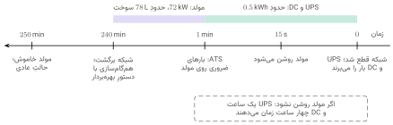
مثال 23.49 (خودمختاری یعنی سناریوی بازگردانی) پرسش. UPS و DC پیش از رسیدنِ مولد چقدر انرژی میدهند؟ مولد در چهار ساعت چقدر سوخت میسوزاند؟ اگر مولد روشن نشود چه؟
پاسخ. حدودِ 0.5 kWh در یک دقیقه؛ مولد 72 kW برای چهار ساعت با 0.27 L/kWh حدودِ 78 L. اگر روشن نشود، UPS یک ساعت و باتریِ DC چهار ساعت زمان برای بازگرداندنِ تغذیه میدهند.
تفسیر. الزامِ خودمختاری همین سناریوی مکتوب است: «اگر مولد نیاید، چقدر زمان داریم و در آن زمان چه کسی چه میکند؟» همگامکردنِ دوبارهٔ نیروگاه با شبکه با دستورِ بهرهبردار است؛ نیروگاهِ P راهاندازیِ سیاه پیشنهاد نمیدهد (D-024). وارسی: \(29.4 \times 1/60 = 0.49\,\text{kWh}\).
آیا مولدِ آمادهبهکار لازم است؟ پاسخ از الزامِ خودمختاری میآید، نه از عادت:
is a standby generator justified? (an 8 h grid outage):
essential load 72 kW for 8 h = 577 kWh; a battery for it ~ 642 kWh usable
options: (a) generator 150 kVA with a day tank; (b) a larger
UPS and DC battery for 8 h; (c) supply from the plant's own
battery (S1) through a transfer switch (ch 18 island)
(c) costs little if the battery exists and is kept above a
floor (ch 20); (b) is a large battery for rare events; (a)
covers long outages and S0 - the choice follows the
requirement for autonomy (REQ in ch 17), not a habitمثال 23.50 (سه راه برای هشت ساعت) پرسش. برای یک قطعِ هشتساعتهٔ شبکه، سه راهِ تأمینِ بارهای ضروری را مقایسه کنید.
پاسخ. بار 72 kW در ۸ ساعت 577 kWh؛ باتریِ لازم حدودِ 642 kWh قابلِ استفاده. (الف) مولدِ 150 kVA با مخزنِ روزانه؛ (ب) UPS و DC بزرگ؛ (پ) باتریِ نیروگاه در S1 از راهِ کلیدِ انتقال، اگر بالای یک کفِ انرژی نگه داشته شود (فصلِ ۲۰).
تفسیر. در S1 راهِ (پ) ارزان است ولی کفِ انرژی هزینهٔ فرصت دارد؛ (ب) باتریِ بزرگی برای رخدادِ نادر است؛ (الف) قطعهای طولانی و سناریوی S0 را پوشش میدهد. نیروگاهِ P (الف) را برمیگزیند چون مبنا باید بی باتری هم کار کند (D-025)؛ این انتخاب در D-027 ثبت میشود. وارسی: \(72.2 \times 8/0.9 = 642\).
- گامهای سناریوی از دست رفتنِ تغذیهٔ عادی را بنویسید.
- سوختِ 60 kW در ۶ ساعت با 0.27 L/kWh چقدر است؟
- سه راهِ تأمینِ بارهای ضروری در قطعِ طولانی را نام ببرید.
- چرا نیروگاهِ P مولد را برگزید؟
23.7.4 سه تصمیمِ دیگر در طراحیِ خدماتِ کمکی
روشِ راهاندازیِ موتور و اندازهٔ دیزل. در بخش 23.7.1 دیدیم دیزلِ اضطراری را راهاندازیِ بزرگترین موتورِ ضروری اندازه میکند، نه بارِ کارکردی. پرسشِ بعدی: اگر جریانِ راهاندازی را کم کنیم چه؟ چهار روشِ رایج: مستقیم (DOL)، ستاره–مثلث، راهاندازِ نرم و درایوِ دورِ متغیر (VFD):
starting method of the control-room HVAC (120 kVA direct on line)
against the standby generator (running need: 125 kVA):
method start kVA dip on 125 smallest gen for 12 %
direct on line 120 12.6% 150 kVA
star-delta 40 4.5% 125 kVA
soft starter 60 6.7% 125 kVA
variable-speed drive 36 4.1% 125 kVA
with any reduced-current start the generator falls back to
the size its running load needs; the drive costs money and
adds harmonics (next lesson), the larger generator costs
fuel and space - a trade-off written in the design basis;
star-delta also opens the circuit for a moment, which some
compressors do not like (the maker decides)مثال 23.51 (درایو یا دیزلِ بزرگتر؟) پرسش. کمپرسورِ تهویهٔ اتاقِ کنترل با راهاندازیِ مستقیم 120 kVA میکشد. با هر روش، افتِ ولتاژ روی دیزلِ 125 kVA و کوچکترین دیزل با حدِ 12 % چیست؟
پاسخ. مستقیم: 12.6 % و دیزلِ 150 kVA؛ ستاره–مثلث، نرم و درایو: 4.5، 6.7 و 4.1 % و دیزلِ 125 kVA که بارِ کارکردی میخواهد.
تفسیر. با هر راهاندازِ کمجریان، دیزل به اندازهٔ بارِ کارکردی برمیگردد. ولی درایو پول و هارمونیک میآورد (درسِ بعد)، ستاره–مثلث مدار را لحظهای باز میکند و برخی کمپرسورها آن را نمیپسندند (تصمیمِ سازنده)، و دیزلِ بزرگتر سوخت و جا. این مبادله در مبنای طراحی نوشته میشود. وارسی: روی 125 kVA با \(x_\text{d}' = 0.15\): \(120/(125/0.15 + 120) = 12.6\,\%\).
هارمونیک و ظرفیتِ ترانسفورماتورِ خدمات. UPS، چراغهای LED و درایوها جریانِ غیرسینوسی میکشند. تلفِ گردابی در سیمپیچ با مجذورِ مرتبهٔ هارمونیک بالا میرود؛ پس جریانی با همان مقدارِ مؤثر ترانسفورماتور را بیشتر گرم میکند. شاخصِ آن ضریبِ K است:
\[ K = \sum_h \left(\frac{I_h}{I}\right)^2 h^2, \qquad \frac{S_\text{usable}}{S_\text{r}} \approx \sqrt{\frac{1 + P_\text{ec}}{1 + K P_\text{ec}}} \tag{23.7}\]
با \(P_\text{ec}\) سهمِ تلفِ گردابی از تلفِ بارِ نامی (اینجا 0.10، آموزشی).
def k_factor(spectrum: dict) -> float:
"""K = sum (I_h / I_rms)^2 h^2 for harmonic currents in per unit of
the fundamental."""
rms2 = sum(v * v for v in spectrum.values())
return sum((v * v / rms2) * h * h for h, v in spectrum.items())
def derating(k: float, p_ec: float = 0.10) -> float:
"""Teaching derating of a transformer whose eddy loss (p_ec of the
load loss at rated current) grows with h^2."""
return math.sqrt((1 + p_ec) / (1 + k * p_ec))non-linear loads on the 250 kVA station-service transformer:
load mix K usable kVA
linear only 1.00 250
UPS, LED, drives (35 %) 1.68 243
UPS, LED, drives (70 %) 2.36 236
harmonic currents heat the windings more than their rms
value suggests (eddy losses grow with h^2): the same
transformer carries less; the triplen harmonics also add
in the neutral (lesson E, ch 27)
the 167 kVA normal demand still fits under 236 kVA - the
margin of lesson F is partly spent on harmonicsمثال 23.52 (ظرفیتی که هارمونیک میخورد) پرسش. اگر 70 % بار غیرخطی با طیفِ نمونه باشد، \(K\) و ظرفیتِ قابلِ استفادهٔ ترانسفورماتورِ 250 kVA چیست؟
پاسخ. \(K = 2.36\) و حدودِ 236 kVA.
تفسیر. تقاضای عادیِ 167 kVA هنوز جا میشود، ولی بخشی از حاشیهٔ بخش 23.7.1 صرفِ هارمونیک شده است. اگر سهمِ درایوها بالا برود (مثلاً درایو برای همهٔ پمپها و تهویهها)، ترانسفورماتورِ «K-رتبه» یا فیلتر لازم میشود؛ هارمونیکها در فصلِ ۲۷ کامل میآیند. وارسی: \(\sqrt{1.1/(1 + 0.236)} = 0.943\) و \(250 \times 0.943 = 236\).
منبعهای خدماتِ کمکی و ساعتهای بیبرق. نیروگاه نمیتواند جزیرهای کار کند (فصلِ ۲۰)؛ پس وقتی خطِ صادرات یا شبکه قطع است، هر دو ترانسفورماتورِ خدمات بیبرقاند. منبعِ دوم یا دیزل این شکاف را میپوشاند:
hours a year without AC auxiliary supply (teaching expected values):
own 33 kV bus via the station-service transformers: 4.5 h (the plant
cannot island, so a line or grid outage takes both SSTs)
local distribution feeder alone: 8 h
both, independent: 0.0041 h (outages must overlap)
own bus + diesel (2% fail to start): 0.09 h
the UPS and the DC battery bridge the minutes before the
diesel takes the load (lesson F); the second source buys
hours, not minutes - its value is in long outages: a
winter grid outage of a day leaves heaters, battery
HVAC and pumps (ch 19) on the diesel's fuel
a distribution feeder is a third-party asset with its
own meter, tariff and agreement - one more boundary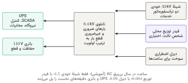
مثال 23.53 (ساعتها، نه دقیقهها) پرسش. با 4.5 ساعت در سال قطعیِ شینهٔ خودی و 8 ساعت برای فیدرِ توزیع، کمبودِ سالانهٔ برقِ کمکی با هر ترکیب چیست؟
پاسخ. فقط شینهٔ خودی 4.5 h؛ شینه و فیدر 0.004 h؛ شینه و دیزل (با 2 % شکستِ راهاندازی) 0.09 h.
تفسیر. UPS و باتری دقیقههای نخست را پل میزنند (بخش 23.7.2)؛ منبعِ دوم ارزشش را در قطعیهای طولانی نشان میدهد: یک روز قطعیِ زمستانی گرمکنها، تهویهٔ باتری و پمپها را به سوختِ دیزل میسپارد. فیدرِ توزیع داراییِ شخصِ ثالث است، با کنتور، تعرفه و قرارداد، یعنی یک مرزِ دیگر روی نمودار (بخش 23.8.6). وارسی: \(4.5 \times 8/8{,}760 = 0.0041\).
- دیزل با بارِ کارکردی اندازه شده و راهاندازیِ بزرگترین موتورِ ضروری فراموش شده است.
- درایو برای کوچک کردنِ دیزل انتخاب شده ولی هارمونیکش در ظرفیتِ ترانسفورماتور دیده نشده است.
- فرض شده ترانسفورماتورهای خدمات در قطعِ خطِ صادرات برق دارند (نیروگاه جزیرهای کار نمیکند).
- چرا دیزل را راهاندازی اندازه میکند و نه بارِ کارکردی؟
- افتِ ولتاژِ راهاندازیِ 60 kVA روی دیزلِ 100 kVA با \(x_\text{d}' = 0.15\)؟
- دو عیبِ ستاره–مثلث و درایو را نام ببرید.
- ضریبِ \(K\) برای جریانی که فقط هارمونیکِ پنجمِ 20 % دارد؟
- چرا جریانِ هارمونیکی با همان مقدارِ مؤثر گرمای بیشتری میسازد؟
- چرا با قطعِ خطِ صادرات هر دو ترانسفورماتورِ خدمات بیبرق میشوند؟
- کمبودِ سالانه با دو منبعِ مستقلِ 6 و 10 ساعت؟
- فیدرِ توزیعِ محلی چه مرزهایی به نمودار میافزاید؟
23.7.5 باتریِ شناور و دو خطای زمین
ایده. باتریِ کنترلِ 110 V معمولاً شناور است: هیچ قطبش مستقیم به زمین وصل نیست و یک پایشگرِ عایق با دو مقاومتِ متوازن قطبها را حدودِ +55 و −55 V نسبت به زمین نگه میدارد. چرا؟ چون یک خطای زمین در سامانهٔ شناور جریانی نمیسازد و کار را متوقف نمیکند؛ فقط هشدار میدهد. ولی خطای دوم داستانِ دیگری است:
the floating 110 V control battery: pole voltages to earth
state + pole V - pole V
healthy (balance resistors) 55 -55
earth fault on the + pole 0 -110
earth fault on the - pole 110 0
second fault: the wire between an OPEN trip contact and the
trip coil touches earth while the + pole is already earthed:
the coil sees 110 V, its pick-up is about 66 V -> the breaker
trips with no protection operating
one earth fault on a floating system does nothing but an
alarm; two together can trip or block a breaker - so the
insulation monitor alarms on the first, and the first is
found and cleared before a second can join it (ch 26,
lab E: a standing alarm nobody sees is no alarm)مثال 23.54 (قطعی که هیچ رلهای نداد) پرسش. قطبِ مثبت به زمین خطا دارد. اکنون سیمِ میانِ کنتاکتِ بازِ قطع و بوبینِ قطع به زمین میخورد. بوبین چه ولتاژی میبیند و چه میشود؟
پاسخ. قطبِ منفی در −110 V است؛ بوبین میانِ زمین (0 V) و قطبِ منفی، یعنی 110 V، بالای ولتاژِ کارِ حدودِ 66 V: کلید بیفرمانِ حفاظت قطع میکند.
تفسیر. دو خطای زمین در جاهای نامناسب میتوانند کلید را قطع یا مدارِ قطع را کور کنند (اگر دو خطا دو سرِ کنتاکت را پل بزنند یا بوبین را دور بزنند). برای همین پایشگرِ عایق خطای نخست را هشدار میدهد و این هشدار باید پیدا و رفع شود پیش از آنکه دومی بیاید. هشدارِ ایستادهای که کسی نمیبیند همان اثرِ نبودِ پایش را دارد (فصلِ ۲۶، آزمایشگاهِ ه). وارسی: \(0 - (-110) = 110 > 0.6 \times 110 = 66\).
23.7.6 ناحیههای حفاظت از روی مدل
ایده. هر شاخه و شینهٔ نمودار یک ناحیهٔ حفاظت دارد (بخش 23.2.5). برنامه ناحیهها را از مدل بیرون میکشد و کلیدهایی را که میانِ دو ناحیهاند پیدا میکند؛ اینها جاهاییاند که ناحیهها باید روی هم بیفتند:
protection zones read back from the one-line model:
zone branches breakers transformers cables/lines
Z-BESS-A 3 1 0 2
Z-BESS-B 3 1 0 2
Z-GRID 2 1 0 0
Z-L1 3 1 0 1
Z-LVA 2 1 1 0
Z-LVB 2 1 1 0
Z-MVA 1 1 0 0
Z-PVF1 5 1 0 4
Z-PVF2 4 1 0 3
Z-PVF3 4 1 0 3
Z-T1 3 2 1 0
Z-T2 3 2 1 0
Z-WS1 5 1 0 4
Z-WS2 5 1 0 4
Z-WS3 5 1 0 4
+ 26 unit-transformer zones, one transformer each
breakers between buses of two zones: 16 of 17; inside one zone: =G1-Q1
each such breaker is where two zones must overlap: its CTs
feed the protection on both sides (ch 26); the one inside a
zone is the utility's breaker between two utility buses -
its zones are the utility's to draw
busbar zones (Z-MVA, Z-MVB) are carried by the buses; the
coupler is listed under Z-MVA
the table is the first input of the protection one-lineمثال 23.55 (شانزده کلیدِ مرزی) پرسش. چند کلید میانِ دو ناحیهاند و کدام کلید درونِ یک ناحیه است؟
پاسخ. ۱۶ از ۱۷؛ =G1-Q1، کلیدِ بهرهبردار میانِ دو شینهٔ خودِ او، درونِ ناحیهٔ Z-GRID است.
تفسیر. کلیدِ مرزی دو دسته CT میخواهد (یا یک CT که هر دو حفاظت را تغذیه کند) تا ناحیهها روی کلید همپوشانی داشته باشند و هیچ بخشی بیحفاظت نماند؛ فصلِ ۲۶ این جدول را به نمودارِ تکخطیِ حفاظت تبدیل میکند. ناحیههای سمتِ شبکه را بهرهبردار میکشد. وارسی: ۱۲ ناحیهٔ توربین، ۱۰ خورشیدی و ۴ باتری: ۲۶ ناحیهٔ ترانسفورماتورِ واحد.
23.7.7 اندازهٔ مقاومت و ترانسفورماتورِ زمین
ایده. مقاومتِ زمینِ نول (400 A) در خطا انرژیِ بزرگی را در چند ثانیه گرم میکند و تقریباً هیچاش را به بیرون نمیدهد (بیدررو). پس جرمِ المنتِ آن از انرژی و افزایشِ دمای مجاز میآید، و ترانسفورماتورِ زمین با رتبهٔ کوتاهمدت ساخته میشود:
sizing the neutral earthing resistor and its transformer (teaching):
R = 19,053 / 400 = 47.6 ohm
energy in 10 s: I^2 R t = 76 MJ
stainless-steel grid, c 500 J/(kg K), allowed rise 720 K:
at least 212 kg of element (adiabatic: all heat stays in it)
earthing transformer: 7.6 MVA for 10 s (short-time),
a small continuous rating for the neutral's standing current
the 10 s rating covers the slowest clearing with breaker
failure (ch 26: 1.75 s) with margin for a repeat fault
before the element cools; the makers rate both from the
specificationمثال 23.56 (هفتاد و شش مگاژول در ده ثانیه) پرسش. انرژیِ مقاومتِ 47.6 Ω با 400 A در 10 s، جرمِ کمینهٔ المنتِ فولادِ زنگنزن (گرمای ویژهٔ 500 J/(kg·K)، افزایشِ مجازِ 720 K) و رتبهٔ کوتاهمدتِ ترانسفورماتورِ زمین چیست؟
پاسخ. 76 MJ؛ حدودِ 212 kg؛ 7.6 MVA برای 10 s.
تفسیر. رتبهٔ دهثانیهای کندترین رفعِ خطا با خرابیِ کلید (فصلِ ۲۶: 1.75 s) را با حاشیه میپوشاند و جا برای خطای تکراری پیش از سرد شدنِ المنت میگذارد. توانِ پیوستهٔ ترانسفورماتورِ زمین کوچک است، چون در کارِ عادی جریانِ نول تقریباً صفر است؛ سازندهها هر دو را از مشخصه رتبه میدهند. وارسی: \(400^2 \times 47.6 \times 10 = 76.2\,\text{MJ}\).
- چرا باتریِ کنترل را شناور نگه میدارند؟
- پس از خطای زمین روی قطبِ منفی، ولتاژِ قطبِ مثبت نسبت به زمین چیست؟
- دو خطای زمین چگونه میتوانند مدارِ قطع را کور کنند؟
- چرا هر کلیدِ میانِ دو ناحیه دو دسته CT میخواهد؟
- انرژیِ مقاومتِ 300 A در 33 kV برای 5 s چیست؟
23.8 چ. آزمایشگاهِ مرزِ نیروگاه و شبکه
23.8.1 ردیابیِ تولید تا نقطهٔ تحویل
ایده. مسیرِ انرژی از هر منبع تا شبکهٔ گیرنده چند مرز را میگذرد: تغییرِ ولتاژ، ناحیهٔ حفاظت، نقطهٔ جداسازی، کنتور، مرزِ آزمون و مرزِ مالکیت. یک توربین را از ژنراتور تا شینهٔ شبکه دنبال میکنیم:
turbine WS3-4 traced to the grid (interfaces on the way):
=WS3-4-T1: voltage 0.69 -> 33 kV
=WS3-W4: protection zone Z-WS3
=WS3-Q1: isolation point
=T2-Q2: protection zone Z-T2
=T2-Q2: isolation point
=T2: voltage 33 -> 132 kV
=T2-Q1: isolation point
=E1-Q1: protection zone Z-L1
=E1-Q1: revenue (option A) meter
=E1-Q9: owner plant -> open (U-065)
=E1-Q9: isolation point
=E1-Q9: test boundary (plant and utility)
=G1-Q9: owner open (U-065) -> utility
=G1-Q9: protection zone Z-GRID
=G1-Q9: isolation point
=G1-Q9: test boundary (utility)
=G1-Q1: revenue (option B) meter
the turbine is the plant's; inside it, the maker's scope ends
at the transformer's 33 kV terminals (an interface of
supply, not of ownership)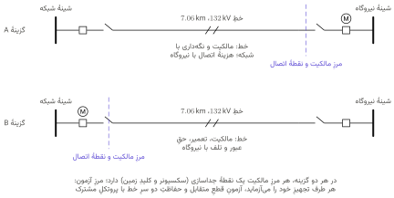
مثال 23.57 (مرزِ عرضه و مرزِ مالکیت) پرسش. مسیرِ توربینِ WS3-4 از کدام مرزها میگذرد؟ مرزِ سازندهٔ توربین کجاست و چه فرقی با مرزِ مالکیت دارد؟
پاسخ. ۱۷ رابط: ۲ تغییرِ ولتاژ، ۴ ناحیهٔ حفاظتِ تازه، ۵ نقطهٔ جداسازی، ۲ گزینهٔ کنتور، ۲ مرزِ آزمون و ۲ مرزِ مالکیت. دامنهٔ سازنده در پایانههای 33 kV ترانسفورماتورِ واحد پایان مییابد: این مرزِ عرضه است؛ مالکِ توربین خودِ نیروگاه است.
تفسیر. مرزِ عرضه (چه کسی چه چیزی را تحویل میدهد و ضمانت میکند) و مرزِ مالکیت (چه کسی مالک و مسئولِ بهرهبرداری است) را نباید با هم آمیخت؛ هر دو روی نقشهها میآیند اما با نشانههای جدا. وارسی: \(2 + 4 + 5 + 2 + 2 + 2 = 17\).
23.8.2 سطحِ اتصالِ کوتاه با روشِ MVA
ایده. برای وارسیِ مقدماتیِ تجهیزات، توانِ اتصالِ کوتاهِ هر عنصر به MVA بیان میشود (\(S = U^2/Z\) برای خط و \(S_\text{r}/z\) برای ترانسفورماتور) و عنصرهای سری مانندِ مقاومتهای موازی ترکیب میشوند:
\[ \frac{1}{S_\text{k}} = \sum_i \frac{1}{S_i} \tag{23.8}\]
def series(*mva: float) -> float:
"""Short-circuit MVA of elements in series (MVA method)."""
return 1.0 / sum(1.0 / m for m in mva)
def mva_method() -> dict:
n = s17.NETWORK
s_grid = n["s_sc_mva"] # at the POC
z_line = n["line_km"] * math.hypot(n["r_ohm_km"], n["x_ohm_km"])
s_line = 132.0 ** 2 / z_line
s_tr = 63.0 / 0.12 # each transformer
hv = series(s_grid, s_line)
mv_one = series(hv, s_tr) # bus coupler open
mv_two = series(hv, 2 * s_tr) # coupler closed
lv = series(mv_one, 0.25 / 0.045)
return {"POC": s_grid, "plant 132 kV": hv, "33 kV (one T)": mv_one,
"33 kV (both T)": mv_two, "0.4 kV board": lv, "s_line": s_line,
"s_tr": s_tr}fault levels by the MVA method (grid side only; teaching):
line 5,910 MVA, each transformer 525 MVA
bus MVA kA switchgear kA
POC 1,500 6.6 -
plant 132 kV 1,196 5.2 31.5
33 kV (one T) 365 6.4 25
33 kV (both T) 559 9.8 25
0.4 kV board 5 7.9 -
inverters and converters add about 1.2 x rated current: 2.7 kA at 33 kV
with the coupler closed and every source feeding, the 33 kV
duty is about 12.5 kA - inside a 25 kA rating; the full
study with the network's X/R and the makers' data is ch 26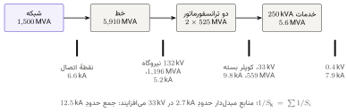
مثال 23.58 (دوازده و نیم کیلوآمپر) پرسش. جریانِ اتصالِ کوتاه در شینهٔ 33 kV با کوپلرِ باز و بسته چیست؟ سهمِ اینورترها و مبدلها را بیفزایید و با کلیدِ 25 kA مقایسه کنید.
پاسخ. کوپلرِ باز 365 MVA یعنی 6.4 kA؛ بسته 559 MVA یعنی 9.8 kA؛ با حدودِ 2.7 kA از منابعِ مبدلدار، حدودِ 12.5 kA: درونِ 25 kA.
تفسیر. روشِ MVA زاویهها و نسبتِ X/R را نادیده میگیرد و برای غربالگری کافی است؛ مطالعهٔ کامل با دادهٔ شبکه (U-089) و سازندگان در فصلِ ۲۶ است. حاشیهٔ بزرگ به رشدِ آیندهٔ شبکه فرصت میدهد. وارسی: \(1/(1/1500 + 1/5910 + 1/1050) = 559\).
- مرزِ عرضه و مرزِ مالکیت را از هم جدا کنید.
- معادلهٔ 23.8 را برای 1,500، 5,910 و 525 MVA حساب کنید.
- چرا روشِ MVA فقط برای غربالگری است؟
- سهمِ منابعِ مبدلدار در جریانِ خطا را چگونه برآورد کردیم؟
23.8.3 ماتریسِ مسئولیت، جای کنتور و گزینههای اتصال
ایده. برای هر داراییِ مرزی باید روشن باشد چه کسی طراحی، تأمین، نصب، آزمون، مالکیت و بهرهبرداری را بر عهده دارد. ماتریسِ مسئولیت این را جدول میکند و خانههای «باز» را آشکار نگه میدارد:
responsibility matrix of the boundary assets (teaching):
asset design supply install test own/operate
plant line bay (E1) plant plant plant plant plant
revenue meter utility* plant plant utility utility
132 kV line open open open open open
utility line bay (G1) utility utility utility utility utility
line protection, both ends both both both both both
telecom to utility SCADA utility plant plant utility plant
intertrip and PPC signals both plant plant both plant
(* the utility specifies the meter; who supplies it is
in the connection agreement); 'open' cells wait for the
grid offer (U-065); 'both' cells need a protocol: one
owner, one witnessمثال 23.59 (خانههایی که «هر دو» دارند) پرسش. کدام داراییها همهٔ خانههایشان باز است و کدام «هر دو»؟ خانهٔ «هر دو» چه چیزی کم دارد؟
پاسخ. خطِ 132 kV همه باز است (U-065). حفاظتِ دو سرِ خط و سیگنالهای قطعِ متقابل «هر دو» دارند.
تفسیر. «هر دو» یعنی یک پروتکل لازم است: یک مالکِ کار و یک ناظر، با مرزِ آزمون و برگهٔ امضای مشترک. بی پروتکل، آزمونِ قطعِ متقابل یا انجام نمیشود یا دو بار. وارسی: هفت دارایی در ماتریس.
جای کنتور. کنتورِ درآمد یا در بِیِ نیروگاه است (گزینهٔ A) یا در بِیِ شبکه (گزینهٔ B). تفاوت، تلفِ خط است:
line losses between meter option A (plant bay) and B (grid bay):
line resistance 0.847 ohm; at 100 MW: 0.486 MW
over the year: 755 MWh of 295,631 MWh delivered (0.26%)
with option A the buyer pays for energy that is lost on the
line; with option B the plant bears the loss - the meter's
place is a commercial term with a number (ch 17, 21)مثال 23.60 (هفتصد و پنجاه مگاواتساعت) پرسش. تلفِ خط در 100 MW و در یک سال چیست و چه کسی آن را میپردازد؟
پاسخ. 0.486 MW در بیشینه و 755 MWh در سال (0.26 % تحویلی). با گزینهٔ A خریدار، با B نیروگاه.
تفسیر. با تعرفهٔ آموزشیِ 70 واحد این حدودِ 53 هزار واحد در سال است: کوچک ولی یک شرطِ تجاریِ عددی (فصلهای ۱۷ و ۲۱). تلف با مجذورِ توان بالا میرود، پس سهمِ آن از انرژی کمتر از سهمش در بیشینه (0.49 %) است. وارسی: \(100^2 \times 0.847/132^2 = 0.486\).
دو گزینهٔ اتصال. مالکیتِ خط هزینه، ریسک و نقشه را عوض میکند:
two connection alternatives for the 132 kV line (teaching):
A: POC at the plant's line bay - the utility builds, owns
and maintains the line; the plant pays a connection charge
B: POC at the utility's bay - the plant builds and owns it
the line: 3,177 k u to build; losses 52.9 k u a year;
upkeep about 32 k u a year
in B the plant also carries the line's outages, repairs,
access rights and permits; in A it pays for them through
the charge - which is cheaper is a number in the grid offer
(U-065, U-068), and the one-line is redrawn for eitherمثال 23.61 (خطِ خودی یا خطِ شبکه) پرسش. دو گزینهٔ اتصال را از نظرِ هزینه، ریسک و نقشه مقایسه کنید.
پاسخ. ساختِ خط حدودِ 3,177 هزار، تلف 52.9 و نگهداری حدودِ 32 هزار در سال. در B نیروگاه خاموشیها، تعمیر، حقِ عبور و مجوزهای خط را هم بر عهده دارد؛ در A اینها را از راهِ هزینهٔ اتصال میپردازد.
تفسیر. ارزانتر بودنِ هر گزینه عددی در پیشنهادِ اتصال است (U-065، U-068). نقشه برای هر گزینه دوباره کشیده میشود: جای خطِچینِ مالکیت، کنتور، مرزِ آزمون و دامنهٔ حفاظت عوض میشود. وارسی: \(450 \times 7.06 = 3{,}177\).
23.8.4 رابطهای حلنشده با شبکه و طرفهای سوم
unresolved utility and third-party interfaces:
1. U-065 owner of the 132 kV line and the point of connection
2. U-089 utility data: fault level, X/R, protection settings at G1
3. U-067 grid-code curves: reactive power, ride-through
4. U-068 connection cost and who builds the line
5. meter class, CT/VT ratios and the meter's place (A or B)
6. telecom path and protocol to the utility's control centre
7. intertrip scheme and its test with the utility
8. switching and earthing procedures across the boundary
each goes to the connection agreement or the operating
agreement with the utility; the one-line shows them as
open, never as assumedمثال 23.62 (هشت پرسش برای پیشنهادِ اتصال) پرسش. هشت رابطِ حلنشده را به دو گروهِ «قراردادِ اتصال» و «توافقِ بهرهبرداری» تقسیم کنید.
پاسخ. قراردادِ اتصال: مالک و نقطهٔ اتصال، دادهٔ شبکه، منحنیهای قاعدهٔ شبکه، هزینه و سازندهٔ خط، ردهٔ کنتور و جایش. توافقِ بهرهبرداری: مسیرِ ارتباطی و پروتکل، طرحِ قطعِ متقابل و آزمونش، روالهای کلیدزنی و زمینکردن در مرز.
تفسیر. روالهای کلیدزنی و زمینکردن در مرز سندهای بهرهبرداریاند که با بهرهبردارِ شبکه نوشته و با کارکنانِ صلاحیتدار اجرا میشوند؛ این کتاب گامهایشان را نمینویسد. نقشه هر هشت مورد را باز نشان میدهد. وارسی: ۵ + ۳ = ۸.
- شش ستونِ ماتریسِ مسئولیت را نام ببرید.
- تلفِ خط در 80 MW چیست؟
- دو گزینهٔ اتصال را در سه سطر مقایسه کنید.
- چرا روالهای کلیدزنیِ مرزی در این کتاب گامبهگام نوشته نمیشوند؟
23.8.5 کنتورِ درآمد و جریانِ دوسویه
دقتِ کنتور. کنتورِ درآمد از سه جزء ساخته میشود: ترانسفورماتورِ جریان، ترانسفورماتورِ ولتاژ و خودِ کنتور؛ خطای هر کدام حدی دارد و ترکیبشان عدمِ قطعیتِ انرژیِ فروختهشده است:
revenue meter at the 132 kV line bay (teaching classes):
full-export current 437 A -> CT 600/1 A; VT 132/sqrt3 kV : 110/sqrt3 V
error budget (each a % limit, combined as independent):
current transformer 0.2 %
voltage transformer 0.2 %
meter 0.2 %
combined 0.35 % of 295,140 MWh = 1,022 MWh = 72 k u a year at 70 u/MWh
a check meter on a second CT core lets the two be compared;
the classes, the CT burden and the meter's place are set by
the utility's metering code (U-065), not chosen hereمثال 23.63 (هفتاد و دو هزار واحد در سال) پرسش. با سه جزءِ 0.2 % (آموزشی)، عدمِ قطعیتِ ترکیبی و ارزشِ آن در سال چیست؟
پاسخ. \(\sqrt{3} \times 0.2 = 0.35\,\%\)؛ از 295,140 MWh، حدودِ 1,022 MWh یعنی حدودِ 72 هزار واحد در سال با تعرفهٔ 70.
تفسیر. کنتورِ وارسی روی هستهٔ دومِ ترانسفورماتورِ جریان امکانِ مقایسه میدهد. ردههای دقت، بارِ ترانسفورماتورها و جای کنتور را قاعدهٔ اندازهگیریِ بهرهبردار تعیین میکند (U-065)؛ ترکیبِ مستقل یک فرض است و حدها را میتوان دقیقتر با گواهیهای آزمون جایگزین کرد. وارسی: \(0.003464 \times 295{,}140 = 1{,}022\).
جریانِ دوسویه. نیروگاه در شبهای آرام از شبکه برق میگیرد؛ کنتورِ درآمد در هر دو جهت میسنجد:
what the plant takes from the grid on a calm night (kW, teaching):
12 turbines idle (yaw, heating, control) 72
10 PV inverter stations at night 15
battery blocks standby (S1) 96
station service (normal) 152
total 335 kW; 10 calm night hours a week: 174 MWh a year imported
the import is metered (the revenue meter runs both ways)
and priced under the connection agreement; it is part of
the own use that ch 17 counted (4.5 GWh a year in its
detailed list), now traced to the equipmentمثال 23.64 (سیصد و سیوپنج کیلووات در شب) پرسش. نیروگاه در شبِ آرام چقدر از شبکه میگیرد و در سال چقدر؟
پاسخ. حدودِ 335 kW: توربینهای بیکار 72، اینورترها 15، باتریها 96 و خدماتِ ایستگاه 152 kW؛ با ۱۰ ساعت در هفته حدودِ 174 MWh در سال.
تفسیر. این بخشی از مصرفِ داخلیِ فصلِ ۱۷ است که حالا به تجهیز رسیده؛ قیمتِ برقِ واردشده در قراردادِ اتصال میآید. باتریها بزرگترین مصرفکنندهٔ شبانهاند (سرمایش و BMS). وارسی: \(335 \times 520/1000 = 174\).
- سه جزءِ کنتورِ درآمد را نام ببرید.
- با سه جزءِ 0.5 % عدمِ قطعیتِ ترکیبی چیست؟
- کنتورِ وارسی چه سودی دارد؟
- چهار مصرفکنندهٔ شبانهٔ نیروگاه را نام ببرید.
23.8.7 شبکهٔ گیرنده از دیدِ نقطهٔ اتصال
ایده. ردیابیِ مسیر در نقطهٔ اتصال تمام نمیشود: پشتِ آن شبکهٔ گیرنده است. نمودارِ تکخطی آن را با یک منبع و یک امپدانس نشان میدهد (توانِ اتصالِ کوتاه و نسبتِ \(X/R\) از بهرهبردار). همین امپدانس نشان میدهد صادراتِ نیروگاه ولتاژِ نقطهٔ اتصال را چقدر جابهجا میکند (همه در پریونیت):
\[ \Delta V \approx R\,P + X\,Q \tag{23.10}\]
the receiving network seen from the POC (1,500 MVA, X/R 10, teaching):
grid impedance on 100 MVA: r 0.0066, x 0.0663 pu
export P MW Q Mvar voltage change at the POC %
100 0 +0.66
100 -20 -0.66
100 -33 -1.53
50 0 +0.33
dV ~ R P + X Q: export raises the voltage a little through
R; absorbing reactive power pulls it back through X; with
a strong grid the effect is small - the receiving network's
strength and X/R are utility data (U-089) and the full study
is ch 28; the one-line carries the grid as an impedance at
the POC for exactly this purposeمثال 23.66 (صادرات ولتاژ را بالا میبرد، جذبِ توانِ واکنشی پایین) پرسش. با شبکهٔ 1,500 MVA و \(X/R = 10\)، صادراتِ 100 MW با ضریبِ توانِ ۱ و با جذبِ 20 و 33 Mvar ولتاژِ نقطهٔ اتصال را چقدر جابهجا میکند؟
پاسخ. +0.66 %، −0.66 % و −1.53 %.
تفسیر. در شبکهٔ قوی اثر کوچک است؛ در شبکهٔ ضعیف (توانِ اتصالِ کوتاهِ کمتر) چند برابر میشود و توانِ واکنشیِ نیروگاه ابزارِ اصلیِ نگه داشتنِ ولتاژ است (فصلهای ۲۰ و ۲۷). دادههای شبکه از بهرهبردار میآیند (U-089) و مطالعهٔ کامل در فصلِ ۲۸ است؛ نمودار امپدانسِ شبکه را دقیقاً برای همین کنارِ نقطهٔ اتصال نگه میدارد. وارسی: \(r = 0.0667/\sqrt{101} = 0.0066\) و \(0.0066 \times 1.0 = 0.66\,\%\).
- با شبکهٔ 500 MVA و \(X/R = 5\)، صادراتِ 100 MW با ضریبِ توانِ ۱ ولتاژ را چقدر بالا میبرد؟
- چرا در شبکهٔ ضعیف توانِ واکنشیِ نیروگاه مهمتر است؟
23.9 نیروگاهِ P: سه مثالِ یکپارچه
دادهها: بستهٔ دادهٔ 1.1.0، سناریوی S1، مبنای معماری (D-022)، مدلِ تولید (D-019) و شبکهٔ آموزشیِ فصلِ ۱۷ (A-285)؛ مقدارهای برقیِ این فصل آموزشی و بیشترشان موقتاند (A-316 تا A-320).
one PV block by hand (5 MW, pf 1):
DC: 20 strings x 21 combiners = 420 strings of 26 modules
inverter output 0.6 kV: 4,811 A
block transformer 33 kV side: 87.5 A
PV feeder 1 (4 blocks) at 33 kV: 350 A
main transformer T2 132 kV side at 65 MW: 284 A
export line at 100 MW: 437 A
the current falls 55 times from inverter to feeder and the
same conductor carries 55 x 55 = 3,025 times less lossمثال 23.67 (مقدماتی: یک بلوکِ خورشیدی با دست) پرسش. جریانِ یک بلوکِ 5 MW را در هر سطح از اینورتر تا خطِ صادرات با دست حساب کنید.
پاسخ. 4,811 A در 0.6 kV، 87.5 A در 33 kV، فیدرِ چهاربلوکی 350 A، سمتِ 132 kV ترانسفورماتورِ T2 در 65 MW 284 A و خط در 100 MW 437 A.
تفسیر. جریان از اینورتر تا فیدر ۵۵ برابر کم میشود و تلف در همان رسانا \(55^2\) برابر. شمارشِ رشتهها (۴۲۰ رشتهٔ ۲۶تایی) و جریانها همان چیزی است که نمودارِ تکخطی باید در کنارِ هر نماد نشان دهد. وارسی: با مثال 23.1 یکی است.
the auxiliary one-line in numbers:
two 33/0.4 kV 250 kVA station transformers (one per bus
section), LV board in two halves with a coupler; ATS to a
150 kVA standby generator for the essential half
demand normal 167 kVA, emergency 80 kVA
DC 110 V: 250 Ah (249 Ah needed), two 70 A chargers
UPS 33 kVA, 27 kWh for 60 min
battery blocks: own auxiliary transformers in the maker's
package (interface IF-006); turbines and PV inverters take
their auxiliaries from their own transformersمثال 23.68 (میانی: نقشهٔ کمکی در عدد) پرسش. معماریِ کمکیِ نیروگاه را با اندازههایش در یک بند بنویسید.
پاسخ. دو ترانسفورماتورِ 250 kVA، تابلوی LV دو نیمه با کوپلر، ATS به مولدِ 150 kVA برای نیمهٔ ضروری؛ DC 110 V با باتریِ 250 Ah و دو شارژرِ 70 A؛ UPS 33 kVA برای یک ساعت. باتریها کمکیِ خود را در بستهٔ سازنده دارند و توربینها و اینورترها از ترانسفورماتورِ خودشان.
تفسیر. هر عدد به یک محاسبه برمیگردد (مثال 23.45، مثال 23.47) و هر محاسبه به یک الزام یا فرض. خودمختاریِ چهارساعتهٔ DC و یکساعتهٔ UPS تا روشنشدنِ الزام موقتاند (U-091). وارسی: تقاضای عادی 167 kVA زیرِ 250 kVA با حاشیه.
electrical basis of Plant P (D-027; PLP-ELE-DWG-0005 rev A):
levels: 0.6/0.69 kV units, 33 kV collector, 132 kV export
collector: WS1, WS2, PVF3, BESS-A on section A; WS3, PVF1,
PVF2, BESS-B on section B; coupler normally open
main transformers 2 x 63 MVA YNd11 (provisional), earthing
transformers with 400 A resistors on each 33 kV section
per-transformer limit in the PPC (each section up to 68 MVA)
export: line bay E1 with disconnector at the boundary; line
owner and meter place open (U-065); losses between the
meters 0.26 %
fault levels: 33 kV about 12.5 kA with the coupler closed
(25 kA gear), 0.4 kV board 7.9 kA
auxiliaries: 2 x 250 kVA, generator 150 kVA, DC 250 Ah, UPS
33 kVA / 60 min; load-shed and cause-and-effect matrices
open: impedances and vector groups (makers), utility data
(U-089), autonomy requirement (U-091)مثال 23.69 (یکپارچه: مبنای برقیِ نیروگاهِ P) پرسش. مبنای برقیِ نیروگاهِ P را بنویسید: سطحها، جمعآوری، ترانسفورماتورها، زمین، صادرات، جریانِ خطا، خدماتِ کمکی و موردهای باز.
پاسخ. خروجیِ بالا؛ همراه با محدودیتِ هر ترانسفورماتور در کنترلگرِ نیروگاه، ترانسفورماتورهای زمین با 400 A، مولد برای سناریوی بیباتری.
تفسیر. این تصمیمِ D-027 است: مبنای برقیِ موقت برای طراحیِ تفصیلی (فصلهای ۲۴ تا ۲۸)، با بازنگری پس از پیشنهادِ اتصال و پیشنهادِ سازندگان. وارسی: هر بند در یکی از مثالهای این فصل عدد و شاهد دارد.
23.10 عددهای کلیدیِ برقِ نیروگاهِ P
| کمیت | مقدار | مثال |
|---|---|---|
| جریانِ 5 MW در 0.6 و 33 kV | 4,811 و 87.5 A | مثال 23.1 |
| ترانسفورماتورها، کلیدها، نقطههای جداسازی | ۳۰، ۱۷، ۱۹ | مثال 23.4 |
| بارِ هر بخشِ شینه | 65 MW (68.4 MVA) | مثال 23.13 |
| سنگینترین فیدر | 368 A (90 % کابل) | مثال 23.14 |
| رابطهای بستهها | ۵۹ | مثال 23.12 |
| مقدارهای موقت و باز | ۶۴ و ۴ | مثال 23.29 |
| تقاضای کمکیِ عادی و اضطراری | 167 و 80 kVA | مثال 23.35 |
| ترانسفورماتورِ خدمات، مولد | 2 × 250 و 150 kVA | مثال 23.45 |
| باتریِ DC، شارژر، UPS | 250 Ah، 70 A، 33 kVA | مثال 23.47 |
| جریانِ خطا در 33 kV و 0.4 kV | 12.5 و 7.9 kA | مثال 23.58 |
| تلفِ خط میانِ دو کنتور | 755 MWh (0.26 %) | مثال 23.60 |
| مقاومتِ زمینِ 33 kV | 47.6 Ω برای 400 A | مثال 23.6 |
23.11 گردشِ کارِ نمودارِ تکخطی و مرزها
- سطحهای ولتاژ و معماری را از مبنای معماری بگیرید (D-022، بخش 23.2.1).
- قاعدهٔ نامگذاری و نمادها را پیش از نخستین نقشه ثابت کنید (بخش 23.2.3).
- نقشه را بهشکلِ داده بنویسید: شینه، شاخه، مالک، ناحیه، وضعیتِ هر مقدار (بخش 23.2.4).
- چهار مرز را بکشید و قاعدههایشان را وارسی کنید (بخش 23.2.5).
- فهرستِ تجهیزات، رابطها، بارگذاریِ بخشها و فیدرها را بسازید (بخش 23.3).
- خدماتِ کمکی را ردهبندی، اندازه و فلسفهٔ بهرهبرداری و ماتریسها را بنویسید (بخش 23.6، بخش 23.7).
- مسیرِ هر منبع تا نقطهٔ تحویل را ردیابی و ماتریسِ مسئولیت را پر کنید (بخش 23.8).
- با برنامه و با انسان بازبینی کنید و بازنگری را با وضعیت و دلیل ثبت کنید (بخش 23.4).
23.12 آزمایشگاههای پایتونِ این فصل
| آزمایشگاه | برنامه | آنچه میسازد |
|---|---|---|
| دادهها | sources | شبکهٔ برقِ نیروگاه، بلوکِ خورشیدی، فهرستِ بارِ کمکی، چرخهٔ DC |
| نمایش و تجهیزات | examples_a | سطحها، فهرست، مرزها، فهرستِ ترانسفورماتور، رابطها، بخشها، فیدرها |
| بازبینی | examples_c | خطاهای کاشتهشده، بازنگریها |
| آزمایشگاهِ نقشه | lab_d | نقشهٔ موقت، ردیابیِ بلوک (مثالِ کارشدهٔ ۲)، موردهای باز، مدارها |
| خدماتِ کمکی | examples_e | فهرستِ بار، اندازهها، DC، اتاقها، قطعبار، علت و معلول، بازگردانی |
| مرز | lab_g | ردیابیِ توربین، روشِ MVA، مسئولیت، کنتور، موردهای باز |
| درسهای افزوده | examples_m | فاز، زمین، نامگذاری، روشنایی، افتِ LV، عمرِ باتری، گزینههای اتصال |
| کمیتها و مرزها | examples_n | کنتور، افزایشِ ولتاژ، کمکیِ باتری، جداسازی، مقدارِ کابل، توزیعِ LV، پنجرهٔ DC، مصرفِ شبانه |
| نمودار و حالتها | examples_p | پریونیت، سطحِ خطا در مسیر و در LV، جابهجاییِ فاز، مرحلههای برقدار کردن، قفلها، فهرستِ نقشهها، میمیک، فیبر |
| وارسیِ نقشه و داراییِ مشترک | examples_q | جدولِ عنوان، ارجاع، راهنما، نام، توازنِ فازها، تقسیمِ تلفِ خطِ مشترک |
| مبادلههای خدماتِ کمکی | examples_r | روشِ راهاندازی و دیزل، ضریبِ K، منبعهای برقِ کمکی |
| خروجیهای کامل | examples_s | فهرستِ کلیدها و کابلها، ردیابیِ باتری، فهرستِ سندها |
| بارِ موقت و شبکهٔ گیرنده | examples_t | دستگاهِ تصفیهٔ روغن در حالتِ نگهداری، ولتاژِ نقطهٔ اتصال |
| باتریِ شناور و ناحیهها | examples_u | ولتاژِ قطبها، دو خطای زمین، ناحیههای حفاظت از مدل |
| نیروگاهِ P | integrated | بلوک با دست، نقشهٔ کمکی، مبنای برقی |
| مثالها و پاسخها | worked | سطرهای E01 و P01 به بعد |
ماژولهای oneline و auxpower با هشت آزمون در برابرِ حسابِ دستی پایهٔ این برنامههایند.
23.13 ساخت و تولیدِ صنعتی در این فصل
هر نماد روی نقشه به یک بستهٔ سازنده و شاهدِ آن وصل است: ترانسفورماتورها (گزارشِ آزمونِ روزمره و نوعی، فصلِ ۲۵)، تابلوهای MV و LV (آزمونِ کارخانه و گواهیِ نوعی، فصلِ ۲۴)، UPS و شارژرها (آزمونِ کارخانه)، باتریهای ایستگاه (گواهیِ ظرفیت)، HVAC و پمپها (برگهٔ داده و آزمونِ عملکرد)، و تجهیزاتِ بِیِ صادرات و کنتور (آزمونِ کارخانه، گواهیِ دقتِ کنتور، پذیرشِ شبکه). ستونِ «سندِ راستیآزمایی» در مثال 23.30 همین پیوند است؛ فصلهای ۴۱ تا ۴۸ فرایندِ ساخت و آزمونِ کارخانه را باز میکنند.
23.14 جعبهٔ استاندارد و انطباق
- IEC 60617 (پایگاهِ داده): نمادهای ترسیمیِ نقشهها، بخشهای ۲ تا ۱۳ بهشکلِ پایگاهِ دادهٔ همواره بهروز (2026 DB در فروشگاهِ IEC، منتشرشده 2026-03-04). نمادهای این کتاب آموزشیاند و از آن نقل نشدهاند.
- IEC 61082-1:2014: قاعدههای تهیهٔ سندهای برقی (نقشه، نمودار، جدول)، ویرایشِ سوم.
- IEC 81346-1:2022: ساختارِ نامِ مرجع (فصلِ ۱۸).
- IEEE Std 485-2020: اندازهگذاریِ باتریهای سرب-اسیدیِ ایستگاهی؛ روشِ این فصل سادهشده است و جای آن را نمیگیرد.
- IEEE Std 946-2020: طراحیِ سامانههای DC ایستگاهی (باتری، شارژر، توزیع، حفاظت).
- قاعدههای شبکه، اتصال و نصبِ برق در هر کشور (زمینکردن، افتِ مجاز، خودمختاری) در فصلهای ۵۵ تا ۵۷؛ عددهای این فصل آموزشیاند. (وارسیشده 2026-11-16.)
23.15 تحویلدادنیِ نیروگاهِ P
| سند | محتوا | معیارِ پذیرش |
|---|---|---|
| PLP-ELE-DWG-0005 | نمودارِ تکخطیِ نیروگاه (شکل 23.3) | وارسیهای برنامه بییافته؛ مقدارهای موقت علامتخورده |
| PLP-ELE-DWG-0006 | نقشهٔ صادرات و مرزِ اتصال و مالکیت (شکل 23.14) | هر مرز با جداسازی؛ موردهای باز با شماره |
| PLP-ELE-DWG-0007 | نقشهٔ کمکیِ AC و DC (شکل 23.10، شکل 23.11) | هر بارِ ضروری با تغذیهٔ جایگزین |
| PLP-ELE-LST-0004 | فهرستِ بارِ AC و DC در چهار حالت | جمعها با محاسبه برابر |
| PLP-ELE-LST-0005 | فهرستِ تجهیزات با موردهای باز | هر موردِ باز با بستنده |
| PLP-ELE-LST-0006 | فهرستِ مسیر و مدارها | طولها با جانمایی برابر |
| PLP-ELE-CAL-0008 | اندازهگذاریِ کمکی، DC، UPS، جریانِ خطا | هر عدد با برنامه وارسیشده |
| PLP-ELE-REP-0007 | فلسفهٔ بهرهبرداری، قطعبار، علت و معلول، بازگردانی | هر رخداد با کنش و هشدار |
| PLP-ELE-REG-0001 | ماتریسِ مسئولیت و مرزهای آزمون | هر خانهٔ «هر دو» با پروتکل |
این فصل اینها را به پروندهٔ نیروگاهِ P میافزاید:
- تصمیمِ D-027: مبنای برقیِ موقت (مثال 23.69): تخصیصِ فیدرها، محدودیتِ هر ترانسفورماتور در کنترلگر، زمینِ 33 kV با ترانسفورماتورهای زمین، خدماتِ کمکیِ N-1 با مولد برای سناریوی بیباتری.
- فرضهای A-316 تا A-320: تخصیص و مقدارهای موقتِ شبکه (A-316)؛ فهرستِ بارِ کمکی، ضریبها و اندازهها (A-317)؛ چرخهٔ DC، UPS و رخدادهای ماتریس (A-318)؛ ماتریسِ رابطها (A-319)؛ روشِ MVA، زمینِ 400 A، گزینههای کنتور و اتصال (A-320).
- مجهولهای U-089 تا U-092: U-089 دادهٔ شبکه (سطحِ اتصالِ کوتاه، X/R، تنظیمهای حفاظت در بِیِ شبکه)؛ U-090 امپدانس و گروهِ برداریِ ترانسفورماتورها از سازندگان؛ U-091 الزامِ خودمختاریِ DC و UPS؛ U-092 دامنهٔ تغذیهٔ کمکیِ باتری در بستهٔ سازنده.
- کتابخانهٔ همراه: ماژولهای
onelineوauxpowerبا آزمونها و برنامههای فصلِ ۲۳.
23.16 جمعبندی
- نمایش: سطحهای ولتاژ برای بردنِ توان با کمترین هزینه؛ یک خط برای سه فاز؛ نمادها، قراردادها و نامِ مرجعِ یکسان در همهٔ سندها؛ نقشه بهشکلِ داده؛ چهار مرز با قاعدههای وارسیپذیر؛ زمینِ هر سطح روی نقشه؛ نمودارِ امپدانس در پریونیت، سطحِ خطا در طولِ مسیر و در ولتاژِ پایین، جابهجاییِ فاز، ناحیههای حفاظت از مدل (بخش 23.2).
- تجهیزات و رابطها: هر نماد یک بستهٔ فیزیکی با مرزِ عرضه؛ فهرستِ تجهیزات با موردهای باز؛ هفت نوع رابط با سند و مالک؛ بارگذاریِ بخشها و فیدرها (بخش 23.3).
- تهیه و بازبینی: بازنگری با وضعیت و دلیل؛ وارسیِ برنامه برای شمارش و سازگاری، بازبینِ انسانی برای معنا؛ فهرستِ جاافتادگیها؛ مرحلههای برقدار کردن، قفلها، میمیک، فهرستِ سندها؛ وارسیِ جدولِ عنوان، ارجاع، راهنما و نام (بخش 23.4).
- آزمایشگاه: نقشهٔ موقت با مقدارهای علامتخورده؛ ردیابیِ یک بلوک با سندِ راستیآزمایی برای هر رابط؛ فهرستِ موردهای باز و مدارها؛ فهرستِ کاملِ کلیدها و کابلها، ردیابیِ باتری و درختِ سندها (بخش 23.5).
- خدماتِ کمکی: مرز، رده و حالت؛ سه لایهٔ AC عادی، اضطراری و DC/UPS؛ قطعبار با اولویت؛ ماتریسِ علت و معلول؛ توازنِ فازها و بارِ موقتِ نگهداری (بخش 23.6).
- اندازهگذاری: ترانسفورماتورِ N-1، مولدی که راهاندازی اندازهاش میکند، جریانِ خطا، باتری از چرخهٔ کار، شارژر، UPS؛ سناریوی بازگردانی و توجیهِ مولد؛ روشِ راهاندازی، ضریبِ K، منبعهای برقِ کمکی، باتریِ شناور و مقاومتِ زمین (بخش 23.7).
- مرزِ شبکه: ردیابی تا نقطهٔ تحویل، روشِ MVA، ماتریسِ مسئولیت، جای کنتور، گزینههای اتصال و رابطهای باز؛ داراییِ مشترک با شخصِ ثالث و شبکهٔ گیرنده (بخش 23.8).
23.16.1 واژگانِ فصلِ ۲۳
| فارسی | انگلیسی | یادداشت |
|---|---|---|
| نمودارِ تکخطی | single-line diagram | SLD |
| سطحِ ولتاژ | voltage level | |
| شینه | busbar | |
| بخشِ شینه | bus section | |
| کوپلرِ شینه | bus coupler | |
| عادیِ باز | normally open | NO |
| فیدر | feeder | |
| رشتهٔ شعاعی | radial string | |
| واحدِ حلقوی | ring main unit | RMU |
| کلیدِ قدرت | circuit breaker | |
| سکسیونر | disconnector | |
| کلیدِ زمین | earthing switch | |
| ترانسفورماتورِ جریان | current transformer | CT |
| ترانسفورماتورِ ولتاژ | voltage transformer | VT |
| کنتورِ درآمد | revenue meter | |
| گروهِ برداری | vector group | |
| ترانسفورماتورِ زمین | earthing transformer | |
| مقاومتِ زمینِ نول | neutral earthing resistor | NER |
| ناحیهٔ حفاظت | protection zone | |
| نقطهٔ جداسازی | isolation point | |
| مرزِ آزمون | test boundary | |
| مرزِ مالکیت | ownership boundary | |
| مرزِ عرضه | scope of supply boundary | |
| نقطهٔ اتصال | point of connection | POC |
| نقطهٔ تحویل | delivery point | |
| نامِ مرجع | reference designation | |
| فهرستِ تجهیزات | equipment schedule | |
| فهرستِ مدارها | circuit schedule | |
| نقشهٔ رابط | interface drawing | |
| وضعیتِ سند | document status | IFR/IFA/IFC |
| بازنگری | revision | |
| مقدارِ موقت | provisional value | |
| خدماتِ کمکی | auxiliary services | |
| خدماتِ ایستگاه | station service | |
| بارِ ضروری | essential load | |
| بارِ پیوسته | continuous load | |
| بارِ متناوب | intermittent load | |
| ضریبِ کار | duty factor | |
| ضریبِ همزمانی | diversity factor | |
| تابلوی فشارِ ضعیف | LV switchboard | |
| کلیدِ انتقالِ خودکار | automatic transfer switch | ATS |
| مولدِ آمادهبهکار | standby generator | |
| قطعِ بار | load shedding | |
| ماتریسِ علت و معلول | cause-and-effect matrix | |
| فلسفهٔ بهرهبرداری | operating philosophy | |
| باتریِ ایستگاه | station battery | |
| چرخهٔ کار | duty cycle | |
| خودمختاری | autonomy | |
| شارژر | battery charger | |
| منبعِ تغذیهٔ بیوقفه | uninterruptible power supply | UPS |
| پایشِ عایق | insulation monitoring | |
| افتِ ولتاژِ راهاندازی | motor-starting voltage dip | |
| روشِ MVA | MVA method | |
| سطحِ اتصالِ کوتاه | fault level | |
| قطعِ متقابل | intertrip | |
| ماتریسِ مسئولیت | responsibility matrix | |
| بازگردانی | restoration | |
| پریونیت | per unit | |
| نمودارِ امپدانس | impedance diagram | |
| سطحِ اتصالِ کوتاه | short-circuit level | |
| گروهِ برداری | vector group | |
| مرحلههای برقدار کردن | energisation stages | |
| قفلِ داخلی | interlock | |
| میمیک | mimic diagram | SCADA |
| جدولِ عنوان | title block | |
| ارجاعِ میانِ برگها | sheet cross-reference | |
| راهنمای نمادها | legend | |
| نامتعادلی | unbalance | |
| داراییِ مشترک | shared connection asset | |
| ستاره–مثلث | star-delta starting | |
| راهاندازِ نرم | soft starter | |
| ضریبِ K | K-factor | |
| شبکهٔ گیرنده | receiving network | |
| باتریِ شناور | floating (unearthed) DC system | |
| پایشگرِ عایق | insulation monitor |
23.17 ارزیابیِ پلکانی
معیارِ تسلطِ این فصل: خواننده میتواند نمودارِ تکخطیِ نیروگاه و صادرات را بخواند و بکشد، چهار مرز را نشان دهد و وارسی کند، مسیرِ هر منبع را تا نقطهٔ تحویل با سندهای راستیآزمایی ردیابی کند، خدماتِ کمکی را ردهبندی و اندازه کند، فلسفهٔ بهرهبرداری و ماتریسها را بنویسد، و رابطهای باز را آشکار نگه دارد. پاسخها در بخش 23.18 آمدهاند.
23.17.1 پلهٔ ۱: مبانی
تمرین 23.1 سطحهای ولتاژِ نیروگاهِ P را از منبع تا شبکه بنویسید.
تمرین 23.2 معادلهٔ 23.1 را بنویسید و نمادهایش را توضیح دهید.
تمرین 23.3 چرا تلف با افزایشِ ولتاژ کم میشود؟
تمرین 23.4 نمودارِ تکخطی چه چیزی را فرض میکند؟
تمرین 23.5 چه چیزهایی روی نمودارِ تکخطی جداگانه کشیده میشوند؟
تمرین 23.6 دو مرجعِ بینالمللیِ نمادها و قاعدههای نقشه را نام ببرید.
تمرین 23.7 هفت قراردادِ نمودارِ تکخطی را نام ببرید.
تمرین 23.8 سه جنبهٔ نامِ مرجع را توضیح دهید.
تمرین 23.9 چهار مرزِ نمودارِ تکخطی را نام ببرید.
تمرین 23.10 دو قاعدهٔ وارسیِ مرز را بنویسید.
تمرین 23.11 سه وضعیتِ هر مقدار را تعریف کنید.
تمرین 23.12 چرا سامانهٔ 33 kV با سیمپیچِ مثلث بی زمین است؟
تمرین 23.13 ترانسفورماتورِ زمین چه میکند؟
تمرین 23.14 مرزِ عرضهٔ توربین کجاست؟
تمرین 23.15 هفت نوع رابط را نام ببرید.
تمرین 23.16 فهرستِ تجهیزات از کجا ساخته میشود؟
تمرین 23.17 چرا مقدارِ موقتِ بیعلامت خطرناک است؟
تمرین 23.18 سه وضعیتِ سند را با کاربردشان بنویسید.
تمرین 23.19 چرا بازنگریها ابرنشان میشوند؟
تمرین 23.20 چهار وارسیِ عمومیِ نقشه را نام ببرید.
تمرین 23.21 چهار وارسیِ پروژهای را نام ببرید.
تمرین 23.22 پنج جاافتادگیِ رایج را بنویسید.
تمرین 23.23 سندِ راستیآزمایی چیست؟
تمرین 23.24 مرزِ خدماتِ ایستگاه در نیروگاهِ P کجاست؟
تمرین 23.25 دو بُعدِ ردهبندیِ بار را بنویسید.
تمرین 23.26 چهار حالتِ بهرهبرداریِ خدماتِ کمکی را نام ببرید.
تمرین 23.27 ضریبِ همزمانی را تعریف کنید.
تمرین 23.28 سه لایهٔ معماریِ کمکی را نام ببرید.
تمرین 23.29 کلیدِ انتقالِ خودکار چه میکند؟
تمرین 23.30 فلسفهٔ قطعبار را در یک جمله بنویسید.
تمرین 23.31 ماتریسِ علت و معلول را تعریف کنید.
تمرین 23.32 معادلهٔ 23.4 را توضیح دهید.
تمرین 23.33 معادلهٔ 23.5 را توضیح دهید.
تمرین 23.34 چرخهٔ کارِ باتریِ ایستگاه از چه بخشهایی است؟
تمرین 23.35 معادلهٔ 23.6 و سه ضریبش را توضیح دهید.
تمرین 23.36 خودمختاری را تعریف کنید.
تمرین 23.37 معادلهٔ 23.8 را توضیح دهید.
تمرین 23.38 شش ستونِ ماتریسِ مسئولیت را بنویسید.
تمرین 23.39 دو گزینهٔ جای کنتور را بنویسید.
تمرین 23.40 مرزِ عرضه و مرزِ مالکیت را از هم جدا کنید.
تمرین 23.41 سه جزءِ کنتورِ درآمد را نام ببرید.
تمرین 23.42 کنتورِ وارسی چه سودی دارد؟
تمرین 23.43 مرزِ جداسازیِ یک بخش را تعریف کنید.
تمرین 23.44 گزینشپذیری را تعریف کنید.
تمرین 23.45 مرکزِ کنترلِ موتور چیست؟
تمرین 23.46 چرا مقدارِ کابل با بازه گزارش میشود؟
تمرین 23.47 پنجرهٔ ولتاژِ DC را تعریف کنید.
تمرین 23.48 امپدانسِ پایه در 132 kV و 100 MVA؟
تمرین 23.49 امپدانسِ پایه در 0.69 kV و 100 MVA؟
تمرین 23.50 ترانسفورماتورِ 63 MVA با 12 % روی پایهٔ 100 MVA؟
تمرین 23.51 شبکهٔ 2,000 MVA روی پایهٔ 100 MVA چه راکتانسی است؟
تمرین 23.52 IFC یعنی چه و چه چیزی را مجاز میکند؟
تمرین 23.53 چرا سکسیونر نباید زیرِ بار باز شود؟
تمرین 23.54 Dyn11 را بخوانید.
تمرین 23.55 میمیکِ بهرهبرداری چه چیزهایی را نشان میدهد؟
تمرین 23.56 چهار وارسیِ برنامهایِ نقشه را نام ببرید.
تمرین 23.57 جریانِ نول با سه فازِ برابر و همبار چیست؟
تمرین 23.58 «داراییِ اتصالِ شخصِ ثالث» یعنی چه؟
تمرین 23.59 چهار روشِ راهاندازیِ موتور را نام ببرید.
تمرین 23.60 ضریبِ K برای بارِ کاملاً خطی چیست؟
تمرین 23.61 پایشگرِ عایق در باتریِ شناور چه میکند؟
23.17.2 پلهٔ ۲: تحلیل
تمرین 23.62 جریانِ 5 MW در 0.69 kV؟
تمرین 23.63 جریانِ 20 MW در 33 kV با ضریبِ توانِ 0.95؟
تمرین 23.64 جریانِ خطای 250 kVA، 0.4 kV، z = 0.045؟
تمرین 23.65 افتِ راهاندازیِ 120 kVA روی مولدِ 150 kVA با x = 0.15؟
تمرین 23.66 ترکیبِ سریِ 1,500 و 5,910 MVA؟
تمرین 23.67 مقاومتِ زمین برای 400 A در 33 kV؟
تمرین 23.68 جریانِ 100 MW در 132 kV؟
تمرین 23.69 جریانِ 0.5 MVA در 0.4 kV؟
تمرین 23.70 ولتاژِ فازِ 33 kV؟
تمرین 23.71 نسبتِ تلفِ 0.69 به 33 kV برای یک توان؟
تمرین 23.72 بخشی با ۱۳ واحدِ 5 MW و ضریبِ توانِ 0.95: MVA؟
تمرین 23.73 فیدرِ چهاربلوکی با ضریبِ توانِ 0.95: جریان و درصدِ کابلِ 410 A؟
تمرین 23.74 تقاضای 30 kW با کارِ 0.7 (ضریبِ 0.85) و 25 kW (ضریبِ 0.95)؟
تمرین 23.75 اندازهٔ استاندارد برای 167 kVA با 20 % حاشیه؟
تمرین 23.76 همان با 50 % حاشیه؟
تمرین 23.77 جریانِ خطای 500 kVA، 0.4 kV، z = 0.06؟
تمرین 23.78 افتِ راهاندازیِ 200 kVA روی 250 kVA با z = 0.045؟
تمرین 23.79 همان راهاندازی روی مولدِ 150 kVA؟
تمرین 23.80 چرخهٔ 30 A در ۲ ساعت و 120 A در یک دقیقه: آمپرساعت؟
تمرین 23.81 شارژر برای 30 A و بازشارژِ 150 Ah در ۸ ساعت؟
تمرین 23.82 UPS برای 15 kW، ضریبِ 0.9، ۳۰ دقیقه؟
تمرین 23.83 بارِ سرمایشِ اتاقِ 10 kW، UA = 0.3، 40/24 °C، تابشِ 2 kW؟
تمرین 23.84 ترکیبِ 1,500، 5,910 و 525 MVA: kA در 33 kV؟
تمرین 23.85 امپدانس و MVA خطِ 7.06 km؟
تمرین 23.86 تلفِ خط در 80 MW؟
تمرین 23.87 ترانسفورماتورِ 63 MVA با z = 0.12 بهشکلِ MVA خطا؟
تمرین 23.88 مقاومتِ زمین برای 300 A؟
تمرین 23.89 روشناییِ 3,000 m² محوطه و 250 m² ساختمان؟
تمرین 23.90 چاهک برای 400 m² و 40 mm/h با ارتفاعِ 8 m؟
تمرین 23.91 افتِ 22 kW در 120 m کابلِ 16 mm²؟
تمرین 23.92 عمرِ باتری در 28 °C؟
تمرین 23.93 سوختِ 60 kW در ۶ ساعت؟
تمرین 23.94 انرژیِ UPS برای 30 kW در ۴۵ ثانیه؟
تمرین 23.95 سهمِ مبدلها در خطا: 1.2 برابرِ 130 MW در 33 kV؟
تمرین 23.96 انرژیِ مقاومتِ زمین در یک ثانیه با 7.6 MW؟
تمرین 23.97 توانِ فیدرِ 350 A از راهِ ولتاژِ فاز؟
تمرین 23.98 تقاضای اضطراری را از فهرستِ بار وارسی کنید.
تمرین 23.99 جمعِ کلیدهای قدرتِ نقشه را بشمارید.
تمرین 23.100 رابطهای مسیرِ یک توربین تا شبکه را بشمارید.
تمرین 23.101 تلفِ سالانهٔ خط با تعرفهٔ 70 چند هزار واحد است؟
تمرین 23.102 عدمِ قطعیتِ ترکیبیِ سه جزءِ 0.2 %؟
تمرین 23.103 همان با سه جزءِ 0.5 %؟
تمرین 23.104 افزایشِ ولتاژِ بخشِ نخستِ WS1 (چهار واحد، 1.1 km)؟
تمرین 23.105 افزایشِ ولتاژ در دورترین توربین با ضریبِ توانِ ۱؟
تمرین 23.106 سرمایشِ ۸ کانتینر با 120 kW و ضریبِ عملکردِ ۳؟
تمرین 23.107 مفصلها و سرکابلهای کلکتور؟
تمرین 23.108 کلیدِ فیدرِ 40 kW با ضریبِ 0.85 در 0.4 kV؟
تمرین 23.109 پنجرهٔ ولتاژِ ۵۵ سلول از 1.75 تا 2.33 V؟
تمرین 23.110 مصرفِ شبانه در ۱۰ ساعت در هفته با 335 kW؟
تمرین 23.111 جریانِ نامیِ ترانسفورماتورِ 250 kVA در 0.4 kV؟
تمرین 23.112 ترانسفورماتورِ 2.5 MVA با 6 % روی پایهٔ 100 MVA؟
تمرین 23.113 امپدانسِ کلِ 0.5 پریونیت تا یک شینهٔ 33 kV: سطحِ خطا؟
تمرین 23.114 64 MVA در 690 V چند کیلوآمپر است؟
تمرین 23.115 اگر امپدانسِ ترانسفورماتورِ واحد 5 % شود، سهمِ شبکه در خطای 690 V توربینِ دور؟
تمرین 23.116 دسترسپذیریِ زنجیرهٔ سهپیوندی با پیوندهای 0.99؟
تمرین 23.117 دو مسیرِ موازیِ مستقل با 0.98 و 0.995؟
تمرین 23.118 فهرستی با ۲۰ نقشهٔ «برای ساخت» از ۲۵ نقشهٔ جاری: درصد؟
تمرین 23.119 اگر پس از S4 رشتهٔ WS2 هم برقدار شود، شمارِ شینههای برقدار؟
تمرین 23.120 جریانِ 10 kW تکفاز در 230 V؟
تمرین 23.121 جریانِ نول با 60، 50 و 40 A (بارِ اهمی)؟
تمرین 23.122 تلفِ خطِ 0.85 Ω با 100 MW در 132 kV (ضریبِ توانِ ۱)؟
تمرین 23.123 با 40 MW ثالث روی همان خط، تلفِ کل؟
تمرین 23.124 افتِ ولتاژِ راهاندازیِ 60 kVA روی دیزلِ 100 kVA با \(x_\text{d}' = 0.15\)؟
تمرین 23.125 ضریبِ K جریانی با هارمونیکِ پنجمِ 20 %؟
تمرین 23.126 کمبودِ سالانهٔ برقِ کمکی با دو منبعِ مستقلِ 6 و 10 ساعت؟
تمرین 23.127 در فهرستِ کامل، چند کلید و چند کابل هست؟
تمرین 23.128 مسیرِ باتری چند نقطهٔ جداسازی و چند ناحیهٔ حفاظت دارد؟
تمرین 23.129 حالتِ نگهداری با بارِ موقتِ 40 kW (ضریبِ توانِ 0.9) چند kVA است؟
تمرین 23.130 با شبکهٔ 500 MVA و \(X/R = 5\)، صادراتِ 100 MW با ضریبِ توانِ ۱ ولتاژ را چقدر بالا میبرد؟
تمرین 23.131 پس از خطای زمین روی قطبِ منفی، ولتاژِ قطبِ مثبت؟
تمرین 23.132 چند ناحیهٔ ترانسفورماتورِ واحد در مدل هست؟
23.17.3 پلهٔ ۳: کاربرد
تمرین 23.133 یک توربینِ سیزدهم به رشتهٔ WS3 افزوده شود. بارِ بخش و جریانِ فیدر را وارسی کنید.
تمرین 23.134 اگر فیدرِ PVF3 از بخشِ A به B برود، بارِ دو بخش چه میشود؟
تمرین 23.135 تخصیصی پیشنهاد کنید که هر بخش زیرِ 63 MVA بماند بی محدودیتِ کنترلگر.
تمرین 23.136 مالکِ خط شبکه شود (گزینهٔ A). کدام مرزها و سندها عوض میشوند؟
تمرین 23.137 کنتور در بِیِ شبکه باشد؛ چه کسی تلفِ خط را میپردازد و چقدر؟
تمرین 23.138 یک بلوکِ باتری را از PCS تا شبکه ردیابی کنید و سندِ هر گام را بنویسید.
تمرین 23.139 پمپِ چاه ضروری شود. با مولدِ 150 kVA چه میکنید؟
تمرین 23.140 خودمختاریِ DC هشت ساعت شود. باتریِ لازم را حساب کنید.
تمرین 23.141 UPS برای ۲ ساعت: kWh باتری؟
تمرین 23.142 اتاقِ باتری 35 °C است. عمر و هزینهٔ آن را بسنجید.
تمرین 23.143 مولد نیمی از توانش را دارد. ماتریسِ قطعبار چه میگوید؟
تمرین 23.144 اولویتِ روشنایی و امنیت ۱ شود. با مولدِ نیمتوان چه قطع میشود؟
تمرین 23.145 سطحِ اتصالِ کوتاهِ شبکه به 3,000 MVA برسد. جریانِ خطای 33 kV با کوپلرِ بسته؟
تمرین 23.146 یک ترانسفورماتورِ خدماتِ 315 kVA با z = 0.045: جریانِ خطای LV؟
تمرین 23.147 فیدرِ LV 30 kW در 150 m: کدام مقطع افت را زیرِ 2.5 % نگه میدارد؟
تمرین 23.148 برای ماتریسِ علت و معلول یک رخدادِ تازه («از دست رفتنِ DC») بنویسید.
تمرین 23.149 ماتریسِ مسئولیت را برای «کنتورِ وارسی» پر کنید.
تمرین 23.150 در پیشنویسِ دیگری کلیدِ فیدرِ PVF2 بی ناحیهٔ حفاظت است. کدام وارسی مییابد؟
تمرین 23.151 فهرستِ موردهای باز را بر پایهٔ «بستنده» گروه کنید.
تمرین 23.152 سناریوی بازگردانی را برای وقتی که مولد روشن نمیشود بنویسید.
تمرین 23.153 برای قطعِ ۱۲ساعته سوخت و اندازهٔ مخزن را برآورد کنید.
تمرین 23.154 اگر باتریِ نیروگاه (S1) تغذیهٔ اضطراری باشد، چه کفی برای آن لازم است؟
تمرین 23.155 یک نامِ مرجع برای ترانسفورماتورِ زمینِ بخشِ A بسازید.
تمرین 23.156 نقشهٔ کمکی را برای حالتِ نگهداری بازنویسید.
تمرین 23.157 یک فهرستِ نقطهٔ ارتباطی برای کنترلگرِ نیروگاه با پنج نقطه بنویسید.
تمرین 23.158 ردیابیِ یک توربین را با نقشهٔ مرز (شکل 23.14) مقایسه کنید.
تمرین 23.159 طولِ کابلِ هر رشتهٔ بادی را با ۱۵ درصد بیشتر بازنگری کنید: کل؟
تمرین 23.160 هزینهٔ تلفِ خط را با گزینهٔ کابلِ زمینی (r = 0.03) مقایسه کنید.
تمرین 23.161 ردهٔ دقتِ اجزای کنتور 0.5 شود. ارزشِ عدمِ قطعیت در سال؟
تمرین 23.162 رشتهای با پنج توربین: افزایشِ ولتاژ در دورترین؟
تمرین 23.163 مرزِ جداسازیِ بخشِ PVF1-W2 را با و بی سوئیچهای واحدِ حلقوی بنویسید.
تمرین 23.164 اگر قرقره 1 km باشد، مفصلها چندتا میشوند؟
تمرین 23.165 یک رله فقط تا 110 % را تحمل میکند. با پنجرهٔ DC چه میکنید؟
تمرین 23.166 زیرکنتورهای خدماتِ ایستگاه را برای وارسیِ مصرفِ داخلیِ فصلِ ۱۷ طراحی کنید.
تمرین 23.167 خطِ 20 km با 0.4 Ω/km در 132 kV روی 100 MVA؟
تمرین 23.168 سطحِ خطای 33 kV با هر دو ترانسفورماتور (کوپلرِ بسته) را با پریونیت حساب و با بخش 23.8 مقایسه کنید.
تمرین 23.169 چرا خطای LV ایستگاهِ خورشیدی از توربین بزرگتر است؟
تمرین 23.170 با ترانسفورماتورِ واحدِ Dyn11 و اصلیِ YNd1، جابهجاییِ 690 V نسبت به 132 kV؟
تمرین 23.171 قفلِ داخلیِ کلیدِ زمینِ سمتِ خطِ =E1-Q9 را بنویسید.
تمرین 23.172 در S3 اگر =A1-Q1 باز بماند، چند شینه برق دارد؟
تمرین 23.173 شمارهٔ PLP-ELE-PLN-0001 از وارسیِ جدولِ عنوان میگذرد؟
تمرین 23.174 تابلویی با بارهای تکفازِ 12، 8، 6، 5، 4 و 3 kW را میانِ سه فاز تقسیم کنید.
تمرین 23.175 سهمِ ثالث را با قاعدهٔ «نیروگاهِ P آخرین» و دلیلِ کوچکیاش توضیح دهید.
تمرین 23.176 با درایو، دیزلِ اضطراری چه اندازهای میشود و چرا کوچکتر نمیشود؟
تمرین 23.177 ظرفیتِ ترانسفورماتورِ 250 kVA با \(K = 4\) و \(P_\text{ec} = 0.1\)؟
تمرین 23.178 چرا منبعِ دوم ارزشش را در قطعیهای طولانی نشان میدهد؟
تمرین 23.179 موردهای بازِ ردیفِ خطِ =E1-W1 را با بستنکنندهشان بنویسید.
تمرین 23.180 برای تغییرِ ورودی به 1,600 A فهرستِ بازنگریها را بنویسید.
تمرین 23.181 در مثال 23.66 چند Mvar جذب ولتاژ را به همان مقدارِ بیصادرات برمیگرداند؟
تمرین 23.182 یک جای دیگر برای خطای دوم پیدا کنید که مدارِ قطع را کور کند.
23.17.4 پلهٔ ۴: طراحی و راستیآزمایی
تمرین 23.183 یک وارسیِ تازه برای یافتنِ حلقه در نیروگاهِ شعاعی طراحی کنید (با نقطههای عادیِ باز).
تمرین 23.184 آزمونی برای تابعِ ردیابی بنویسید که مسیرِ نادرست را بگیرد.
تمرین 23.185 وارسیای بنویسید که ترانسفورماتورِ زمین را در هر بخشِ 33 kV بخواهد.
تمرین 23.186 فهرستِ تجهیزات را به سندی با ستونِ «بستنده و تاریخ» تبدیل کنید.
تمرین 23.187 نقشهٔ مرزِ اتصال را برای گزینهٔ A و B طراحی کنید.
تمرین 23.188 یک ماتریسِ قطعبار برای سه تغذیه و چهار حالت طراحی کنید.
تمرین 23.189 آزمونی برای تابعِ اندازهٔ باتری با یک چرخهٔ دستی بنویسید.
تمرین 23.190 معیارِ پذیرشِ هر سندِ فصل را بنویسید و یکی را آزمونپذیر کنید.
تمرین 23.191 روشی برای همسان نگهداشتنِ نقشه و داده پیشنهاد کنید.
تمرین 23.192 فهرستِ وارسیِ بازبینِ انسانی را با ده بند بنویسید.
تمرین 23.193 فلسفهٔ بهرهبرداری را با سناریوی بازگردانی به آزمونهای راهاندازی تبدیل کنید (هدف و شاهد، نه روش).
تمرین 23.194 وارسیای بنویسید که برای هر بارِ ضروری تغذیهٔ جایگزین بخواهد.
تمرین 23.195 مقایسهٔ سه راهِ تغذیهٔ اضطراری را به یک جدولِ تصمیم با معیار تبدیل کنید.
تمرین 23.196 رابطهای بستهٔ باتری را با هفت نوع و سندِ هر کدام بنویسید.
تمرین 23.197 پروتکلِ آزمونِ قطعِ متقابل را در سطحِ مسئولیتها (نه گامها) بنویسید.
تمرین 23.198 مرحلهٔ S5 (بخشِ B از T2) را بنویسید: کدام کلیدها، کدام شینهها، کدام شاهدها.
تمرین 23.199 یک وارسیِ برنامهای برای گروهِ برداریِ همهٔ ترانسفورماتورها طراحی کنید.
تمرین 23.200 روشی برای اطمینان از یکسانیِ میمیک و نمودارِ طراحی بنویسید.
تمرین 23.201 فهرستِ نقشههای لازم برای برقدار کردنِ S3 را بنویسید.
تمرین 23.202 نمودارِ ارتباطاتِ فیدرهای خورشیدی را با حلقه طراحی کنید.
تمرین 23.203 یک وارسیِ برنامهای برای «هر برگ فقط نمادهای راهنمایش را دارد» بنویسید.
تمرین 23.204 ستونهای فهرستِ مدارهای تابلوی خدمات را با فاز طراحی کنید.
تمرین 23.205 بندِ مبنای طراحی برای روشِ راهاندازیِ تهویهٔ اتاقِ کنترل بنویسید.
تمرین 23.206 برای انتخابِ منبعِ دوم (فیدرِ توزیع یا دیزلِ بزرگتر) معیار بنویسید.
تمرین 23.207 یک وارسیِ برنامهای طراحی کنید که نشان دهد کدام سندهای پاییندست از بازنگریِ نمودار عقباند.
تمرین 23.208 بندِ بارِ موقت را برای برنامهٔ نگهداریِ ترانسفورماتورِ اصلی بنویسید.
تمرین 23.209 برای بخشِ B یک جدولِ «جریانی که هر کلید میبیند» در خطای شینه با کوپلرِ باز و بسته بسازید.
تمرین 23.210 وارسیِ برنامهای برای «هر بخشِ شینه منبعِ زمین دارد» طراحی کنید.
23.17.5 پلهٔ ۵: تسلط
تمرین 23.211 نمودارِ تکخطیِ کاملِ نیروگاهِ P را با همهٔ مرزها، مقدارهای موقت و موردهای باز بکشید و با برنامه و انسان بازبینی کنید.
تمرین 23.212 از مبنای برقیِ D-027 دفاع کنید: سه انتخابِ کلیدی با عدد و جایگزینِ ردشده.
تمرین 23.213 نشان دهید چگونه یک مجهول (U-065) هم نقشه، هم ماتریسِ مسئولیت، هم تلف و هم هزینه را عوض میکند.
تمرین 23.214 برای نیروگاهی بیباتری (S0) معماریِ کمکی را بازطراحی کنید.
تمرین 23.215 زنجیرهٔ شاهد از رشتهٔ خورشیدی تا کنتور را برای وامدهنده بنویسید.
تمرین 23.216 یک «بستهٔ تحویل» برای آغازِ طراحیِ تفصیلی بنویسید: سندها، معیارها، موردهای باز.
تمرین 23.217 یک مدلِ دادهٔ واحد برای نمودار، میمیک، فهرستِ نقشهها و مرحلهها پیشنهاد کنید.
تمرین 23.218 پیشنهادِ کاهشِ امپدانسِ ترانسفورماتورِ واحد به 5 % را ارزیابی کنید.
تمرین 23.219 پیشنویسِ بندِ قفلِ میانِ مالکان برای قراردادِ اتصال را بنویسید.
تمرین 23.220 برای خطِ مشترک با ثالث، بندهای نمودار و قرارداد را پیشنهاد کنید.
تمرین 23.221 یک برنامهٔ کوچک برای انتخابِ کوچکترین دیزل با فهرستِ بارها و روشهای راهاندازی طراحی کنید.
تمرین 23.222 بستهای از سه خروجیِ کامل (فهرست، ردیابی، سندها) برای بازبینیِ بهرهبردار آماده کنید.
تمرین 23.223 یک بازبینیِ کاملِ نمودارِ نیروگاهِ P را با همهٔ وارسیهای این فصل برنامهریزی کنید.
23.18 پاسخنامه و راهحلها
پاسخهای عددی را برنامهٔ worked میسازد (سطرهای E01 و P01 به بعد در بخش 23.18.1). برای مسئلههای طراحی و تسلط، معیارهای پاسخ آمدهاند.
حل. تمرین 23.1. شکل 23.1.
حل. تمرین 23.2. بخش 23.2.1.
حل. تمرین 23.3. تلف \(\propto I^2\) و \(I \propto 1/U\).
حل. تمرین 23.4. مدارِ سهفازِ متعادل (بخش 23.2.2).
حل. تمرین 23.5. زمین، نول، بارهای نامتعادل.
حل. تمرین 23.6. بخش 23.14.
حل. تمرین 23.7. جدول 23.1.
حل. تمرین 23.8. =، −، + (بخش 23.2.3).
حل. تمرین 23.9. جدول 23.2.
حل. تمرین 23.10. جداسازی در مرزِ مالکیت؛ هر شاخه در ناحیهٔ حفاظت.
حل. تمرین 23.11. تأییدشده، موقت، باز (بخش 23.2.4).
حل. تمرین 23.12. مثال 23.6.
حل. تمرین 23.13. نول میسازد؛ با مقاومت جریانِ خطای زمین را محدود میکند.
حل. تمرین 23.14. پایانههای 33 kV ترانسفورماتورِ واحد (جدول 23.3).
حل. تمرین 23.15. بخش 23.3.2.
حل. تمرین 23.16. دادهٔ نقشه (مثال 23.11).
حل. تمرین 23.17. مثال 23.11.
حل. تمرین 23.18. IFR، IFA، IFC (مثال 23.18).
حل. تمرین 23.19. تا بازبین فقط تغییر را ببیند.
حل. تمرین 23.20. بخش 23.2.5.
حل. تمرین 23.21. بخش 23.4.2.
حل. تمرین 23.22. بخش 23.4.2.
حل. تمرین 23.23. سندی که یک رابط را میبندد (مثال 23.30).
حل. تمرین 23.24. بخش 23.6.1.
حل. تمرین 23.25. نوعِ کار و اهمیت.
حل. تمرین 23.26. عادی، کاهشیافته، اضطراری، نگهداری.
حل. تمرین 23.27. نسبتِ تقاضای همزمان به جمعِ تقاضاها.
حل. تمرین 23.28. جدول 23.5.
حل. تمرین 23.29. نیمهٔ ضروری را به مولد منتقل میکند.
حل. تمرین 23.30. اولویت، نه اندازه (مثال 23.37).
حل. تمرین 23.31. بخش 23.6.3.
حل. تمرین 23.32. بخش 23.7.1.
حل. تمرین 23.33. بخش 23.7.1.
حل. تمرین 23.34. بارِ ایستا و بارهای لحظهای (بخش 23.7.2).
حل. تمرین 23.35. دما، سالخوردگی، حاشیه.
حل. تمرین 23.36. زمانی که سامانه بی شارژ بار را میبرد.
حل. تمرین 23.37. بخش 23.8.2.
حل. تمرین 23.38. طراحی، تأمین، نصب، آزمون، مالکیت، بهرهبرداری.
حل. تمرین 23.39. مثال 23.60.
حل. تمرین 23.40. مثال 23.57.
حل. تمرین 23.41. بخش 23.8.5.
حل. تمرین 23.42. مقایسهٔ دو اندازه (مثال 23.63).
حل. تمرین 23.43. بخش 23.3.4.
حل. تمرین 23.44. بخش 23.6.4.
حل. تمرین 23.45. تابلوی راهاندازها و حفاظتِ موتورها (مثال 23.41).
حل. تمرین 23.46. مثال 23.17.
حل. تمرین 23.47. بخش 23.6.4.
حل. تمرین 23.48. \(132^2/100 = 174.24\,\Omega\).
حل. تمرین 23.49. \(0.69^2/100 = 0.00476\,\Omega\)؛ امپدانسهای کوچکِ LV در پریونیت بزرگ میشوند.
حل. تمرین 23.50. \(0.12 \times 100/63 = 0.1905\).
حل. تمرین 23.51. \(100/2{,}000 = 0.05\) پریونیت.
حل. تمرین 23.52. صادرشده برای ساخت؛ ساخت و نصب از روی همان بازنگری مجاز است.
حل. تمرین 23.53. قوسِ جریانِ بار را خاموش نمیکند؛ قفلِ داخلی آن را به باز بودنِ کلیدِ کنارش میبندد (بخش 23.4.3).
حل. تمرین 23.54. فشارِ قوی مثلث، فشارِ ضعیف ستاره با نولِ بیرونآمده، ساعتِ ۱۱: فشارِ ضعیف ۳۰ درجه پیشفاز.
حل. تمرین 23.55. هر دستگاهِ کلیدزنی و وضعیتش، قفلها، رنگِ برقدار و بیبرق، زمینها.
حل. تمرین 23.56. جدولِ عنوان، ارجاعهای میانِ برگها، راهنمای نمادها، قالبِ نامها (بخش 23.4.4).
حل. تمرین 23.57. صفر: سه جریانِ برابر با ۱۲۰ درجه جابهجایی جمعِ صفر دارند.
حل. تمرین 23.58. داراییای که نه از آنِ نیروگاه است نه بهرهبردار، یا میانِ نیروگاه و تولیدکنندهٔ دیگری مشترک است؛ مالک، کنتور و مرزهای تازه میخواهد.
حل. تمرین 23.59. مستقیم، ستاره–مثلث، راهاندازِ نرم، درایوِ دورِ متغیر.
حل. تمرین 23.60. ۱.
حل. تمرین 23.61. قطبها را با مقاومتهای متوازن نسبت به زمین میسنجد و خطای زمینِ نخست را هشدار میدهد.
حل. تمرین 23.62. E01: 4,184 A.
حل. تمرین 23.63. E02: 368 A.
حل. تمرین 23.64. E03: 8.02 kA.
حل. تمرین 23.65. E04: 10.7 %.
حل. تمرین 23.66. E05: 1,196 MVA.
حل. تمرین 23.67. E06: 47.6 Ω.
حل. تمرین 23.68. P01: 437 A.
حل. تمرین 23.69. P02: 722 A.
حل. تمرین 23.70. P03: 19.05 kV.
حل. تمرین 23.71. P04: 2,287.
حل. تمرین 23.72. P05: 68.4 MVA.
حل. تمرین 23.73. P06: 368 A، 90 %.
حل. تمرین 23.74. P07: 46 kW، 50.7 kVA.
حل. تمرین 23.75. P08: 250 kVA.
حل. تمرین 23.76. P09: 315 kVA.
حل. تمرین 23.77. P10: 12.0 kA.
حل. تمرین 23.78. P11: 3.5 %.
حل. تمرین 23.79. P12: 16.7 %.
حل. تمرین 23.80. P13: 62.0 و 94.6 Ah.
حل. تمرین 23.81. P14: 50.6 A.
حل. تمرین 23.82. P15: 20.8 kVA، 8.15 kWh.
حل. تمرین 23.83. P16: 16.8 kW؛ 5.6 kW برق.
حل. تمرین 23.84. P17: 365 MVA، 6.38 kA.
حل. تمرین 23.85. P18: 2.948 Ω، 5,910 MVA.
حل. تمرین 23.86. P19: 0.311 MW.
حل. تمرین 23.87. P20: 525 MVA.
حل. تمرین 23.88. P21: 63.5 Ω.
حل. تمرین 23.89. P22: 8.5 kW.
حل. تمرین 23.90. P23: 4.44 L/s، 0.70 kW.
حل. تمرین 23.91. P24: 7.9 V (2.0 %).
حل. تمرین 23.92. P25: 5.7 سال.
حل. تمرین 23.93. P26: 97 L.
حل. تمرین 23.94. P27: 0.38 kWh.
حل. تمرین 23.95. P28: 2.73 kA.
حل. تمرین 23.96. P29: 7.6 MJ.
حل. تمرین 23.97. P30: 20.0 MW.
حل. تمرین 23.98. 72.2 kW، 80.1 kVA (مثال 23.35).
حل. تمرین 23.99. ۱۷ (مثال 23.4).
حل. تمرین 23.100. ۱۷ (مثال 23.57).
حل. تمرین 23.101. \(755 \times 70/1000 = 52.9\).
حل. تمرین 23.102. 0.35 % (مثال 23.63).
حل. تمرین 23.103. \(\sqrt{3} \times 0.5 = 0.87\,\%\).
حل. تمرین 23.104. 0.32 % (مثال 23.15).
حل. تمرین 23.105. 0.81 %.
حل. تمرین 23.106. 320 kW (مثال 23.40).
حل. تمرین 23.107. ۳۸ و ۵۲ (مثال 23.17).
حل. تمرین 23.108. \(67.9\,\text{A} \times 1.25 = 85\)؛ کلیدِ 100 A.
حل. تمرین 23.109. 96.2 تا 128.2 V.
حل. تمرین 23.110. 174 MWh در سال.
حل. تمرین 23.111. 361 A؛ کلیدِ ورودیِ 400 A.
حل. تمرین 23.112. \(0.06 \times 100/2.5 = 2.4\) پریونیت.
حل. تمرین 23.113. 200 MVA و \(200/(\sqrt{3} \times 33) = 3.5\,\text{kA}\).
حل. تمرین 23.114. \(64/(\sqrt{3} \times 0.69) = 53.6\,\text{kA}\).
حل. تمرین 23.115. \(0.05 \times 100/5.6 = 0.893\)؛ جمع \(1.214\) پریونیت، 82.4 MVA و حدودِ 68.9 kA (بهجای 53.3).
حل. تمرین 23.116. \(0.99^3 = 0.9703\).
حل. تمرین 23.117. \(1 - 0.02 \times 0.005 = 0.9999\).
حل. تمرین 23.118. 80 %؛ ولی برقدار کردنِ هر مرحله به نقشههای همان مرحله بسته است.
حل. تمرین 23.119. \(20 + 9 = 29\) (سرِ فیدر، چهار گره و چهار شینهٔ LV).
حل. تمرین 23.120. \(10{,}000/230 = 43.5\,\text{A}\).
حل. تمرین 23.121. \(|60 + 50a^2 + 40a| = 17.3\,\text{A}\) (برابرِ \(\sqrt{3} \times 10\)).
حل. تمرین 23.122. \(I = 437\,\text{A}\) و \(3 I^2 R = 0.486\,\text{MW}\).
حل. تمرین 23.123. \(I = 612\,\text{A}\) و 0.953 MW؛ تقریباً دو برابرِ تلفِ نیروگاه بهتنهایی.
حل. تمرین 23.124. \(60/(100/0.15 + 60) = 8.3\,\%\).
حل. تمرین 23.125. \((1 + 0.04 \times 25)/1.04 = 1.92\).
حل. تمرین 23.126. \(6 \times 10/8{,}760 = 0.0068\,\text{h}\).
حل. تمرین 23.127. ۱۷ کلید و ۲۶ کابل، با ۲ سکسیونر و ۱ خط: ۴۶ ردیف (مثال 23.32).
حل. تمرین 23.128. پنج نقطهٔ جداسازی و چهار ناحیه (مثال 23.33).
حل. تمرین 23.129. \(\sqrt{188.1^2 + 87.4^2} = 207\,\text{kVA}\).
حل. تمرین 23.130. \(z = 0.2\)، \(r = 0.2/\sqrt{26} = 0.039\)؛ حدودِ +3.9 %.
حل. تمرین 23.131. +110 V نسبت به زمین.
حل. تمرین 23.132. ۲۶: ۱۲ توربین، ۱۰ خورشیدی، ۴ باتری.
حل. تمرین 23.133. بخش 70 MW؛ فیدر 460 A بیش از 410 A (مثال 23.19).
حل. تمرین 23.134. 50 و 80 MW: نامتوازنتر.
حل. تمرین 23.135. معیار: جابهجاییِ باتری یا یک بلوک؛ \(\le 59.8\,\text{MW}\) در هر بخش.
حل. تمرین 23.136. مثال 23.61، شکل 23.14.
حل. تمرین 23.137. نیروگاه؛ 755 MWh در سال.
حل. تمرین 23.138. قالبِ مثال 23.30.
حل. تمرین 23.139. راهاندازِ نرم یا مولدِ بزرگتر (مثال 23.45).
حل. تمرین 23.140. \((2.5 + 40 \times 478/60 + 1.67) \times 1.526 \approx 493\,\text{Ah}\).
حل. تمرین 23.141. \(25 \times 2/0.92 = 54.3\,\text{kWh}\).
حل. تمرین 23.142. 3.5 سال (مثال 23.48).
حل. تمرین 23.143. مثال 23.37.
حل. تمرین 23.144. یکی از بارهای اولویت ۲ یا ۳؛ با معادلهٔ 23.4 نه، با تابعِ قطعبار حساب کنید.
حل. تمرین 23.145. \(1/(1/3000 + 1/5910 + 1/1050) = 687\)؛ حدودِ 12.0 kA بی مبدلها.
حل. تمرین 23.146. حدودِ 10 kA.
حل. تمرین 23.147. 25 mm² (حدودِ 2.2 %).
حل. تمرین 23.148. کنشها و هشدار؛ رخداد بدونِ هشدار نباشد.
حل. تمرین 23.149. قالبِ مثال 23.59.
حل. تمرین 23.150. وارسیِ عمومیِ «در هیچ ناحیهای».
حل. تمرین 23.151. سازنده، مطالعه، شبکه (مثال 23.29).
حل. تمرین 23.152. UPS یک ساعت، DC چهار ساعت (مثال 23.49).
حل. تمرین 23.153. \(72 \times 12 \times 0.27 = 233\,\text{L}\).
حل. تمرین 23.154. حدودِ 642 kWh برای ۸ ساعت (مثال 23.50).
حل. تمرین 23.155. مثلاً \(\texttt{=MV-A-T9}\) با مکان.
حل. تمرین 23.156. جدول 23.6.
حل. تمرین 23.157. جدول 23.4.
حل. تمرین 23.158. مثال 23.57.
حل. تمرین 23.159. \(21.6 + 0.15 \times 13.2 = 23.6\,\text{km}\).
حل. تمرین 23.160. تلف حدودِ یک چهارم.
حل. تمرین 23.161. حدودِ 180 هزار واحد.
حل. تمرین 23.162. \((5+4+3+2+1) \times 0.08 = 1.21\,\%\) با ضریبِ ۱.
حل. تمرین 23.163. قالبِ مثال 23.16.
حل. تمرین 23.164. بخشهای 1.1 km: یکی؛ 0.6 km: صفر؛ جمع ۱۲.
حل. تمرین 23.165. مثال 23.42.
حل. تمرین 23.166. گروههای بار (مثال 23.41).
حل. تمرین 23.167. \(8/174.24 = 0.0459\) پریونیت.
حل. تمرین 23.168. \(0.0667 + 0.0169 + 0.1905/2 = 0.1789\)؛ 559 MVA و 9.8 kA، همان روشِ MVA.
حل. تمرین 23.169. کابلِ کوتاهتر، امپدانسِ 6 % بهجای 7 % و ولتاژِ 0.6 kV: حدودِ 75 kA در برابرِ 58.5 kA (مثال 23.9).
حل. تمرین 23.170. \(+30 - 30 = 0\) درجه؛ گروههای برداری میتوانند یکدیگر را خنثی کنند، ولی هر دو باید روی نمودار باشند.
حل. تمرین 23.171. معیار: فقط با =E1-Q9 باز، نبودِ ولتاژ روی خط و باز بودنِ سرِ دیگر (=G1-Q1)؛ بخشِ آخر از مرزِ مالکیت میگذرد و کلیدِ مکانیکی یا روالِ مشترک میخواهد.
حل. تمرین 23.172. ۹: شینهٔ A1-MV و LV-A بیبرقاند.
حل. تمرین 23.173. نه: PLN در فهرستِ نوعهای سند (CAL، DWG، SPC، REP، REG، PRO، LST) نیست.
حل. تمرین 23.174. معیار: مثلاً L1: ۱۲؛ L2: ۸ و ۴؛ L3: ۶، ۵ و ۳ (۱۲، ۱۲ و ۱۴ کیلووات)؛ نامتعادلی حدودِ 11 %.
حل. تمرین 23.175. 0.078 MW: ثالث فقط تلفِ خودش را بهتنهایی میپردازد و جملهٔ مشترک به نیروگاهِ P میرسد.
حل. تمرین 23.176. 125 kVA: بارِ کارکردیِ ضروری با حاشیه (\(80.1 \times 1.25 = 100.2\ \text{kVA}\)، کمی بیش از 100 kVA) آن را تعیین میکند (مثال 23.51).
حل. تمرین 23.177. \(250\sqrt{1.1/1.4} = 222\,\text{kVA}\).
حل. تمرین 23.178. دقیقههای نخست را UPS و باتری پل میزنند؛ قطعیِ ساعتها و روزها گرمکن، تهویه و پمپها را بیبرق میکند.
حل. تمرین 23.179. مالک (پیشنهادِ اتصال، U-065) و توانِ نامی MVA (مطالعهٔ خط و فصلِ ۲۸).
حل. تمرین 23.180. معیار: نمودار، فهرستِ تجهیزات، تکخطیِ حفاظت و تنظیمها، شماتیک و سیمکشیِ پانل، فهرستِ کابلها، جانمایی؛ هر کدام با بازنگری و وضعیتِ تازه (مثال 23.34).
حل. تمرین 23.181. \(Q = -R P/X = -100/10 = -10\,\text{Mvar}\).
حل. تمرین 23.182. معیار: خطایی که بوبین را از قطبِ زمینشده تغذیه کند تا اختلافِ ولتاژش صفر شود، یا خطاهایی که مسیرِ فرمان را دور بزنند؛ با شکل و ولتاژ.
حل. تمرین 23.183. معیار: حذفِ شاخههای عادیِ باز؛ شمارِ شاخه = شمارِ شینه − ۱.
حل. تمرین 23.184. مسیرِ شناختهشدهٔ کوچک (بخش 23.2.4).
حل. تمرین 23.185. مثال 23.6.
حل. تمرین 23.186. PLP-ELE-LST-0005.
حل. تمرین 23.187. شکل 23.14.
حل. تمرین 23.188. مثال 23.37، جدول 23.6.
حل. تمرین 23.189. P13.
حل. تمرین 23.190. جدول 23.9.
حل. تمرین 23.191. نقشه از داده، یا تطبیقِ خودکار (مثال 23.4).
حل. تمرین 23.192. بخش 23.4.2.
حل. تمرین 23.193. مثال 23.39.
حل. تمرین 23.194. معیار: هر بارِ ضروری در کاهشیافته و اضطراری کار دارد.
حل. تمرین 23.195. مثال 23.50.
حل. تمرین 23.196. جدول 23.4، IF-006.
حل. تمرین 23.197. مثال 23.59.
حل. تمرین 23.198. معیار: =T2-Q1، =T2-Q2 و =A2-Q1؛ شینههای T2-HV، T2-MV، MV-B، A2-MV، LV-B؛ آزمونهای T2 و بخشِ B، نقشههای «برای ساخت»، قاعدهٔ کوپلر.
حل. تمرین 23.199. معیار: هر شاخهٔ ترانسفورماتور گروه و وضعیت دارد؛ جمعِ جابهجایی برای هر منبع تا شینهٔ مشترک برابر است؛ موردهای «موقت» فهرست میشوند.
حل. تمرین 23.200. معیار: یک مدلِ داده، تولیدِ هر دو از آن، مقایسهٔ خودکارِ برچسبها و شمارشها، بازنگریِ همزمان.
حل. تمرین 23.201. معیار: نمودارِ تکخطی، تابلوی 33 kV بخشِ A، ورودی و ترانسفورماتورِ زمین، خدماتِ ایستگاه، حفاظت و شماتیکها، فهرستِ کابلها؛ همه IFC با نشانهگذاریِ اجرایی.
حل. تمرین 23.202. معیار: سوییچ در هر ایستگاه، فیبر در ترانشه، بستنِ حلقه از فیدرِ کناری، تغذیه از UPS، مالک و رابط در فهرست.
حل. تمرین 23.203. معیار: مجموعهٔ نوعهای بهکاررفته در برگ، مقایسه با راهنما، دو فهرستِ کم و زیاد، بیداوری.
حل. تمرین 23.204. معیار: نام، فاز، توان، ضریبِ توان، کابل، حفاظت، اولویت، حالتها؛ جمعِ هر فاز و نول محاسبهشده.
حل. تمرین 23.205. معیار: گزینهها با افتِ ولتاژ و اندازهٔ دیزل، هزینه، هارمونیک، پذیرشِ سازندهٔ کمپرسور، تصمیم و شرطها.
حل. تمرین 23.206. معیار: ساعتهای بیبرق در قطعیهای کوتاه و بلند، سوخت و نگهداری، تعرفه و قرارداد، مرزها، هزینهٔ چرخهٔ عمر.
حل. تمرین 23.207. معیار: پیوندِ هر سند به بازنگریِ نمودارِ مرجع، مقایسه با بازنگریِ جاری، فهرستِ عقبماندهها با مسئول.
حل. تمرین 23.208. معیار: بار و ضریبِ توان، نقطهٔ تغذیه و حفاظت، حالتِ فهرست، بارهایی که خاموش میمانند یا مولدِ موقت، مسئول و مدت.
حل. تمرین 23.209. معیار: سهمِ شبکه از هر ترانسفورماتور، سهمِ مبدلها، جریانِ ورودیها و کوپلر در دو حالت؛ ورودی برای هماهنگیِ فصلِ ۲۶.
حل. تمرین 23.210. معیار: هر شینهٔ 33 kV با مسیرِ توالیِ صفر به یک ترانسفورماتورِ زمین؛ هشدار برای حالتهای کلیدزنی که بخشی را بیزمین میگذارند.
حل. تمرین 23.211. معیار: بخش 23.11، مثال 23.19.
حل. تمرین 23.212. مثال 23.69.
حل. تمرین 23.213. بخش 23.8.3.
حل. تمرین 23.214. مولد، DC، UPS؛ مثال 23.50.
حل. تمرین 23.215. مثال 23.30، فصلِ ۲۱.
حل. تمرین 23.216. جدول 23.9.
حل. تمرین 23.217. معیار: موجودیتها (شینه، شاخه، سند، مرحله)، پیوندها، وضعیتِ داده، نسخهها، خروجیها و وارسیها؛ مرزِ آنچه برنامه نمیبیند.
حل. تمرین 23.218. معیار: افتِ ولتاژِ کمتر در برابرِ خطای LV حدودِ 69 kA و رتبهٔ کلیدِ توربین، جریانِ هجومی، تلف، هزینه؛ تصمیم با سازندهٔ توربین.
حل. تمرین 23.219. معیار: دستگاهها، شرطها، روش (کلیدِ مکانیکی یا روالِ مشترک)، نگهداری، آزمونِ دورهای، سوابق، مسئولها.
حل. تمرین 23.220. معیار: کنتورها پیش از بخشِ مشترک، قاعدهٔ تلف با مثالِ عددی، مالکیت و جداسازی و آزمون، حفاظتِ مشترک، دسترسی، تعمیر و هزینه، قفلِ میانِ مالکان.
حل. تمرین 23.221. معیار: ورودیها (بارها، اولویت، راهاندازی، \(x_\text{d}'\)، حدِ افت)، ترتیبِ راهاندازیِ بارها، وارسیِ هر گام، خروجی با دلیل، آزمونها.
حل. تمرین 23.222. معیار: موردهای باز آشکار، مرزهای مالکیت و آزمون، کنتورها، وضعیتِ هر سند، پرسشهای باز برای بهرهبردار.
حل. تمرین 23.223. معیار: وارسیهای مدل (ولتاژ، مالک، ناحیه، جداسازی)، وارسیهای سند (عنوان، ارجاع، راهنما، نام)، مرحلهها و قفلها، خدماتِ کمکی در همهٔ حالتها، مرزِ شبکه؛ فهرستِ یافتهها با مسئول و موعد.
23.18.1 خروجیِ برنامهها
پاسخهای عددی:
P01 current of 100 MW at 132 kV: 437 A
P02 current of 0.5 MVA at 0.4 kV: 722 A
P03 phase voltage of 33 kV: 19.05 kV
P04 loss ratio 0.69 kV vs 33 kV, same power: 2,287
P05 section with 13 units of 5 MW at pf 0.95: 68.4 MVA
P06 feeder of 4 x 5 MW, pf 0.95 at 33 kV: 368 A (90% of 410 A)
P07 demand of 30 kW x 0.7 (pf 0.85) + 25 kW (pf 0.95): 46.0 kW, 50.7 kVA
P08 standard size for 167 kVA + 20 %: 250 kVA
P09 standard size for 167 kVA + 50 %: 315 kVA
P10 fault current of 500 kVA, 0.4 kV, z 0.06: 12.0 kA
P11 dip of 200 kVA start on 250 kVA, z 0.045: 3.5%
P12 dip of 200 kVA start on 150 kVA generator, x 0.15: 16.7%
P13 DC duty 30 A x 2 h + 120 A x 1 min: raw 62.0 Ah, sized 94.6 Ah
P14 charger for 30 A standing, 150 Ah in 8 h: 50.6 A
P15 UPS for 15 kW, pf 0.9, 30 min: 20.8 kVA, 8.15 kWh
P16 room 10 kW, UA 0.3 kW/K, 40/24 C, sun 2 kW: 16.8 kW cooling, 5.60 kW in
P17 series of 1,500, 5,910 and 525 MVA: 365 MVA = 6.38 kA at 33 kV
P18 line impedance 7.06 km of 0.12 + j0.40: 2.948 ohm; 5,910 MVA
P19 line loss at 80 MW: 0.311 MW
P20 transformer 63 MVA z 0.12 as fault MVA: 525
P21 resistor for 300 A at 33 kV: 63.5 ohm
P22 lighting 3,000 m2 x 2 + 250 m2 x 10 W/m2: 8.5 kW
P23 sump for 400 m2 at 40 mm/h: 4.44 L/s; 0.70 kW at 8 m head
P24 22 kW at 0.85 over 120 m of 16 mm2: 37.4 A, drop 7.9 V (2.0%)
P25 lead-acid life at 28 C (10 y at 20 C): 5.7 y
P26 fuel for 60 kW for 6 h at 0.27 L/kWh: 97 L
P27 UPS energy for 30 kW for 45 s: 0.38 kWh
P28 inverter contribution 1.2 x 130 MW at 33 kV: 2.73 kA
P29 earthing resistor energy 7.6 MW for 1 s: 7.6 MJ
P30 per-phase power check: 3 x 19.05 kV x 350 A = 20.01 MW
P31 base impedance 132 kV / 100 MVA: 174.24 ohm; 0.69 kV: 0.00476 ohm
P32 2.5 MVA, 6 % on 100 MVA: 2.40 pu; 63 MVA, 12 %: 0.1905 pu
P33 0.5 pu to a 33 kV bus: 200 MVA, 3.50 kA
P34 64 MVA at 0.69 kV: 53.6 kA
P35 unit transformer 5 %: 82.4 MVA, 68.9 kA
P36 both transformers: 559 MVA
P37 line 20 km x 0.4 ohm on 100 MVA: 0.0459 pu
P38 chain of three links 0.99: 0.9703; two paths 0.98, 0.995: 0.9999
P39 10 kW at 230 V: 43.5 A; neutral of 60/50/40 A: 17.3 A
P40 line losses 100 MW / 140 MW on 0.85 ohm: 0.486 / 0.953 MW
P41 start 60 kVA on 100 kVA, x'd 0.15: 8.3%
P42 K of a 20 % 5th harmonic: 1.92; 250 kVA at K 4: 222 kVA
P43 two sources of 6 h and 10 h a year: 0.0068 h
P44 maintenance + 40 kW at 0.9: 207 kVA
P45 500 MVA, X/R 5, 100 MW: 3.9 %
P46 NER 300 A at 33 kV for 5 s: 28.6 MJمثالهای کوچک:
E01 current of 5 MW at 0.69 kV: 4,184 A
E02 current of 20 MW at 33 kV, pf 0.95: 368 A
E03 fault current of 250 kVA, 0.4 kV, z 0.045: 8.02 kA
E04 dip of a 120 kVA start on 150 kVA, x 0.15: 10.7%
E05 series of 1,500 and 5,910 MVA: 1,196 MVA
E06 resistor for 400 A at 33 kV: 47.6 ohm23.19 منابع
- IEC 60617 (پایگاهِ داده)؛ IEC 61082-1:2014؛ IEC 81346-1:2022؛ IEEE Std 485-2020؛ IEEE Std 946-2020 (با تاریخِ وارسی در دفترِ استانداردها).
- کتابهای درسیِ سامانههای قدرت و طراحیِ پست (نمودارِ تکخطی، روشِ MVA، خدماتِ کمکی)؛ فصلهای ۷، ۱۷ تا ۲۰ همین کتاب.